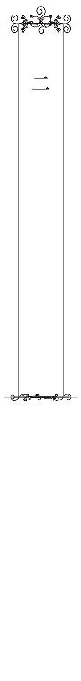
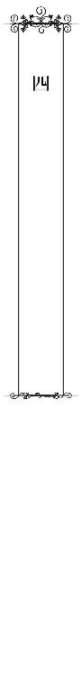

| 草食系彼氏がとんだ策士だなんて聞いてない【SS付】【イラスト付】 (チュールキス文庫) | |
| 里崎雅 | |
| 株式会社ジュリアンパブリッシング (2016) | |
この物語はフィクションであり、実在の人物・団体・事件等とは、いっさい関係ありません。
イラスト・鈴倉 温
所狭しと何台ものパソコンが並ぶフロアで、斉木乃々花は一台のモニターと真剣に見つめ合っていた。
「乃々花ちゃん、どう？」
やや焦った様子で後ろから声をかけてきた茶色のロングヘアの美人に、乃々花ははずむような笑顔で振り向いてみせる。
「できました、荒川さん。ギリギリになっちゃいましたけど、これでどうでしょうか？ 先方さんの希望、なんとか組み込めたと思います」
「本当？ 見せてみて」
ロングヘアの美人は、乃々花の六年先輩にあたる荒川舞子だ。すぐそばまで近づいてきた荒川の目は、モニター上の乃々花が作成したデザインをじっと見据えている。
「......うん、なかなかいい感じじゃない。急遽イチから作ったとは思えない。やっぱり乃々花ちゃん、感覚いいね」
乃々花は照れ笑いをしながらも素早くファイルを保存して、荒川がすぐに社外に持ち出せるようにとそれをＳＤカードにコピーした。
クライアントとの打ち合わせ時間は午後一番。確認作業や荒川の移動時間も考えると、午前中に仕上げてもギリギリだ。ほっとすると同時に、無事に仕上げられた達成感がこみ上げてくる。
乃々花の勤める成宮コミュニケーションは、業界でも中堅どころの広告代理店だ。広告代理店といっても広告の仕事を取ってくるだけでは終わらず、請け負った仕事のデザインやコピーも可能な限り社内で行う。営業部が持ち帰った仕事の制作を行うのが、ここデザイン部だ。
乃々花はそのデザイン部の三年目の社員で、デザイナー兼コピーライターとして籍を置いている。とはいえ実際にはデザイナーと名乗れるほど責任のある立場でもなく、なんでもやる雑用係といった方がふさわしい。
デザイン部は仕事内容に応じていくつかのチームに分けられているが、荒川は同じチームで乃々花の指導係だ。そして彼女は、チームだけではなくデザイン部全体のエースとも言える。
その荒川の抱えるクライアントが、急遽条件を変更すると電話してきたのは今朝のことだった。
「昨晩の役職者会議で、待ったがかかりまして......」
打ち合わせにはノータッチの取引先の上司が、直前になって口を挟み条件を変更してくることはよくある。向こうも申し訳ないと思っているのか「具体的な案は次回でもいい」と言われていたが、それではこっちの予定が狂ってしまう。
「乃々花ちゃん、できるとこまでやってみてくれない？」
朝イチでそう声をかけられたものの、正直仕上げられる自信はなかった。けれども忙しい荒川が今日の打ち合わせで具体案を煮詰めたいと思っていたのも知っていて、乃々花は他の仕事を一旦保留してまで取り組んでいたのだ。
荒川に褒められたのを嬉しく思いながら、乃々花はモニターを指さしながら話し始めた。
「本当は、もうちょっとこの辺のフォントとかこだわりたかったんですけど......時間もないですし、ひとまずこんな感じで。詳しくは、打ち合わせが終わって荒川さんが社内に戻られてからまた......」
話の途中で、荒川にじっと見つめられているのに気づいた。何か問題があったのだろうかと、乃々花は肩よりやや短い黒髪のボブを揺らしながら荒川を振り返る。
「乃々花ちゃんさ、午後から急ぎの仕事とかある？」
「え？」
「せっかくこんないい原案作ってくれたんだし、一緒に打ち合わせ行ってみない？」
「えっと、あの、それは......」
上目遣いで荒川を見上げると、彼女は困ったように頬に手を当てた。
「まあ......お察しの通り、担当は男の人だけど」
それを聞いて、乃々花はきゅっと唇を引き結んだ。
ここで怖気づいてたら、自分はいつまでたっても半人前だ。尊敬する先輩に誘われて、ついて行かない理由はない。
「い、行きます」
乃々花の返事を聞き、荒川の表情がぱっと明るくなった。
「よし、じゃあ行ってみようか。なるべく私もフォローするから大丈夫だよ」
背中をばしばしと叩かれ、不安もあったが無理に作り笑いを浮かべる。
「午後一で出かけるから、準備しといてね。じゃ、私は営業と打ち合わせしてくるから」
嬉しそうに去って行く荒川の背中を見送りながら、乃々花は小さく息を吐きデスクの椅子に背を預けた。吐息の理由は、急ぎの仕事を終えた達成感ではない。
（荒川さんに、迷惑かけないようにしなきゃ......）
早くも緊張で冷たくなり始めた指先を、無意識に擦る。そのとき。
「斉木さんって子、いるかな～？」
デザイン部のフロアに足を踏み入れた男性社員にいきなり名前を呼ばれ、乃々花は飛び上がった。
「はっ、はいっ！」
その男性社員に、見覚えはない。途端に、乃々花の背中にヒヤリと汗が滲む。
「どの子？」
返事をしたつもりが聞こえていなかったようで、男性社員はキョロキョロとデザイン部のフロアを見渡している。慌てて立ち上がった拍子に、椅子がデスクにぶつかってガンと大きな音を立てた。
「あっ、あの」
痛さを堪え、もじもじと手を上げる。
「君が斉木さん？ 先月更新で出してもらった住居届の書類に、不備があったからさ」
つかつかとこちらに歩いて来た社員はにこやかに笑みを浮かべているが、乃々花はわざと目を見つめないようにして彼の口もと辺りを見つめた。失礼かもしれないが、これが自分には精一杯だ。
彼の胸元にぶら下がる社員証には『総務部』の名前が見える。ということはこの人は総務部の社員で、乃々花のところに来たのも仕事の一環で......と、一生懸命頭に擦り込む。
「聞いてる？ 斉木さん」
「はっ、はい！」
腰を屈めて顔を覗き込まれ、目がバチリと合う。その瞬間、乃々花の顔は沸騰したかのように真っ赤になってしまった。
「この書類ね。緊急連絡先が漏れてたから、書いて欲しいんだ。多分前回と同じだとは思うんだけどさ。ご両親でも兄弟でもいいから連絡つく人の携帯番号でも......」
よどみなく話す彼の言葉が、聞こえているようで聞こえてこない。時折ちらりとこちらを見てくるので目も逸らせず、乃々花は直立不動でこくこくと頷くことしかできない。
──変なヤツって思われてたらどうしよう。
そんな余計な考えが、ますます自分を追いつめていく。
「じゃあ、そういうわけだから。鉛筆で印をつけてるとこ、書き終わったら提出しに来てね」
ハイ、と答えたつもりが声はひどく掠れて小さかった。彼が乃々花の顔を覗き込むことはもうなかったが、それがかえって「変なヤツ」だと認定されたのではないかと不安になる。
「それじゃあ、今日中によろしく」
ぽんと肩に手を置かれた瞬間、びくりと過剰なまでに身体が震えた。男性は怪訝な顔で乃々花の肩から手を離すと、忙しいのかさっさとフロアを立ち去って行く。その後ろ姿をこっそりと見送りながら、乃々花は一気に脱力してさらに深い息を吐いた。
緊張したのは、彼が知らない人だったからではない。
男性だったからだ。
ただ近くにいるだけだったり、当たり障りない会話をするくらいならなんとか平静を保てる。けれども、目を合わせるとダメだった。恥ずかしくてたまらなくなり、一気に冷や汗が滲み出てくる。
あんな風に顔を覗き込まれたら、もう致命的だ。
（こんなんで......荒川さんの打ち合わせについて行っても本当に大丈夫かな......）
落ち込みかけた乃々花に、向かい側のデスクからモニター越しに優しく声がかけられた。
「斉木さん、お願いがあるんだけどいいかな？ ちょっと俺らのチームの共有フォルダ、開いて」
「あっ、はい」
声をかけてきたのはデザイン部チーフの相原譲だ。長めの前髪に黒縁の眼鏡をかけていて、一見すると表情がよくわからないが、口もとがほころんでいるのでなんとなく微笑んでいるように見える。といってもこの表情が彼のデフォルトで、別に嬉しいことがあったわけではないらしい。
譲は荒川や乃々花と同じチームのリーダーだ。定期的に決まった仕事を繰り返す他のチームとは違って、臨機応変に色んな仕事を請け負うこのチームは「ジェネラルチーム」と呼ばれている。デザイン部の中でも有能な社員が集まった一番デキるチームなため、営業から持ち掛けられる仕事も多種多様。陰では「なんでもチーム」とか「万能チーム」とまで言われていた。
そんな「ジェネラルチーム」にたまたま所属することになった乃々花は、皆についていくのが精一杯の毎日だ。
急いでカチカチとマウスを操作し、言われたフォルダを開く。
「えっと......この、山の写真ですか？」
「そう、山って言うか崖の写真ね。この前話した健康器具会社のポスター、色々検討してもらったんだけど......結局この画像を背景に使うことになったんだ。ポスターの見出しコピー、考えるのを手伝ってもらいたくて。資料は前に渡したよね？」
「はい、それなら目を通してあります」
「それなら問題ないね。とりあえず今週中に目途つけたいからよろしく」
午後に出かける予定は入ったが、それまで急ぎの仕事はない。落ち込んだり不安になったりしている暇があるなら仕事をしようと、乃々花は資料の入ったファイルを棚から取り出した。
「それに、なんかやってる方が気がまぎれるんじゃない？」
さらりとそう続けられ、乃々花は目をパチパチさせながら顔を上げた。
「え......？」
それは、午後から打ち合わせに行くことを指しているのだろうか。
のほほんとしているように見えて、譲は常に周りに目を配り気配りのできる人だった。乃々花の動揺と緊張も、見抜かれていたのだろう。
「......がんばります」
譲の気遣いが嬉しくて、乃々花はほんのり顔を赤らめながらそう呟き俯いた。ちらりとパソコンの影から見えた譲の口もとも、いつもよりもっと微笑んでいるように見えた。
「相原チーフ、大変っす～！ スマイルスーパーのチラシ、今頃になって目玉商品を差し替えたいとか言ってきて。次の売り出し商品は、絶対野菜にするって言ってたのに！」
乃々花との会話が終わるや否や、譲の背後にいる男性社員から情けない声が上がる。
「印刷所で刷るの、明日ですよ？ 今から変えるだなんて鬼だ！」
「まあ、仕方ないよ。仕入れが上手くいかなかったのかな。前にもこんなことあったし、すぐ差し替えよう。変わりに入れる商品は？」
「なんでも、京都から仕入れたパンにするとか......。でも目玉商品なのに画像ないからそっちで用意してくれとか言ってて」
「あ、大丈夫。そこなら前にも直接画像もらったことあるところだ。画像チームのとこ行って、確認して来る。そのまま作業続けてて」
緊急事態にも関わらず、譲の口調は全く慌てることなくゆったりと穏やかだ。焦っていた男性社員も、つられたように落ち着きを取り戻していく。
「とりあえず......チラシは片面だけ作り変えたらいいですかね？」
「うん。パンの画像は、すぐに手に入るから安心していいよ。でもそれだけじゃスペースは埋まらないから、代わりに......」
テキパキと指示を出す譲にぼーっと見惚れていたら、不意に彼がこちらを向きそうになり乃々花は慌てて目を伏せた。
明日刷るチラシの内容を変更して欲しいなんて、緊急事態にもかかわらず譲に慌てている様子はない。手際よく対処できるのは経験もあると思うが、譲だからできることだろう。
どんなときでものんびりしていて、穏やかな態度を崩さない。社内では公然と『歩く草食系』と言われている彼だが、その仕事ぶりは普段の態度とは裏腹にかなりスピーディーで手際がいい。その彼がリーダーを務めるチームだからこそ、通称「万能チーム」なんて言われてしまうのだろう。
しかし譲のそんな姿を知っているのは、身近で仕事をしているデザイン部の人間だけだ。
他部署にいる同期の同僚にデザイン部での話をしても、
「相原チーフって、あの冴えない男の人？ 穏やかすぎ男子って言われてる人でしょう？」
と言われてしまう始末だ。
（まあ別に、みんなが相原チーフの凄さを知らなくてもいいんだけど......）
デザインだけでなくカメラマンやライティングもこなす譲は、バリバリと営業に出かける荒川と同じく乃々花にとって憧れの先輩だ。追いつくなんてまだまだ先の話だけれど、いつか彼らに認めてもらいたい。
しかしそうなるためには、乃々花には越えなければならない大きな壁がある。
「乃々花ちゃん、ちょっと早いんだけど行ける？ せっかくだから外で昼食取ってから行こうと思って。資料買うのに、書店も寄って行きたいし」
営業との打ち合わせを終えバタバタと戻って来た荒川が、せわしない様子で言った。
「え、あ、はっはい！」
乃々花は単なる付き添いだ。心の準備が、などと言ってる場合じゃない。
忙しい先輩に迷惑をかけちゃいけない。何よりも優先されるべきは、荒川のスケジュールだ。
慌てて椅子から立ち上がった途端、乃々花は激しく脚をデスクにぶつけてしまう。
「いたっ！」
「ちょっと大丈夫？ 慌てなくてもいいのよ」
荒川に軽やかに言われ、乃々花もつられて愛想笑いを浮かべたが内心はそれどころじゃなかった。慌てて財布やスマートフォンをバッグに入れ、震える手で作業中のパソコンにロックをかける。
大丈夫、大丈夫。仕事なんだから、初対面の男の人くらい。
必死にそう言い聞かせていると、気づけば乃々花のそばに譲が立っていた。けれどもその距離は微妙に離れていて、乃々花を気遣ってくれているのがわかる。振り返り見上げてみても、眼鏡の奥の彼の目は、さり気なく乃々花から逸らされていた。
「大丈夫かい？ いきなり打ち合わせなんて」
不用意に乃々花に触れることもなければ、顔を覗き込んでくることもない。乃々花の男性恐怖症を知っているせいか、譲は常に一定の距離を取ってくれる。それをとてもありがたいと思うと同時に、それ以上近づけないもどかしさを感じることもあった。
尊敬する先輩だからこそ、心配させたくなかったし認めても欲しい。
「は、はい！ 大丈夫です」
口もとが震えてるのに、気づかないでと必死に祈る。
「......そう。それじゃあ、俺もちょっと打ち合わせで外出るかな」
そう言うと、ぽんっと軽く乃々花の背中を譲が叩いた。相原のスキンシップは珍しくて一瞬驚いたけれど、不快感は全くない。先ほど男性社員に触れられたときとは大違いだ。そのことに自分で驚きつつ、フロアから出て行く譲を見送る。
（世の中の男の人みんなが、相原チーフみたいだったら平気になれるのかな......）
そんなありえもしない想像を重ね荒川を待たせている場合ではない。乃々花はプルプルと首を振ると鞄を手に荒川へと駆け寄った。
そしてこれが、事の発端となる。
夕方、打ち合わせを終え成宮コミュニケーションに戻って来た乃々花の姿は悲惨そのものだった。
デスクに着くなり、肘をつきがっくりと項垂れ顔を隠す。運よくデザイン部のフロアに男性社員はおらず、残ってる数人の女子社員達が心配そうに乃々花のそばに寄って来た。
「何かダメだったんですか？ 荒川さん」
あまりの落ち込みように本人には声もかけられないのか、女子社員の一人が少し遅れて席に着いた荒川に声をかけた。
「打ち合わせ自体は、滞りなく終わったわよ。用意していた原案は一発ＯＫだったし、何も問題なかったんだけど。でもねえ......」
荒川の気の毒そうなため息が聞こえる。悲壮感を滲ませていた乃々花は、ようやく顔を上げて目を潤ませた。
「......本当にすみませんでした。せっかく連れて行っていただいたのに、打ち合わせをブチ壊してしまって」
「ブチ壊してもいないし、私も相手方も気にしてないって」
荒川はそう言って軽く笑ったが、乃々花の目からは今にも涙が零れそうだった。
打ち合わせへの同席は、今までも何度か提案されていた。社内に籠って仕事をしているだけでは、いつまでたっても一人前とは呼べない。広告代理店はクライアントあっての仕事で、打ち合わせはかかせない。営業部はあるものの、クライアントの要望にいち早く応えるためデザイナーが打ち合わせに同席することはよくあるし、人手が足りないときにはデザイン部自ら営業に近い仕事をこなすこともある。
荒川の指示のもととはいえ、乃々花の仕事の負担も段々大きくなってきていた。もっと大きな仕事に関わっていくためにも、打ち合わせに行ってみよう、と。
期待を寄せられるのは素直に嬉しい。乃々花としても、なんとかその期待に応えたくて今回の打ち合わせについて行った。
が、結果は惨敗だった。
「まあ、初めてだったんだし仕方ない。勉強だと思って、あんまり思いつめちゃダメよ」
荒川は優しくそう言ってくれるが、それすら情けなくてますます落ち込んでくる。勉強どころか、足手まといだ。ひたすら固まる乃々花の横で、さり気なくフォローしてくる荒川の姿が思い出されて泣きたくなった。
「乃々花ちゃん......男性恐怖症だっけ？」
乃々花が男性を苦手としていることは、なんとなくだがデザイン部には知れ渡っている。男ばかりの営業部と違ってデザイン部には比較的女性社員が多かったが、それでも半数は男性社員だ。何かにつけてぎこちない対応をする乃々花に、特に年上の女子社員達は気遣ってくれていた。
「恐怖症っていうか......なんとなく、苦手で。初対面の人じゃなきゃ、話すくらいなら大丈夫なんですけど」
とにかく目を覗き込まれるとダメで、緊張して身体が動かなくなる。
「ずっと昔から？」
「ええと......小学校の高学年くらいから、です」
うわあ、と小さなどよめきが広がる。荒川までもが、ずっと前から空席になっている乃々花の隣のデスクに座り身を乗り出して聞いてきた。
「それはかなり年季が入ってるわね。中学は思春期まっさかりだからいいとして......高校は商業だっけ？ じゃあ女子ばっかりか。あ、でもデザイン学校は共学だったんだよね？」
「はい。でも......別に、わざわざ男子と話さなきゃいけないって場はほとんどなかったので」
専門学校時代は実践重視で黙々とパソコンのモニターに向かう日々で、男子と話す必要はそれほどなかった。グループ制作などの科目もあったが、大人しく地味な見た目の自分は黙って作業をしているだけでよかったのだ。
「あちゃー。勿体なーい！ 専門学校時代なんて、いっちばん遊べる時期なのにさあ」
「そうだよそうだよー。探さなくても同世代の男子が周りにわんさかいるって、今思うとなんって貴重！」
「アンタ達と一緒にしないの」
騒ぐ同僚達を笑ってたしなめながら、荒川が頬杖をつく。
「まあ、どうしても難しいのなら打ち合わせには出ないって道もあるのよ？」
「それは......嫌です」
迷惑をかけておいて嫌もへったくれもないとは思ったが、乃々花はきっぱりそう言い顔を上げた。
「中の仕事をしてるだけじゃ、いつまでも成長できないし足を引っ張るばかりで」
そんなことないと慰めてもらっても、そうじゃないのはわかっていた。乃々花のデザイン力やライティング能力に、他の人より抜群に秀でているものがあるならまだいいのかもしれない。けれども、そこまで自分が優秀じゃないのは充分にわかっている。
特技といえばちょこちょことイラストを描くくらいで、それすらプロのイラストレーターには遠く及ばない。
「気づいたらもう入社してから三年もたってて。私、このままじゃ何も変わらない......」
再び項垂れながら乃々花が呟いた。
入社した当初は、なんとかなるとタカをくくっていた部分もある。デザイン部の仕事を、外に出ることのほとんどない閉鎖的な仕事だと勘違いもしていた。
けれど、年を重ねるごとにこれではいけないと焦りが募るようになってきた。社内で知らない男性と接する機会といえばせいぜいお茶出しが精一杯で、それすら目を合わせないようにお茶を置くとそそくさと退室してしまって、他の女子社員のように雑談なんてもってのほかだ。情けない、としか言いようがない。
「うーん、それなら無理やりでも今日みたいに打ち合わせに連れて行くしかないかあ」
「でも、毎回こんなんじゃ荒川さんに迷惑が......」
そう話している途中、キィッと音をたててデザイン部の扉が開いた。
「......ん？ なんか、取り込み中？」
呑気に顔を覗かせたのは、譲だ。
「あ、えっとー......」
微妙な話題に皆が複雑な表情を浮かべると、譲は一瞬困った顔を見せそのまま扉を閉めようとした。
「ごめん。出直して来る」
「わーっ！ いえっ、なんでもないです相原チーフ！」
乃々花は慌てて立ち上がった。自分の私的な話のために、先輩を追い出すなんてありえない。
「あの、ちょっと雑談してただけで、本当に何も......っ」
顔が赤らみ、言葉が尻すぼみになっていく。最後までは話せず下を向いてしまったが、譲はフロアに入り扉を閉めた。ちゃんと伝わったとホッとしていると、彼はカサカサと手に持っていた紙袋を振る。
「雑談中ならちょうどよかったかな？ 外回りのお土産に、塩大福買ってきたんだけど」
「わー、さすがチーフ♪ 気が利く～」
「しかも豆福屋の塩大福！ 美味しいんですよね。冷たい麦茶、淹れてきまーす」
近くにいた女子社員が相原から紙袋を受け取り、キャッキャッとはしゃぎながらお茶を淹れるためにフロアを出て行く。
まごついたままの乃々花は手伝いを言い出せず、再びすとんと自分の椅子に腰を下ろした。
「ムード暗いよ？」
譲は乃々花に近づきそう言うと、鞄に手を突っ込み何かを取り出した。
「はい、じゃあ斉木さんには豆大福。限定で二個しか買えなかったから、特別ね。美味しいよ」
「あ、ありがとうございます......」
乃々花は力なく譲を見上げると、差し出された豆大福を両手で受け取った。ふに、と柔らかい感触の美味しそうな大福を手の平に乗せられ、ほんの少しだけ心がほんわりと温かくなる。
「うんうん」
乃々花に何かあったと察してくれたのだろう。譲はニコッと微笑み、乃々花の頭をぽんぽんと軽く叩いた。あくまで優しいその感触に、乃々花の口もとにもほんのりと笑みが浮かぶ。
（相原チーフって......なんだかこの大福みたい）
背が高く細い身体に、やや長めの黒髪と黒色の眼鏡。外見は大福とは遠くかけ離れているのに、なぜかそんな感想を抱いてしまう。
それは、彼が持つ雰囲気やひだまりのような温かい笑顔のせいだろうか。
深く追求されないことにほっとしながら、乃々花は大福を大切そうに手の平に包んだ。その様子を、横からじーっと荒川が見つめていることには気づいていない。
「荒川にも特別にやろうか？ 豆大福」
「いらない。このくそ暑いのに、大福って。甘ったるいわ」
荒川は冷たく言い放ったが、譲はめげる様子もなく笑いかける。
「冷たーい麦茶と一緒にどう？ それにここの大福はそんなに甘ったるいってわけでもないし」
「いらないって。他の子にあげて」
乃々花には優しい荒川だが、同期でもある譲にはなぜか厳しい。一度不思議に思って尋ねてみたら、専門学校時代の同級生でくされ縁だと聞いたことがある。
「なんか俺、戻って来たらまずいタイミングだった？ 何の話してたの？」
エアコンの真下に移動した譲は、パタパタと手で顔を仰ぎつつ荒川と乃々花の顔を交互に見た。
「乃々花ちゃんの男嫌いについて。ほら、初打ち合わせだったもんでね」
ひっと驚く乃々花を余所に、さらりと荒川が言った。
「あー、そっかそっか。思うようにいかなかったの？」
気の毒そうに視線を送られ、さらに凹む。
「はい......荒川さん、何回も話を振ってくれたんですけど、身体が固まっちゃって......」
打ち合わせ相手はスポーツメーカーで、約半年後から配布するパンフレットの表紙についての打ち合わせだった。
案内された応接ルームで荒川と二人で待っていると、爽やかな声とともに若い男性社員二名が入室して来た。覚悟していたはずなのに、スポーツメーカーらしくスーツの上からでもわかる健康的な肉体の彼らを前に乃々花は即座に引き攣った。
「お待たせして申し訳ありません」
たまに女性社員が対応することもあると聞いていたが、この日は不在だったようだ。万が一の可能性を祈っていた乃々花は、ここでまず緊張感が増した。
「先日はありがとうございました。今日もよろしくお願いいたします」
にこやかな笑みとともに手が差し出され、荒川は見事な笑顔でそれに応える。
「いえこちらこそ。よろしくお願いいたします」
何気なく握手を交わしたあと、男性社員は荒川の隣で凍りつく乃々花に目を向けた。
「そちらの方は？」
「あっ、あの......」
落ち着け落ち着け落ち着け。
そう自分に言い聞かせ、渇いた喉を潤そうとごくんと唾をのみ込む。なるべく相手の目を見ないようにしつつ、ぺこりと頭を下げる。
「斉木、乃々花と申します」
「今回の表紙制作に携わっております、斉木です。前回のご要望を踏まえて作り直した今回の案は彼女が作ったものでして、本日は勉強のために同席させていただければと」
乃々花のたどたどしい挨拶に、つけ足すように荒川が言葉を添える。
「そうなんですか。急にこちらの条件が変更になってすみませんでした。お見せいただけるのが楽しみですよ」
そこまで話したあと、相手はスーツの内ポケットに手を差し込んだ。何をしているんだろうと思っていると、荒川が小声で乃々花に言った。
「名刺」
あっと思って慌てて自分も名刺ケースを取り出し、震える手で一枚取り出す。
「広報部の安部と申します。この度の新作パンフレット担当ですので、よろしくお願いいたします」
そうして名刺交換をしようとしたときに、相手が不意に乃々花の顔を覗き込んできた。
「まだお若いんですね」
ずっと俯いていた乃々花を和ませようとして言ったのだろうが、これが逆効果となった。
見ず知らずの男性に見つめられている。そう意識した瞬間、喉の音がひりついたようになって残りの言葉が出て来なくなった。目の前にいる取引先の男性の顔が不思議そうに傾き、それを見てなお頭が真っ白になる。
こつんと肘で突つかれ、ようやくぎくしゃくとした動きで名刺を交換する。
「よ、よろしくお願いいたします......」
身体は強張り、声は消え入りそうなほど小さい。硬直しそうな身体を叱咤して、頭を下げるのがやっとだった。
「新人さんですか？ 可愛らしいですねえ」
乃々花は入社三年目だ。もう新人といえるレベルではない。見た目が幼いため学生に見られることも多かったが、それが仕事先でともなると情けない。いや、この場合の『新人さんですか？』は、乃々花の外見ではなく緊張しきった態度から出た言葉だ。何気ない一言は、さらに乃々花を打ちのめした。
ふと気づけば、相手はにこやかに手を差し出している。
握手だ。
慌てて差し出した自分の指が微かに震えているのに気づき、さらに焦った。
（あっ、握手なんかしたら、手にいっぱい汗をかいてるのがわかっちゃう......っ！）
反射的に、出しかけた手を一瞬引っ込めようとしてしまった。今まさに触れようとしていただけに、相手の男性が怪訝そうな顔をする。
「あのっ、すみません」
どうにか誤魔化し自分から相手の手を握ったが、反動で背中にばーっと汗が流れた。
「すみませーん、この子打ち合わせが初めてなもので、緊張してて」
荒川が珍しく媚びた声でそう笑うと、相手の男性は納得したように笑みを浮かべた。
「そうですか。可愛いですね。それでは早速、打ち合わせに入りましょうか」
出だしの失敗で頭が真っ白になり、落ち着くのに相当時間がかかった。そうでなかったとしても何か意見できたかは怪しいけれど、結局打ち合わせ中には乃々花は一言も声を発しなかった。
なんのために打ち合わせについて行ったのか。
思い出しただけでも、へたれな自分が情けなさすぎて死にたくなる。
「新人だと思ってたみたいだし、気にすることない......って言っても、乃々花ちゃんにとってはそういう問題じゃないか」
荒川のクライアントとはいえ、表紙の原案は乃々花が作成して先方もそれを気に入ってくれていた。アイデアの提案や相談したいことなら山ほどあったのに、どれも乃々花の口からは言えず仕舞いに終わってしまった。荒川とは打ち合わせ済みだったので問題はなかったが、それでも自分の仕事に責任を持てなかったことは悔しいし情けない。
「自分で聞いてみたいことだってあったでしょう？ やっぱり、納得いかないよね」
迷惑をかけたのは自分だと言うのに、荒川はどこまでも優しい言葉をかけてくれる。自分にそんな価値はないと、さらに泣きたくなる。
しょんぼりと肩を落としていると、譲は静かに乃々花の向かい側のデスクに腰を下ろした。そこだと、いい感じにモニターに隠れて譲の顔は直接見ずに済む。わかってやっているのか、とにかくこういう気遣いのできる譲の存在は本当に救いだ。
「まあ......こういうのって、精神的に色々あるんじゃない？ 本業はデザインなんだから、気長にやっていけばいいよ」
「でも、もうここに来て三年目です。焦るというかなんというか」
「お待たせー。麦茶淹れてきたよー」
麦茶を淹れに行っていた同僚達が戻って来て、ひとまず話は中断となった。けれども、モヤモヤと曇った気持ちはそのままだ。
「あ、そうだ。チーフ、営業部の桜木さんが戻り次第こっち来てくれって言ってましたよ」
「んー、わかった」
もぐもぐと乃々花の前で大福を頬張っていた譲は、麦茶を一気に喉に流し込み立ち上がった。そして、去り際ひょいっと乃々花の顔を覗き込む。
「あんまり思いつめちゃだめだよ」
驚いて固まる暇もなく、譲は颯爽と身をひるがえし扉の向こうに消えてしまった。おっとりとした見た目とは裏腹な機敏な動きに感心しながら、乃々花はふうっと小さく息を吐いた。せっかくもらった豆大福も食べる気にならず、そっと机の上に置く。
その様子を隣でじっと見ていた荒川が、ふと口を開いた。
「乃々花ちゃんさ、譲のことは割と平気なんだよね。どうして？」
「え？」
いきなりの質問に戸惑う乃々花の代わりに、パクパクと大福を頬張り始めた周りの同僚達が口を開く。
「どうしても何も、あの『人畜無害の穏やかすぎる相原チーフ』ですよ？ 乃々花ちゃんの男嫌いセンサーが反応しないんじゃないですか？」
「うんうん。草食系を通り越して、女に全く興味ないんじゃないって感じだもんね」
ね？ と同意を求められても困る。男嫌いセンサーなんて備えているわけでもないし、乃々花は曖昧な笑みを浮かべるしかない。
確かに、譲に対して乃々花の警戒心は全く働かなかった。長身で乃々花との身長差もかなりあるのに、不思議と圧迫感を感じないのは華奢な身体つきのせいだろうか。いつの間にかふわっと隣にいて驚いたことは何度もあるけれど、不快かと言われるとそうでもない。
「どうして......ですかね？ なんか、親戚の人みたいだからかな......」
乃々花がぽつりとこぼした一言に、どっと笑いが起こった。
「親戚ねえ！ わかるわかる」
「チーフ、穏やかすぎるっていうかたまにおじいちゃんみたいなときあるし」
親戚なんて言いすぎたかと焦ったが、皆同意してくれているようだ。しかし周囲がケラケラと笑い合う中、一人荒川だけが腕組みをしている。
「うーん、親戚ねえ......」
そのとき、デザイン部部長の森田が額に浮かんだ汗を拭きながらフロアに入って来た。
「ふう、今日も暑いなあ。おっ、なんかいいもん食べてるな」
プロレスラーのような外見に反して甘党な森田が、皆の手にしている大福に目を止める。
「チーフがお土産に塩大福買ってきてくれたんでーす」
森田は余っていた麦茶に手を伸ばしごくごくと飲み干したあと、ぷはっと息を吐き出しながら言った。
「夏なのに塩大福って......あいつ、おばあちゃんか」
呆れたような口調に、さらに皆がどっと噴きだす。
「そっか、おじいちゃんと言うよりおばあちゃん？」
「それはさすがに言いすぎだってー」
楽しそうな同僚達を、乃々花はどこか遠い目で見つめていた。
「あの......私、ちょっとお手洗い行ってきます」
誰に言うでもなく小声でそう言うと、盛り上がるフロアを一人そっとあとにする。
そうして一人とぼとぼと廊下を歩きながら、乃々花はまたため息を吐いた。
男の子が苦手だと意識し始めたのは、確か小学校高学年の頃だったと思う。
当時クラシックバレエを習っていた乃々花は前髪を伸ばしていたので、いつもピンで止めて額が丸出しだった。それだけで、やけに絡んでくる男の子の集団があった。
「お前のおでこ、なんかテカテカ光ってない？」
そう言って顔を覗き込んできては、ピンと額をはじかれる。揃いも揃って同学年とは思えない身体の大きな子の集まりだった。呆然として反応できなかったのが悪かったのか、それから乃々花は彼らに毎日からかわれるようになってしまった。
囲まれて顔を覗き込まれたり、鍵盤ハーモニカを奪われケースを壊されたり、周りの大人にしてみたら『他愛もない』ことだったらしい。が、乃々花にとっては相当深刻な悩みだった。
あまりにひどすぎると泣きながら先生に訴えてみたら、
「あの子達ったら、よっぽど乃々花ちゃんが好きなのね」
と、生温かい眼差しで見つめられたのも忘れられない。
結局、父親の転勤が決まり乃々花の転校という想定外の出来事により、強制的かつ唐突に彼らの嫌がらせは終了した。
だがその結果、「男の子が苦手」というトラウマが乃々花に残ってしまった。
転校先の学校で、男の子と話せなくなった。上手く話せない、手や足が震えてくる、とにかく逃げ出したくなる──。
そんな乃々花の変化は転校先に上手く馴染めないせいだと決めつけられ、親も先生も原因を探ろうとしなかったのがよくなかった。男の子を避けるように生活するのが公然と認められ、そのまま成長してしまったのだ。
さすがに成長するにしたがって全く話せないということはなくなったが、それでも苦手なのには変わりない。目が合うと、反射的に逸らしてしまう。それが無理な状況だと、ただひたすら身体が固まり汗がぶわりと滲み出る。
（大人になったらきっと治るって、お母さんは言ってたんだけどな......）
それがなんの根拠もない希望的観測にすぎないと、気づくのが遅かった乃々花も悪いけれど。
今回ばかりはダメージが大きすぎた。用を足したあともなんとなくフロアに戻れなくて、ふらふらと休憩スペースへ向かう。
誰もいないベンチにどっかりと腰を下ろし、乃々花はしょんぼりと項垂れた。
過ぎたことをいつまでも引きずるのは、乃々花の悪い癖だ。でも前向きにがんばろうだなんてすぐには思えなくて、なかなか立ち直ることができない。
何より、この会社での自分の将来が不安すぎる。
（このままじゃ......転職？ でもこの性格を直さなかったら接客業はまず無理だし、どこで働いても同じかもしれない......）
男性が苦手なままでも困ることは大してない──と目先のことしか考えていなかったのが、就職してから一気にのしかかってきた。
話すのが苦手なら、黙っていればいい。社会に出たらそんな甘えは通用しないし、たとえ理解してもらえたとしても、一人前として働くことは遠ざかる。まあ仕方ないよね、と優しく言われる度に、自分の不甲斐なさを痛感して情けなくなる。
高校受験のときに、女子の多い商業高校に進んだのが間違いだったのだろうか。なんて後悔したってもう遅い。
再び盛大なため息を吐いたところで、誰かがひょっこりと顔を出した。譲だ。
「ん、斉木さんがいた」
営業部に行った帰りだろうか。彼の足音に気づかないほど落ち込んでいたのかと、乃々花は慌てて頭を下げる。
「あ、すみません！」
「いや、謝ることじゃないでしょ」
譲はくすりと笑い、スタスタと乃々花の前を通りすぎた。そして、乃々花が座っているベンチの隣の、それも端っこに腰を下ろす。ふーっと深いため息が聞こえたのでそっと横を盗み見ると、眼鏡を外し目を手で覆い、背もたれに仰け反るように寄りかかっている姿があった。
「......あの、お疲れですか？」
「え？ あー。ちょっと外回りに出かけたせいで暑さにやられただけ。俺、暑いの苦手なんだ。昨日営業部に呼ばれて急遽飲み会に引っ張られたせいで、二日酔いってのもあるけどね」
苦笑しながら、譲が眉間から手を離す。眼鏡を外した彼を、横顔とはいえちゃんと見たのは初めてだ。
実はイケメンだと以前同僚が言っていたが、本当その通りだと思う。太い黒縁の印象的な眼鏡のせいでいつもは隠れているが、目の形がすごく綺麗だ。
「ん？ どうかした？」
ぼんやりと見つめている乃々花に気づき、譲が眼鏡を外したままこちらを見る。目が合って、一瞬ドキリとした。
「あ、いえ。チーフが眼鏡外してるとこ、初めて見たなーと思って......」
「ははっ。かけても外しても、あんまり変わらないでしょ」
譲はそう笑って再び眼鏡をかけたが、そんなことはないと思う。
（眼鏡かけちゃうのが、もったいないとか思っちゃった......）
そんな自分にハッとして、乃々花はもじもじし始めた。そろそろフロアに戻って仕事を再開しなきゃと思うのに、なぜか譲と二人のこの空間が居心地良くて立ち上がれない。相変わらずだるそうな譲はそれ以上何も言わず、乃々花も黙り込んだままだが決して嫌な沈黙ではない。
オープンスペースとはいえ、男性と二人きりの空間で緊張しないのは初めてじゃないかとふと気づく。
やっぱりこれは譲の醸し出す雰囲気のせいだろうか......と考えていたとき、不意に廊下から複数の足音が聞こえてきた。
「やっぱりここにいたか」
顔を覗かせたのは、荒川と部長の森田だ。トイレに行くとふらりとフロアを出て、そのままここへ来てしまったことを急に思い出す。休憩を取りすぎだ。
「す、すみません、すぐ仕事に戻ります！」
「いやいや、そうじゃなくて。もしかして一人で落ち込んでるのかなーって心配になっただけ」
荒川はそう言って笑うと、乃々花と譲の間に大きく空いていたスペースに腰を下ろす。
「その......本当にすみませんでした。せっかく連れて行ってくださったのに」
「その謝罪、何回目？ もう気にしないでってば」
荒川は乃々花の肩をぽんぽんと叩いた。
「少しでもね、何か発言できたらよかったんだけど。せっかくいいもの持ってるんだからさ。事情はわかってるつもりだけど......やっぱり勿体ないっていうかなんていうか」
優しい言葉に再び涙が出そうになり、慌ててそれを堪えた。
仕事もできて面倒見もよくて憧れの先輩に、迷惑をかけているのが惨めでたまらない。
どうにかして、この症状を克服したい。今まで生きてきて初めて、切実に思った。
「私、この性格をなんとかしたいって......今すごく感じてるんです。そうじゃないと、みんなに迷惑もかけて」
「誰も迷惑だなんて思ってないって。あんまり思いつめるのもよくないよ」
荒川はそう言って、乃々花の頭をヨシヨシと撫でる。
「でも確かに......このままじゃ、乃々花ちゃんが困るよね。仕事もそうだけど、恋愛とか結婚とかもさ。彼氏だってできないじゃない」
「それは、別にいいんです」
今は仕事が第一で、恋愛や結婚なんかに憧れている場合ではない。何より異性の顔も満足に見られない自分が恋愛だなんて、おこがましくて想像すらできない。
「勿体ないっちゃあ勿体ないよなあ。俺なんて、斉木さんの年の頃にはもう結婚してたぞ」
タバコを吸いながら話を聞いていた森田が、ふーっと煙を吐き言った。森田はデザイン部の一番上の上司ということもあって、乃々花が男性を苦手としているのを知っている。
「あれっ、部長。その前に、禁煙したって言ってませんでした？」
驚いた顔で譲が振り返ると、部長はウッと言葉を詰まらせタバコをもみ消した。
「お前......確か営業の連中と仲良かったよな。言うなよ!? 営業の部長と禁煙が続くかどうか賭けしてんだ」
「いや、社内の共有スペースでそんな堂々と吸ってる時点で、絶対バレますって」
「仕方ないだろー。喫煙所がここしかないんだから！」
二人のやり取りにつられ乃々花が思わず笑みを零すと、その様子をまた荒川が横からじーっと見つめている。
「荒川、どうかした？」
気づいた譲が、怪訝な顔で荒川に声をかけた。それには答えずうーんと腕組みをしていた荒川が、唐突に乃々花に言った。
「乃々花ちゃんさあ......森田部長のことも案外平気そうね」
「俺かぁ？」
森田がきょとんとした顔で荒川を見やる。
「俺なんて、父親みたいなもんだろ」
「はい。あの、こんな言い方は失礼かもしれないんですけど、森田部長ってなんだかお父さんに似ていて」
郷里にいる父も、建築関係の仕事をしているせいで筋肉質な身体をしていた。森田より若干背は低いが、タイプ的にはかなり似ている。
「そうかそうか。失礼も何も、むしろ嬉しいなあ。うちには息子しかいないもんで、こんな可愛い娘が欲しかった」
年代的にも父親と同じ世代で、だからか言動もよく似ている。乃々花を温かく見守っていてくれるのが伝わってくるせいか、警戒心を抱いたことはない。
「それに元々、年上っていうか......結構年が離れると、大丈夫なんです」
「ってことは、やっぱり譲が異例ってわけか」
そう言われると、なんだか譲が特別だと言われたようで恥ずかしくなってくる。ちらりと譲を見てみようとしたが、横に荒川がいるせいでよく見えない。
「男性恐怖症、治したいのよね」
「はい......って、恐怖症っていうと言いすぎっていうか、上手く話せないだけで......」
すると黙っていた譲が、口を開いた。
「でもさ。それって無理やり直す必要あるのかな？ 斉木さんの仕事は、デザインが主なんだし。デザインのセンスもいいし、ちょこっと描くイラストもなかなかいいって取引先でも評判なんだよ」
思いがけず仕事を褒められて嬉しかったが、このまま現状でいいと言われると違う気がする。乃々花は譲のいる方を見ると、小さく首を振った。
「あの、でも......今はデスクワークが中心でも、いつまでもそれだけってわけにはいかないと思うんです。ずっと荒川さんにおんぶに抱っこってわけにもいかないです」
「そんなこと、気にしなくてもいいんじゃない？ 荒川ばかりに迷惑かけるっていうなら、俺がついて行ってもいいし」
一瞬冗談で言っているのかと思ったが、真面目な顔を見る限りどうやらそうではないらしい。戸惑いながら、乃々花は首を振った。
「そう言っていただけるのはすごく嬉しいです。でも、それで社会人としてまともに働いてるとは言えないかなって」
俯いた乃々花の肩を、荒川が優しく撫でる。そうして、反対隣にいる譲をちろっと睨んだ気がした。
「デリケートな問題なんだって。そりゃ譲といるときの乃々花ちゃんは平気そうだから、大丈夫だろって思うかもしれないけど......」
そう言ってから、ふと荒川が口を噤む。どうしたのかと横を見てみると、今度は後ろからぷはーっと盛大に煙を吐きながら森田が話しかけてきた。
「斉木さんはずっと彼氏とかいないんだよね？ 男兄弟とかも？」
「あ、はい。兄弟も妹が一人いるだけで、唯一周りにいる異性って、お父さんくらいしか......」
「ああそっか。だから森田部長は平気なのかな」
譲に言われ、乃々花はこっくりと頷く。じぃっと下を向き何かを考え込んでいた荒川が、がばっと顔を上げた。
「ちょっと乃々花ちゃんさ、譲と握手してみ？」
いきなりそんなことを言われ、乃々花はえっと飛び上がりそうになる。
「は？ え？ ど、どうしてですか？」
「いいからホラホラ。譲は事情知ってるんだから、まだ気が楽でしょ？ さっきみたいな反応したって、コイツなら嫌がらないから大丈夫」
そんな風に促されても、戸惑ってしまう。固まる乃々花の前に、にゅっと大きな手の平が差し出される。
「俺でよければ、全然」
いつの間に立ち上がったのか譲が目の前にいて、にっこりと笑いながら手を差し出している。どうしようかと怯みながら、乃々花は大きくて指の長いゴツゴツとした手を見つめた。そうして数秒たったあと、ごくんと唾をのみ込んでから自分の手を差し出し譲の手をきゅっと握った。
協力してくれているだけなんだから、緊張する必要なんてない。
そんな気持ちがあるからか、それとも彼に対する警戒心がないからか、意外とすんなり握手ができた。顔を上げて譲を見つめてみれば、逆に彼の方が少しだけ戸惑った表情で乃々花を見下ろしている。
前髪と眼鏡に隠れて、あまりよく目が見えないからだろうか。
こうやってじっと見つめられても、身体が硬直してくることはなかった。
固唾を呑んで見守っていた荒川も、少し拍子抜けしたようだ。
「案外普通ね。どう？ 乃々花ちゃん」
「えっと......チーフの手、すごく大きいですね。それに私よりあったかくて」
「......そりゃどうも」
苦笑いをしながら、パッと先に手を離したのは譲の方だった。珍しく照れたような表情で、再びベンチに戻って座る。
慌てて乃々花も手を引っ込めたが、先ほどのようにじっとりと汗をかいたりはしていない。その代わり、緊張とも不快感とも違うどこかむず痒いような感覚がある。
（あれ、なんだろ。この感覚......）
不思議に思い手をじっと見つめる乃々花の隣で、荒川が納得した様子で話し始めた。
「やっぱり、なんか譲のことは平気そうよね。取引先の人に見せた態度とは、全然違う感じがする」
「少しずつ仕事をするうちに、慣れていったのかも......。チーフとは、荒川さんの次に仕事をする機会が多いですし、それに......」
「それに？」
促され、ちょっと恥ずかしいと思いつつも言葉を続ける。
「相原チーフ、優しいので」
乃々花はそう言うと、頬をほんのりと赤らめ下を向いた。それが男性に対する極度の照れからくるものだと、この場にいる全員は理解していた。が、理解はしていたとしても、その反応は誤解を呼ぶものだと誰もが内心思う。
うーん、と表情を曇らせた荒川を余所に、森田がのほほんと言い放った。
「それならさ、もっと男に慣れればマシになるんじゃないか？ 婚活に参加してみるとか、そしたらイヤでも男と話さないわけにいかなくなるし」
想像しただけで顔を青くした乃々花に代わって、譲がやんわりと森田を諭した。
「むしろ、逆効果だと思いますけど。男は相当、ガツガツ来ますよー。斉木さん、怯えるだけで終わるんじゃないかな」
「そうかあ。難しいな」
自分のためにみんなを悩ませてしまって、申し訳ない。しょんぼりと肩を落とし、ため息を吐いたときだった。
「やっぱり、無理に慣れる必要なんてない」
珍しくきっぱりと言い切った譲の言葉に、乃々花は顔を上げた。
「今でも斉木さんは、充分仕事をがんばってる。打ち合わせに一人で行くようになるのは、まあ仕事次第とはいえまだまだ先だし......焦る必要はないんじゃないかな。ゆっくり順応していけばいいよ」
「チーフ......」
毛嫌いしている対象の男性にそう言われ、乃々花は少なからず救われたような気持ちになっていた。
こんな風に、優しく見守ってくれる男性もいる。
ゆっくり順応。
乃々花にとっては、希望のある言葉だった。
「それならさぁ」
荒川が思い切った風に口を開いた。
「男に慣れるために、譲と付き合ってみるとかどう？ 試しにってことで」
「............え？」
譲の言葉を心の中でじんわり反芻していた乃々花は、言われた意味をすぐにはのみ込めなかった。ぽかんとしたあと、慌てふためく。
「付き合うってその、あの、それって......」
「どっか行くのに付き合えとか、そういうのじゃないわよ。彼氏彼女として、試しに付き合ってみたらどうかって言ってるのよ」
「な、なんでそんな発想になるんですか？」
一気に顔が真っ赤になり、乃々花はぶんぶんと顔を振った。彼氏はおろかろくに恋愛経験もないのに、そんな自分がまともに異性と付き合うだなんて思考はない。
というか、譲と付き合うとはどういうことだ？ 一体何をしたらいいのか。
そんな疑問がぐるぐると頭の中を駆け巡り、息が詰まりそうになる。
「そんな難しく考えなくていいからさ。まあ普通は付き合うっていうと、好意の上に成り立つものだとは思うけど......そういうんじゃなくて。男に慣れるため、練習のために付き合ってもらうってことよ」
「えーっ、おいおい。大丈夫か？」
不安そうな声を発したのは、森田だ。
「俺は一応みんなの上司だから、簡単には承諾できないぞ。ほら、そういうのってパワハラとかセクハラとか、色々面倒なのに繋がりかねないだろ」
「俺が、セクハラですか？」
譲がやや不満そうに言い、それを聞き森田は渋い表情で腕組みをした。
「あ、いや。うーん......でも歩く草食系もとい、穏やかすぎる男子で通る相原くんなら、斉木さんに無茶なことをするわけないか。確かに、コイツ以外の適任者はいないかもしれないなあ」
「歩く草食系、ねえ......。その言葉が相応しいかどうかは、私はちょっと判断しかねますけど」
荒川が微妙な面持ちで首を傾げると、森田がハッハッと笑い出した。
「いやいや。コイツと比べたら、俺の方がまだ男として負けてない気がする。大丈夫だろ。むしろ草食系すぎて、斉木さんにとっちゃあなんの進歩にもならないかもしれないな。そっちの方が心配だ」
乗り気になってきた森田に押し切られそうになり、乃々花は慌てて立ち上がった。
「そんな、あの......私、大丈夫です！ 自分でなんとか......」
「自分でなんとかって、あてはあるの？ 斉木さん」
冷静にそう意見してきたのは、あろうことか譲だった。
「あてって......それはまだ、特にないですけど......」
「大丈夫って口で言うのは簡単だよ。なんのあてもないのに、とりあえずその場しのぎでこの場を収めようとしているだけなら......何も変わらないんじゃないかな」
先ほどまで『ゆっくり順応していけばいい』なんて言っていたのにどういうことか。ニコニコと穏やかそうな顔はそのままなのに、意外にも辛辣な意見を投げる譲に乃々花は困惑した。
確かに言われたことはその通りで、言い返しようがない。
「ああ、ごめん。落ち込ませようと思ったわけじゃないんだよ」
譲は慌てて立ち上がりそばまで歩いて来ると、黙り込んだ乃々花の頭を優しく撫でる。それを黙って受け入れる乃々花の様子に、森田と荒川は密かに目を見開いていた。
乃々花の頭の上では、もしゃもしゃと大きな手が動いている。意外にも心地よいその手の動きを受け止めながら、ちらりと譲を見上げた。
「でも、そんな面倒なことチーフは迷惑じゃ......」
「俺は別にかまわないよ。じゃなきゃ、こんなたきつけるようなこと言わないでしょ」
ニコニコと微笑んだままでさらりと言われ、さらにどうしていいかわからなくなる。
「まあ、いきなり彼氏彼女としてってわけはいかないだろ？ うん。練習だと思え練習」
森田はしまったはずのタバコを再び取り出し火をつけ、ふーっと煙を吐き出した。
「練習、ですか......」
森田の言葉が乃々花の頭の中でぐるぐると周り、肝心の譲がうーんと小さく唸ったのは聞こえてこなかった。
こんなに呆気なく承諾してくれるということは、譲は『付き合う』といっても恋人同士として『付き合う』つもりではないのだろう。森田が強調した『練習』の言葉が、一番相応しい気がする。
（男性に慣れるために、練習に付き合ってくれるってことだよね。だとしたら......こんな過剰反応しちゃって、ちょっと申し訳ないかも......）
こんなところでまで自意識過剰が出てしまったと、乃々花は顔を赤くした。
現状打破したい気持ちは、もちろんある。
仕事で独り立ちしたいという気持ちもあるが、ほんの少しだけ、恋愛に憧れる気持ちがあるのも確かだ。男性が苦手だからといって、嫌いなわけじゃない。テレビや雑誌の俳優は素直にかっこいいと思うし、普通の女の子みたいに素敵な男性と付き合ってみたいと夢見る気持ちも当然ある。
ちらりと譲を見上げた乃々花は、にこっと微笑む彼と目が合い慌てて視線を逸らした。
（......相原チーフだって、まさか本当に私の恋人になってくれるわけないか）
いくら優しくて穏やかで『歩く草食系』と呼ばれる譲だって、こんなことで簡単に恋人を作ったりはしないだろう。誠実そうな彼だから、男性が苦手な後輩のために力を貸してくれようとしているのだ。それを、迷惑をかける側の乃々花が渋るのはきっと違う。
譲と親しくなることで何かが変わるのなら、乃々花だって変わりたかった。
思い切って顔を上げ、乃々花は譲を上目遣いで見つめてからペコリと頭を下げた。
「それじゃあ、あの......ご迷惑をおかけしちゃうと思いますが、よろしくお願いいたします」
「げほっ！」
乃々花がすんなり頭を下げる様子を見て、森田がタバコの煙にむせて噴きだした。
「なんですか？ 部長」
譲がぎろりと森田を睨んだ気がして、乃々花は驚きゴシゴシと目を擦ってしまった。が、すぐに彼の目はいつもの穏やかなものに変わっている。
見間違いかと首を傾げていると、しばらく煙にせき込んでいた森田が涙目になりながらふうっと大きく息を吐いた。
「ま、まあ......相原くんなら大丈夫か。強引なことはしないだろうし、ちょっと勉強のつもりでっていうなら......」
「ちょっとって、聞き捨てならないですね部長。俺はそんな、いい加減なことしませんよ」
「......アンタ、大丈夫なのよね？」
言い出しっぺの荒川が、目の前に立つ譲の腕を掴んだが、彼はそれをさり気なく振りほどいた。
「さ、皆さんそろそろ仕事に戻った方がいいんじゃないですか？ この四人が揃ってデザイン部を抜けていたら、何かあったときに対応できないし」
「うわ、わざとらしい」
荒川はそう言って顔をしかめたが、譲の言い分はもっともなだけに渋々立ち上がった。乃々花は戦力には入っていないとは思うが、一番長く休憩していたのは自分なので急いで立ち上がる。
「あの、皆さんお時間をいただいちゃってすみません」
「いやいや。じゃあ、戻ろうか」
森田は吸いかけのタバコをぎゅっと灰皿に押しつけ火を消すと、頭をぼりぼりとかきながら休憩室を出て行く。
「あ、俺はコーヒー持っていくから」
譲がそう言ったので、乃々花はこくんと頷き森田のあとを追った。本当に付き合うわけではないがどこか気恥ずかしかったので、少しだけほっとしながら。
乃々花の背中をじっと見つめ、譲は紙コップにコーヒーを注いだ。乃々花達のあとに続こうとした荒川が、くるりと振り返り譲を睨みつける。
「......ほんっと、頼むわよ。アンタを信頼して、あの子を任せるんだからね」
「荒川に信頼してもらえるとは光栄だな」
譲の口調が、ほんの少しくだけたものに変わる。それと同時に、穏やかな笑みはすっと消えた。「穏やかすぎるチーフ」で通っていたとしても、それはあくまで社内での話だ。
学生時代から付き合いのある荒川には、むしろこんな顔の譲の方がスタンダードだった。
「まあ、乃々花ちゃんを大事に育ててるのは知ってたけど......もしかして、それ以上の感情で動いてる？」
「さあ、どうだろうな」
「......なんか心配になってきたわ......」
荒川がブツブツ言いながら休憩スペースを出て行くと、残された譲は一人肩をすくめてくすくすと笑っていた。

怒涛のような一日が終わり、乃々花はようやく帰り支度を済ませてフロアの廊下へ出た。すると少し先に帰ったと思っていた譲が、にこやかな顔で廊下の壁によりかかり立っている。
「一緒に帰ろうか」
一瞬何が起きたのかわからず、キョロキョロと辺りを見渡した。が、周りを見渡してもいるのは乃々花だけだ。
「俺、斉木さんに話しかけたつもりだったんだけど」
譲はそう言うと、くっくっと笑い出す。
「す、すみません！ その......あの、帰るって？」
「あはは。まず一緒に帰るところから始めてみようと思ったんだけど......まあ、歩きながら話そうよ」
ビルのエレベーターも入口も一つしかないのだから、必然的に向かう方向も一緒だ。首の動きで促され、乃々花はスタスタと歩き出した譲のあとを慌てて追った。
ロビーを抜け外に出たところで、ようやく譲が立ち止まり乃々花を振り返る。
「まずさ、会社の中じゃないとこから慣れていくのがいいんじゃないかと思って。社内だと先輩後輩って感じで、特に俺には異性を感じないでしょ？」
「そんな、全く感じないってわけでもないんですけど......」
「でも比較的そういう傾向にあるってことだよね？ 他の男達と違って警戒も緊張もしないって、嬉しいようなそうでないような......微妙な感じなんだけどね」
躊躇いながらも隣に並ぶと、彼の歩調が遅くなり並んでいても歩きやすくなる。
「斉木さんは、通勤は確か電車だよね？ ＪＲだっけ？」
「はい。だから、駅に行くにはこっちで......」
真横の道を指さしたが、譲はそれをにっこり笑って受け流し逆方向へと歩き始めた。
「あ、あの、どこか行くんですか？」
「ちょっと付き合って欲しいところがあるんだ。これから何か用事とかあった？」
「ないです、けど......」
人の波が増えてきたせいか、僅かに譲と乃々花の距離が縮まる。肩と肩が触れて身体が強張ったが、ごくんと息をのんでそれに耐えた。
譲が自分の時間を割いて乃々花に付き合ってくれているというのに、緊張している場合ではない。これだけの人ごみの中では、むしろ近くにいないとはぐれてしまう。
二人の間の僅かな隙間を中年のサラリーマンが無理やり通り抜けて行き、今度は逆に距離がぐんと空いた。かといって、乃々花から距離を詰める勇気もない。どうしようと思っていると、譲は乃々花を振り返りツンツンと自分の鞄を指さした。
「......？」
「さすがにいきなり手を繋ぐとか、無理でしょ。でもはぐれたら困るし、俺の鞄掴んでて」
そういう意味だったか。
「わ、わかりました」
こんな人ごみの中ではぐれたら困るんだから、これは当然で仕方ない行為だ。
乃々花はそう自分に言い聞かせ、つんっと譲の鞄の端っこを手に持った。普段よりもかなり近い距離に緊張はもちろんするが、これなら手に汗をかいてもバレないので多少気は楽だ。
「......なかなか、萌える姿だね」
さり気なく振り向いた譲が、鞄をちょこんと掴む乃々花を見下ろしてぼそりと何かを呟いた。
「え？ 何か言いました？」
「いやいや。それじゃあ行こうか。離れないように、ちゃんと握っててね」
「はい！」
優しい声音にほっとしながら、乃々花はきゅっと鞄の端を掴む手の力を強めた。
混雑した大通を抜け一本裏道に入り、譲は慣れた足取りですいすいと路地を進んで行く。どこまで行くのだろうと思っていたら、その足は唐突に一軒の暖簾の前で立ち止まった。
「ここ、学生んときからの行きつけなんだ。ちょっと古い感じするけど、味は抜群だから」
そう言ってガラガラと戸を引いた。
「いらっしゃいませ！」
威勢のいい声が聞こえてきて、乃々花も恐る恐る店内に入る。
「カウンターでもいい？ 向かい合って座るより、最初は隣の方がマシだと思う」
「は、はい。大丈夫です」
カウンターに座ろうとして、まだずっと譲の鞄を握りしめていたのに気づいて慌てて手を離した。
「すみません！」
「なんで謝るの？ むしろずっと握っててもよかったんだけど」
笑いながらもさり気なく椅子を引かれ、おどおどしつつ乃々花は椅子に座った。
（これって......レディファーストってやつかな。それとも、ただの常識？ よくわかんないけど、なんか照れる......）
こんな行動一つで戸惑うほど、自分は異性との接触がなかったことを思い知る。
「何飲む？ お酒、あんまり強くなかったよね」
乃々花が会社の飲み会に参加したのは、自分の歓迎会の一度きりだ。それも慣れない雰囲気に具合が悪くなってしまい、一次会で早々と退散していた。
乃々花の酒の強さを覚えていてくれたことに驚きつつ、渡されたソフトドリンクのメニュー表からジンジャーエールを注文する。譲が注文したのは生ビールだ。
「さて、とりあえずお仕事お疲れさまでしたーの乾杯」
そう言われ、グラスとジョッキをカチンと合わせる。いくら穏やかで優しい譲が相手とはいえ、二人きりでここまで来るのは緊張していたのだと思う。乃々花はグラスに唇をつけた途端に猛烈な喉の渇きを感じ、一気に飲み干しぷはーっと息を吐いた。
その様子を横目で見ていた譲が、ぷっと噴きだす。
「そんなに一気に飲まなくても。やっぱり、俺でもダメ？」
「ええと......その......」
服装も眼鏡も穏やかな表情も、いつもと同じなのにどこか違うように思えてぶわっと緊張がこみ上げてくる。
「無理しなくていいよ。そういうのに、慣れてもらうための俺だから。正直に言ってもらった方が嬉しいし助かる」
優しい言い方にほっとしながら、乃々花は口を開いた。
「ごめんなさい、やっぱりちょっとは緊張しちゃって」
チーフがいつもとちょっと違う雰囲気で、とは言えずになんとなく隠した。とはいえ素直に緊張してると打ち明けることすら、乃々花にとってはかなり珍しい。
「当然だよ。俺だって、それなりに緊張してるしさ」
「え？ チーフがですか？」
驚いて、隣の彼を凝視してしまう。
「そりゃあ、緊張するよ。つい何時間か前までは、普通に後輩というか部下だったわけだからね」
なんとなく言葉が引っかかり、乃々花は首を傾げた。
──何時間か前までは、普通に部下......？
じゃあ今はなんなのだろうと一瞬思ったが、質問する間もなく譲は別の話を始めてしまった。
「全く緊張しないっていう人もいるとは思うけど、俺もどちらかというと異性と過ごすのには苦手っていうか緊張する方かも」
「本当ですか？」
「うん。だから斉木さんの力になれるかどうか、本当はわかんないんだけどね」
そんなことないとばかりに、乃々花は盛大に首をブンブンと振った。
異性が苦手と言いながらも、ちゃんと協力してくれる譲はなんて優しいのだろう。それに、そんな彼なら異性に気後れしてしまう自分の気持ちも理解してくれるかもしれない。
「お、きたきた」
そんな二人のもとに、注文した品が次々と運ばれて来た。
「精肉のタレが十本と焼きおにぎり三個、大根サラダにフライドポテトです～」
どんっと置かれた品々はどれも山盛りで、乃々花は大きく目を見開いた。
「......これ、全部大盛りで注文したわけじゃないですよね？」
「あはは、驚いた？ 全部これで一人前なの。ここはどの料理もこんな感じだから、大食いの俺にはかなり助かるんだよ」
譲はいただきますと箸を手に取ると、ものすごい速さでパクパクと食べ始めた。
「斉木さんも食べよう。美味しいよ？」
「はぁ」
割りばしを渡されたが、むしろその量と食べっぷりに圧倒され見ているだけでお腹がいっぱいになりそうだ。歓迎会を除くと譲と食事をするのは初めてで、こんなに食べる人だとは知らなかった。その細い身体からは想像もつかないほど、勢いよく料理が彼の口に吸い込まれていく。
「チーフって、よく食べるんですね。いつも外食なんですか？」
「うん。まあ若くて金もなかった頃は自炊してたけど......基本的に俺、料理苦手だし面倒くさがりなんだ。夜は大体一人で仕事帰りに飯食べて帰るよ」
話しながらも、譲の手は止まらない。呆気にとられていると、追加の料理を運んで来た男性店員が二人に話しかけてきた。
「おっ、女の子連れとは珍しいね」
譲は何も言わず、代わりに照れたようにパクリと焼きおにぎりを口に入れた。
女の子連れが珍しい。その言葉に、なぜかほっとしている乃々花がいる。
考えてみると、譲は職場でも単独行動が多い。昼食時に部長の森田とたまに一緒にいるのを見かけるが、それ以外には特定の誰かとつるんでいる気配は感じられなかった。
（それって......一人でいるのが好きってことかな。相原さん、たまにだけどクールな顔してることもあるし）
譲がこうして付き合ってくれている経緯は、偶然その場に居合わせたことと、乃々花が唯一男性嫌いを発動しない若い男性だからだ。そこに譲の希望はない。
こちら側の事情だけで譲を振り回し、貴重なおひとり様の時間を奪っているのかもしれない。
むしゃむしゃと唐揚げを頬張る譲の横で、乃々花は途端に不安に襲われた。
「あの......面倒なことにつき合わせてしまって、申し訳ないです」
急に申し訳なさがこみ上げ、ぱたんと割りばしを置く。
「仕事から解放されて、やっと一人になれる貴重な時間なのに。こんなところまで部下の私がついてきちゃって、仕事感覚が抜けないんじゃ......」
「そうやって、なんでも悪い方悪い方に考えちゃうの、斉木さんの悪い癖だよ」
追加で注文した出汁巻き玉子を箸で切り分けながら、譲が言った。
「何を考えてるのか、わかりやすすぎて笑っちゃうくらいだな」
「え、私そんなに顔に出てますか？」
焦って両頬に手を当てる。
「うん。俺は一人でいる時間も、もちろん嫌いじゃないけど......でも好き好んで、あえて一人でいるってわけじゃないから」
譲はそう言うと、隣に座る乃々花を優しく見下ろした。
「一人で食べるご飯より、斉木さんと一緒に食べるご飯の方がずっと美味しいよ」
（う、わっ）
ぼぼっと自分の頬が赤くなるのがわかった。
「あ、相原チーフって......」
「ん？」
ニコニコと笑う彼から慌てて目を逸らし、乃々花はなんでもないとばかりに首をふるふる横に振った。
わざとなのか天然なのか。そのセリフは、かなり女の子の心地よさをくすぐる言葉だ。
もしかして乃々花が思っているよりも彼は女の子に慣れているのかもしれない。しかし「穏やかすぎる草食系」と言われる譲が、女の子を口説き落としている様子は全く想像できなくて乃々花は首を捻った。
気のせいだろうか。
普段の生活や仕事ではそれなりによく気がつく方だと思うが、それが男性相手となるとまるでダメだ。そもそも苦手で目を逸らしている男性の気持ちなどわかるはずがなく、友達からは『鈍感娘』の烙印を押されてしまっている。
このカンは、きっと見当はずれだろう。
穏やか男子で草食系。それは職場の誰もが認識している譲の姿だ。思わせぶりなセリフも乃々花だけに対してじゃなく、相手が誰であっても自覚なしのセリフなんだろう。
「食べないの？ 冷めちゃうよ」
「あ、はい」
乃々花は慌てて目の前に置かれていたおにぎりを手に取った。ぱくりと一口食べると、絶妙の塩加減と米の固さに声が漏れる。
「おいしっ......」
目を細め、もう一口おにぎりを頬張った。
「斉木さん、すごく美味しそうに食べるよね。やっぱり一緒にご飯を食べるんだったら、そういう人の方がいい」
乃々花だって、こうやって美味しそうにモリモリとご飯を食べる人が一緒だと楽しい。嬉しいけれどそれを言う勇気はなくて、だからこそ譲がはっきり言ってくれると嬉しかった。
（やっぱり相原チーフって優しいな......）
そんな人がこうして手伝ってくれるなんて、幸せに思わなければならないかも。面倒くさい後輩だと、放っておかれたっておかしくないのに。
「ありがとうございます」
「うん」
聞こえないかもしれないと思いつつも呟いた言葉に反応してくれて、乃々花は下を向いたままこっそり口もとを緩めた。
「連絡先、交換しておこう。これから先は必要になるだろうから」
駅まで送ってくれた譲に礼を言い別れようとしたところで、そう呼び止められた。
「連絡先......ですか？」
「うん、お互い携帯番号くらいしか知らないだろ？ しかも斉木さんが知ってる俺の携帯番号って、仕事用の番号だから。プライベート用は別なんだ」
譲はそう言うと、ジャケットの内ポケットから携帯を取り出した。たまに職場で使っているのを見かける携帯電話ではなく、見たことのないスマートフォンだ。
「使い分けてるんですか？」
「うん。あんまり仕事だけの付き合の人に、プライベートまで踏み込んで欲しくないっていうか」
「え、なのにいいんですか？」
「斉木さんならいいよ。というか、知っておいてもらいたい」
どきんと胸が跳ね、顔が赤くなった。
純粋にいえば、乃々花だってただの後輩で職場でしか付き合いのない人間だ。いくら男性に慣れるために付き合ってくれているといっても、仕事の関わりしかないのにプライベート用の番号を聞いてしまっていいのだろうか。
「あの......」
理由を聞いてみようかと思ったが、譲はスマートフォンを片手に乃々花の反応を待っている。数秒迷ったが、乃々花もゴソゴソとバッグの中からスマートフォンを取り出した。
「あの、それじゃあ」
そう言って、お互いの電話番号だけではなくメールアドレスも交換する。ついでに、よく使うメッセージアプリのＩＤもだ。
仕事で必要だからと事務的にするアドレス交換じゃないことに、ドキドキする。思えば、異性とアドレス交換するのも初めてかもしれない。譲は交換が終わるとさっさとポケットにスマートフォンをしまい、すぐに乃々花から一歩離れた。
「そろそろ電車が来る頃じゃない？ 俺も寄るとこあるから、ここで」
「あ、はい。あの、お疲れさまでした」
譲はにこっと笑顔を見せると、踵を返しあっという間に乃々花から遠ざかって行った。その態度はいつも通りというか、職場にいるときの譲と全く変わらない態度だった。足早に去って行く背中を見つめながら、乃々花はふーっと深い息を吐いた。
優しく乃々花に気を遣ってくれる態度は会社にいるときの「優しい穏やかなチーフ」と同じだけれど、時々違う表情をふと見せるのが気になった。
たまに思わせぶりなセリフを口にしたりもするが、それはただの天然かもしれない。
結果として二人きりの時間は緊張もしたけれど、同時にどこか安らぎも感じられて全てが新鮮だった。
（相原チーフとのご飯、楽しかったな）
一人暮らしをしているのは乃々花も同じだが、自炊か外食かは大きく違う。入社三年目のまだ少ない給料のせいもあったが、乃々花の場合は単に一人で外食するのが苦手だった。そこに立ちはだかるのは、やっぱり男の人が苦手という壁だ。
譲のように馴染みの店ができたら素敵だと思うけれど、そこまでの道のりはまだまだ険しそうだ。
（いつか、会社の帰りにデートとかしたりして......）
そんな妄想をしかけて、慌てて頭の中の想像図をかき消した。今の自分には、まだまだ遠い未来の話。でも、そのための一歩を踏み出していると思うとなんとなく嬉しい。
乃々花はいつもよりも軽い足取りで、混み合う改札口へと歩き出していた。
翌朝。出社してすぐホワイトボードを眺めつつ今日の予定を確認していると、ぽんっと軽く背中を叩かれた。
「おはよー、乃々花ちゃん」
「おはようございます、荒川さん。......あ」
荒川の後ろから、のそっと姿を見せたのは譲だ。
「あ、チーフ、おはよございます！」
「おはよー」
勢いよく挨拶をした乃々花とは裏腹に、譲は普段通りの様子でするりと横を通りすぎて行ってしまった。
いつもと変わらない態度に、一瞬ぽかんとしながら譲の背中を見送ってしまった。
「ん？ 乃々花ちゃんどうしたの？ 譲になんか用？」
「いっ、いえ！ なんでもないです！」
変わらない譲の態度に、ほっとしたようながっかりしたような複雑な気持ちだ。
ご飯を食べに行ってプライベートの電話番号を聞いたくらいで、親しくなったと思ってはいけないのかもしれない。しょんぼりと俯き気味になった乃々花の顔を心配そうに荒川が覗き込む。
「それならいいんだけど......譲に何かされたら、すぐに言うのよ？」
「何かって......相原チーフに限って、そんなことないですよ。何もないです」
「それなら、いいんだけど」
荒川はなおも心配そうにこちらを見ていたが、営業部との打ち合わせ時刻が迫っていることもありすぐに乃々花から離れて行った。
いつもと同じくバタバタと仕事に追われ午前中が終わり、昼休みが明けてすぐのことだった。
「相原チーフ、アリオンマーケット広報の方が見えてるって受付から連絡入ってますけど」
電話を取った同僚にそう言われ、譲はぎょっとした表情で立ち上がった。
「え、なんでいきなり」
「アポ取ってた......わけじゃなさそうですね。どうしますか？」
「参ったな。ひとまず、すぐに通してもらって。あ、会議室空いてたっけ？」
「今の時間なら、第三が空いてます」
「それならそこに」
いつでものんびりとしている譲が、珍しく焦った様子で自分のデスクから資料の束を探している。
「アリオンっていうと......今度、新店舗の全面広告を受け持つとこよね？ 各チームから何人か出して、臨時チーム作って」
「そうそう。この前顔合わせやったばかりのところ」
「はー？ あんな大手のクライアント様が、なんで直接こっちに来るわけ？ 約束もしてないのに」
荒川の声に反応して、森田が慌てふためいた。
「お、おい。まさか苦情とか言いに来たんじゃ......」
「違いますって」
譲はげんなりとした様子で言った。
「あの人は特別なんですよ。前にも小さい仕事は請け負ったことがあるんですけど......そのときも、社内でやると上司の目が気になるからイヤだって言って、わざわざこっちまで来てて。今回は、もうすぐ完成する新店舗ってこのビルの近くだし、ちょうどいいってのもあると思います」
「ふーん。なんか、面倒くさそうな人なのね」
荒川の言葉に、譲はため息を吐きつつ何度も頷いた。
「破天荒な人だから、振り回された時点でこっちの負けなんだよね。ええと、あとは......あ、悪い斉木さん。営業の桜木に連絡してくれる？ すぐに第三会議室来てくれって」
「はい、わかりました」
電話を取り営業部に電話連絡をしていると、視界の隅で譲が慌ただしく書類の整理をしているのが目に入った。
アリオンマーケットといえば、全国にスーパーやショッピングモールを何千店舗と抱えている大会社だ。そんな大会社との案件ならこちらから出向くのが当たり前で、向こうから足を運ぶ必要などない。いくら新店舗が近いとはいえ、その広報の人はかなりの変わり者かもしれない。
「桜木さん、すぐにこちらに来てくれるそうです。お茶の準備しておきます」
「ごめん、頼む」
バタバタとフロアを出て行った譲のあとに続いて、乃々花もお茶の準備をしようと急いで給湯室に向かった。
話し声の漏れ聞こえる第三会議室の前で、乃々花は人数分のお茶を乗せたトレイを持ち深呼吸をした。目を見ないように気をつければ、これくらいは大丈夫だ。
（大丈夫大丈夫。これは仕事なんだから）
乃々花の男性恐怖症を知っている荒川が代わってくれようとしたが、こんなことで先輩の手をわずらわせるわけにはいかない。ただでさえ、荒川はジェネラルチームのエースで抱えている案件も多いのだ。目を見ないように気をつければ、これくらいきっとなんとかなる。
ただのお茶くみにしては大げさすぎる決心を固めながら、乃々花はコンコンと厳かにノックをした。
「お茶を持ってまいりました」
「どうぞ」
いつも通りの譲の声に勇気づけられながら、静かに扉を開けて身体をすべりこませる。営業の桜木という社員はまだ姿を見せていないらしく、譲の前に知らない男性が二人座っていた。彼らが、アリオンマーケットの社員だろう。視線を下げ気味にしながらも、乃々花は軽く会釈をした。
「し、失礼します」
か細い声でそう言ったあと、彼らへ近づく。隣に立ちお茶を置くときに少しだけ手は震えているのに自分で気づいたが、お客様にバレるほどではないと思う。息をひそめながら二人目の横にお茶をことりと置いたときに、事件は起きた。
「あ」
乃々花がお茶を置こうとした瞬間にその男性が腕を不意に動かし、茶碗にぶつかってしまった。そうして跳ねたお茶の滴が、男性の高価そうなスーツの腕にかかる。
「ん？」
「ご、ごめんなさい！」
ついた沁みはほんの少しだったが、相手が大手クライアントだとわかっていた乃々花は青ざめた。慌ててトレイをそばに置き、ポケットから取り出した白いハンカチを男性の袖にあてる。
「え？ なんかあったの？」
「あ、あの、お茶が跳ねてしまって！」
「ああ、大丈夫だよ。それくらい」
焦ってハンカチを何度も袖に押しあてていたからか、男性が乃々花の手を押さえた。
「お茶くらいどうってことないって。落ち着いてよ」
そう言って、にっこりと微笑みながら乃々花の顔を覗き込んだのだ。
男性の目が、当たり前だが乃々花をまっすぐに見つめている。知らない人の失礼ながらニヤけた視線に、乃々花の動揺は沸点に達した。
「す、すみません！」
反射的に掴まれていた手をバッと振りほどく。そしてガチャガチャと音を立て譲の分のお茶を置くと、呆気に取られている皆の視線から逃げるように会議室を飛び出してしまった。
──やってしまった。
一度火照った顔色はなかなか引かず、泣きそうになりながらヨロヨロとデザイン部のフロアに戻る。乃々花が戻ったのに気づき目を上げた荒川が、ぎょっとした様子で凝視してきた。
「ど、どうしたの？ 顔が真っ赤になってるけど」
「なんでも......なんでもありません！」
デスクに突っ伏し、必死に呼吸を整える。
申し訳ありません──と頭を下げてにっこり笑顔で、手を離してもらうようにお願いしたらよかったのに。そつなく場を終わらせればよかったのに。
掴まれていた手を振りほどいたのも、逃げるように会議室を飛び出したのも、全てよくなかった。
率直にいって、自意識過剰だ。
笑って終わらせれば、なんてことない出来事のはずなのに、乃々花が焦って動揺したことで「なんなんだあれは」と余計な印象を焼きつけてしまったに違いない。
相手は譲の大事なクライアントなのに。
「うぅ......」
譲に、恥をかかせてしまった。その後悔が押し寄せ頭を抱えていると、ぽんっと肩に手がのった。
顔を上げると、そこには心配そうな顔をした荒川がいる。
「何があったか知らないけど、とりあえず落ち着いて」
「は、はい」
確かに仕事中にこんな風に取り乱してはいけない。
情けない。ひとまずむくりと顔を上げ椅子に座り直し、大きく深呼吸をした。乃々花が落ち着きを取り戻したのを見て荒川が自分のデスクに戻って行く。また迷惑をかけてしまったと落ち込みながら、スリープにしていたモニターを起動させた。そうしてしばらくは自分の作業に打ち込んでいたが、デザイン部のドアが開く度に譲が帰って来たのかと気になって振り向いてしまう。
（だめだ......こんなんじゃ集中できない。ちょっとコーヒーでも淹れてこよう）
「ちょっとコーヒー淹れてきます」
荒川に声をかけマグカップを手に給湯室へ向かう途中、そこでばったりと譲と先ほどのお茶をかけてしまった男性に出くわしてしまった。
「あ、さっきの女の子」
クライアントの男性に嬉しそうに声をかけられ、乃々花の顔が引き攣る。ちゃんと対応しなければ、という気負いがますます乃々花を焦らせた。
「えっと、あの、先ほどは......っ」
そこまで言いかけたところで、言葉が出て来なくなった。真っ赤になって口をパクパクとさせていると、逆に男性は笑いながら手をぱたぱたと顔の前で振った。
「やー、ちょっとからかいすぎちゃったかな？ ごめんね。それにしても、手を握ったくらいで真っ赤になって可愛いなあ」
（可愛い？）
予想外の言葉が飛び出してきて、乃々花はビキッと身体を強張らせた。
「まだ若いよね？ 学生さんのバイトとか？ それとも......」
「井川さん、時間押してるって言ってましたよね」
乃々花に詰め寄ろうとした男性に、譲がやんわりと声をかける。しかし井川と呼ばれた男性は、譲の言葉にかまう様子もない。
「あー、大丈夫大丈夫。ていうか相原くん、成宮コミュニケーションさんに、こういう可憐な可愛らしいお嬢さんがいるなんてちっとも教えてくれなかったじゃない」
（か、可憐......？）
可憐なお嬢様なんかじゃなく、ただ男性に慣れていないだけだ。
男性が苦手なせいで暗いヤツと言われたことはあっても、『可憐』だなんて言われたことは一度もない。乃々花はただ顔を赤くして数歩後ずさった。そんな乃々花を目にして、譲の眉がぴくりと吊り上がった。
「......うちにどんな女の子がいるかなんて、仕事に必要ありませんからね」
「冷たいなあ、俺と相原くんの仲なのに」
「どんな仲だって言うんですか」
やけに二人の仲が良さそうに見えるが、知り合いなのだろうか？ どうしていいかわからずうろたえていると、譲は素早く乃々花と井川の間に立った。
「井川さん、うちの社員に変な気起こすのはやめてくださいね」
乃々花の視界は譲の大きな背中によって阻まれてしまったが、井川はひょこっと横から顔を出そうとする。
「おい、変な気ってなんだよ。俺はいつだって真剣そのものだぞ」
「それですよ。それが変な気って言うんですよ」
「あの......お知り合い、ですか？」
二人のやり取りは、クライアントと担当者という雰囲気を超えている。珍しく不機嫌を全開にした表情の譲が口を開くより早く、男性が満面の笑みを浮かべ乃々花に話しかけた。
「そうそう！ 知り合い知り合い。俺、相原くんの先輩なの。だからさ、そんな警戒しなくてもいいから」
ニコニコと笑う男性に悪意がないのは伝わってくるが、近づかれると背中にひやっと汗が流れた。
困り果て目の前に立つ譲を見上げると、ばちりと目が合った。しかし乃々花を見下ろす目は、いつもより冷たい気がする。
ただの世間話すら上手くできず、彼のクライアントでもあるこの男性にこんな態度しか取れない乃々花に怒っているのだろうか。
どうしよう。それでも固まったままでいると、井川はさらに話しかけてくる。
「バイトさん？」
「い、いえ。正社員で、入社三年目で......」
「へえ！ その割にすごくフレッシュな感じがするね」
フレッシュとは、どういう意味だ。未だ新人の匂いがするというのなら、それは間違いなく褒められてはいない。
パニックで頭がぐるぐるしかけたとき、譲がやや苛立ったような様子で言った。
「井川さん。携帯鳴ってますよ」
「え？ あー、本当だ」
携帯電話を取り出し画面を見つめた井川が、一瞬面倒くさそうな顔をしてそのまま着信音を切った。
「タイミング悪いなぁ。ま、それじゃあまた後日。君の名前は？」
「わ、私ですか？ ......斉木、乃々花と申します」
消え入りそうな声でようやく言うと、井川は嬉しそうにニカッと笑った。
「乃々花ちゃんね。覚えとく。じゃあまた今度！」
ヒラヒラと手を振りながらエレベーターに向かって歩いて行く後ろ姿を見ながら、譲がぼそりと呟く。
「ざけんな。覚えとく、じゃねーよ」
普段の譲からは考えられない乱暴な言い回しに、ぎょっとして隣を見上げる。譲の目つきが心なしか険しく見えたが、乃々花の視線に気づいてかすぐに表情が緩む。
「大丈夫？」
「は、はい......あの方......先輩、なんですか？」
「ああ、うん。あの人、俺の高校時代の部活の先輩なんだ。偶然アリオンマーケットのコンペで再会して、その縁でうちの会社使ってもらってるからなんとも言えないんだけどね」
ふーっとため息を吐いたあと、譲はいつもの笑みを見せた。
「さ、仕事に戻ろう」
「は、はい......」
さっきの乱暴な発言は、相手が先輩で気を許した相手だからなのだろう。譲でもあんな言い方をするんだと、少し驚いた。
また今度ということは、また井川は嵐のように突然やって来るつもりだろうか。微妙に、嫌な予感がする。
強引な態度で踏み込んでくる感じは、特に乃々花が苦手としているタイプだ。できれば関わり合いたくないとさえ思う。
（せっかく男性恐怖症が克服できるようにチーフが協力してくれてるのに......そういうこと、言ってたらダメかな）
譲の後ろをパタパタと着いて歩きながら、見慣れたフロアに戻るとなんだかほっとした。自分のデスクに戻りストンと腰を下ろすと、荒川が怪訝そうな顔で乃々花の手もとを見つめている。
「あれ、コーヒー入れに行ったんじゃなかったの？」
言われて自分の手もとへと視線を落とし、空のマグカップを握りしめていたことに気づいた。
「そうでした......」
「乃々花ちゃん、何しに行って来たの？」
周りの同僚達に笑われ、乃々花もへへへとひとまず作り笑いを浮かべる。取引先の男性に話しかけられて、動揺して帰って来たなんて言えない。
もう一度給湯室まで行こうかと考えあぐねていると、乃々花の目の前にトンッとペットボトルが置かれた。
「これ、さっきもらったヤツだからあげるよ」
耳元で言われびくっと身体を揺らし振り向いてみれば、すぐ近くに立っていたのは譲だった。
「あ、ありがとうございます」
普段よりも近い距離に驚きつつも、ペットボトルを手に取る。蓋を捻ろうとしたところで、彼はなぜか乃々花の机に手をついた。
身体が覆いかぶさるような形になり、乃々花の机に大きな影が差す。何が起こった、と頭が真っ白になったところで、耳もとに低い声が聞こえた。
「俺がいるのに、誘惑なんてされちゃダメだからね」
言葉は確かに耳に届いていても、真っ白になった頭では彼が何を言っているのか理解できない。
目を見開き固まる乃々花の耳に、温かい息が吹きかかる。
（何これ。どーいう......）
状況を把握する暇もなく、すぐに譲の身体は離れた。僅かに背中が触れてたことを今さら知ったが、あまりのことに意識する暇すらなかった。
「じゃ、それ飲んで落ち着いてね」
「......ありがとうございます」
条件反射で座りながらもペコリと頭を下げると、譲は乃々花のデスクから離れて行った。ぽかんとその長身の後ろ姿を見送ったあと、かなり遅れて動揺がやってくる。
バッと顔を赤くして、思わず両手で自分の口もとを押さえ込んだ。ほんの一瞬の出来事だったからか、周りの社員達は誰も見ていなかったようだ。ひたすら俯き呼吸を繰り返して、動揺が静まるのを待った。
俺がいるのに？
俺がいるのにと言われても、乃々花と譲はただの先輩後輩の間柄で、そんなことを言われても困る。
（仕事中にクライアントの男の人と話して不謹慎とか......って、そういう意味ではない......よね）
自分の鈍感さは充分自覚しているが、そんな乃々花でも『ない』とはっきりわかる。男性に慣れるため付き合ってもらっていることが、関係しているだろうとはうっすら想像できた。
しかしその関係に恋愛感情はないはずなのに、俺がいるのにとはどういう意味だ。
頭の中がぐつぐつと湯立ちそうになり、乃々花は深い息を吐いた。
（なんでもないなんでもない。仕事中に余計な深読みなんて必要ないから！）
自分に言い聞かせるようにしてペットボトルのお茶を手に取りごくごくと飲み始めたが、それもまた譲にもらったものだと気づき動揺しそうになる。
心臓に悪い。
そう思いつつはたと気づいたのは、この気持ちがいつもの男性恐怖症とは少し違うということだ。
ただひたすら恥ずかしくてむず痒くて、胸がざわついている。
「おーい、斉木さん。今メールでファイル送ったから、それ必要部数印刷して製本してくれる？ できれば夕方までに」
森田に声をかけられ、乃々花は飛び上がった。
「は、はい。すぐに確認します！」
今は仕事中だ。気持ちを落ち着けようと残りのお茶を一気に流し込み、急いでモニターに向かった。
今日は早く家に帰って、気持ちを落ち着けたい──。
そんな気持ちがあるときに限って、仕事は上手く進まないものだ。昼間の動揺を試すかのように、次々と仕事が降りかかる。必死にそれをこなして一息ついた頃には、普段ならとっくに夜ご飯を食べ終えテレビでも見ている時間になっていた。
こなせないほど仕事量が多かったわけじゃない。今日は明らかに、乃々花の要領が悪かった。
仕上げたファイルの確認を頼もうにも森田はクライアントの会社に出かけていて、帰社はかなり遅いと言っていた。頼りの荒川は、用事があると言い定時で退社済みだ。
いつもは仕事第一の彼女がさっさと帰るときは、彼氏絡みだとチームの皆が噂していた。
気づけば乃々花のいるジェネラルチームは皆帰宅していて、フロアにはポツポツと違うチームの人達が残っているだけだ。同じデザイン部の社員ではあるが、基本的にはそれぞれ違う仕事を担当している。簡単な質問はできても、請け負う仕事の確認を頼むのはありえなかった。
「荒川さん、彼氏とデートかな。いいなあ......」
人の少なくなったフロアで、乃々花はぽつりと呟き肩を落とす。男の人が苦手でも、別にキライというわけではない。人並みに好きな芸能人はいるし、街行く人を見てカッコイイと思うこともある。自分には無理だと諦めてしまうだけで、願望がないわけじゃない。
「あれ？ まだ残ってたの？」
ドアが開く音がしたかと思うと、聞き慣れた声が耳に届く。乃々花はガバリと振り向き、そしてその人を確認して顔を赤くした。
「相原チーフ。お、お疲れさまです......」
姿が見えないので、乃々花が仕事に埋もれている間に帰ってしまったとばかり思っていた。いつもと変わらぬ穏やかな笑みに、ほっとする。
「今日急ぎの仕事でもあったっけ？」
「いえ、あの......なんだか今日は思うように仕事が進まなくて、遅くなっちゃったんです。急ぎの仕事じゃなくて、通常業務です」
隠しても意味がないと思い、乃々花は残業の理由を素直に話して苦笑いを浮かべた。
仕事中、ふとしたときに譲の声が耳元で響くような気がして意味もなく胸が苦しくなった。逃げ出したいような、それでいてソワソワしてくるような不思議な感覚だ。こういう気持ちになった経験は今まであっただろうかとふと考え込んでしまったりして、それで仕事が思うように進まなかった。
とはいえそれは譲のせいではなく、乃々花自身の問題だ。
「まだかかりそうなら手伝おうか？」
「いえ、作業は終わったんですけど......一応、仕上げたファイルの確認をしてもらった方がいいかと思って、部長の帰りを待っていたんです」
「なんだ、それなら俺がやるよ。チームの共有フォルダにデータ入れて」
譲はそう言ったかと思うと、さっさと自分のデスクの前に座りモニターのスイッチを入れた。ブゥンとパソコンを起動させる鈍い音が部屋に響き、乃々花も慌てて言われた作業を始める。
「お二人さん残業？ ジェネラルチームはまだかかりそうなのか？」
フロアにいた他のチームの社員がそう声をかけてきた。
「いや、もう終わるよ。お疲れさん」
フロアに残っていた他の社員が一人二人と帰って行き、いつの間にかフロアには譲と乃々花の二人だけになっていた。
カチカチとお互いがマウスを操作する音だけが響き、不意にこんな遅くにフロアで譲と二人っきりになるのは初めてだと気づく。今までも仕事を手伝い残業になったことは何度もあるが、必ず他にも誰か人がいた。
その機会が、よりによって今日だと思うと緊張してくる。譲のデスクは乃々花の真向かいで、モニターに向かってしまえば互いの顔色は全く見えない距離だ。それが、唯一の救いとも言える。
「うん、大丈夫じゃないかな。一応明日部長の確認は取った方がいいけど、問題ないよ。帰って大丈夫」
「よかった......」
ほっと息を吐き、思わず椅子の背もたれに身を預けた。集中しきれてない自覚はあったので、何度も見直しはしたもののイマイチ自信が持てなかった。譲に大丈夫だと言われ、ようやく精神的にも今日の仕事が終了した。
「これくらい、もう余裕だろ？ それとも、集中しきれないような理由でもあった？」
ぎくんと身体が強張る。昼間に言われた一言は譲にとっては何気ない発言で、乃々花が勝手に深読みしているだけなんだろうか。
「いえ、あの、ちょっと......」
モゴモゴと言いよどんでいると、譲はさっさとデスク周りを片づけて立ち上がった。
「じゃあ、帰ろうか」
「あ、お疲れさまでし......」
最後まで言い終える間もなく、譲はツカツカの乃々花のデスクまで歩いて来た。かと思うと、ぐいっと乃々花の腕を持つ。
「何言ってるの。一緒に帰るんだよ」
いきなりのスキンシップに、驚いて固まってしまった。けれども譲はそれにかまうことなく、身を乗り出して乃々花のパソコンの電源を落とす。腕を掴まれたままの体勢でぽかんと彼を見上げると、にやりと白い歯を見せ笑いながら乃々花を見下ろしている。
「ほら。帰ろう」
「えっ、あのっ」
見たことのない顔に途端に緊張して顔を引き攣らせると、すぐに譲はいつもの穏やかな表情に変わる。
「こんな時間まで残業してたんだから、お腹空いたんじゃない？ 俺もかなり空腹だから、よかったら一緒に飯でも食いに行こう」
「あ、はい......」
ほんの一瞬前の譲の表情が頭にちらつくが、錯覚だったんじゃないかと思えてくる。
そもそも、彼は乃々花を「男に慣れさせるため」付き合ってくれている人だ。少しだけ強引な態度を見せたり軽く腕を掴んでくるのも、スキンシップの練習かもしれない。
「片づけとかあるだろ？ 玄関で待ってるから」
パッと乃々花から手を離してそう言うと、譲はさっさとフロアを出て行ってしまった。一緒に行くと思っていたのでやや拍子抜けしつつも、譲を待たせてはいけないと慌てて帰り支度を始めた。
優しくて穏やかで草食系。社内での譲の評価はおおむねこんなところだけれど、なんだか少し違うように思えるのは気のせいだろうか。
ちょっと長めの髪の毛のせいで俯いているときは表情が見えにくいが、それでも眼鏡の奥の瞳はいつも優しげだ。無理に作り笑いをしているようにも乃々花は思えないし、それはきっと皆もそうだと思う。
けれど、二人だけのときに彼が時折見せる表情は、とてもじゃないけれど草食系とは言い難い。
（むしろ、肉食系って感じがするけど......そんなわけ、ないか）
男に不慣れな自分の評価より、会社の皆の評価の方が絶対に正しいはず。男友達すらいない乃々花が、男性を分析したところで自信はない。
単なる気のせいか、それとも乃々花のために演じてくれているのか。
どちらにしても、やっぱり譲はいい人だと思う。
あたふたと帰る準備を終えると、乃々花は廊下を走り出していた。
「今日は時間も遅いし、お酒は飲まないで飯だけ食べて帰ろうと思うんだけど」
のんびりとした口調でそう言った譲は、首を傾げながら乃々花を見下ろした。
「何か食べたいものある？」
「いえ、お腹が空いてたことすら忘れていたので......チーフに合わせます」
「じゃあ、洋食にしようかな」
乃々花に合せてゆっくりと歩く譲の横顔は、やっぱり穏やかないつもの彼そのものだ。そのことにほっとしながら彼の隣を歩く。
昼間言われた「俺がいるのに」の意味を聞ければとタイミングを探っていたけれど、なんだかそんなムードでもなかった。自分は白昼夢でも見ていたのではないかと思えるほどで、いつの間にか昼間の動揺や緊張も忘れて普段通りに譲と話すようになっていた。
譲が連れて行ってくれた洋食店は、路地裏にある小さな店だが味は抜群だった。有名店ではなくこぢんまりとした名店を知っているあたり、大人だなあと思わずにはいられない。
「すっかり遅くなっちゃったから、今日は送って行くよ」
そう言って乃々花の電車に乗り込んできたときはやや強引さを感じたが、そのときだけだ。こんな遅くに危ないと言う意見はもっともな正論だったし、乃々花だって一人で夜道を歩くのが好きなわけじゃない。後ろを気にして小走りになる普段とは違い、隣に背の高い譲がいるのは随分と安心できた。
いつもは苦手で怯える対象でしかない男性が、こういうときはこんなに安心できるとは知らなかった。
「あ、あそこです。あそこのグレーのマンションで......」
「へえ、結構駅から近いね。家賃高いんじゃない？」
「駅から近い代わりに、ワンルームですっごく狭いんです。大きさにしては割高ですけど、でも仕方ないかなあって」
男性が苦手だから、極力長い時間電車には乗っていたくない。会社から近めの駅で、そして駅からも近くて、治安もそれなりに悪くなくて......と色々欲張っていくと、どうしても狭さは諦めざるを得なかった。
ふーん、と呟きながら譲は乃々花の住むマンションを見上げている。
「斉木さんの部屋は？」
「三階の、右から三番目の部屋です」
「わかった」
何がわかったのだろうと引っかかったが、そこは追及しないことにして乃々花は譲に頭を下げた。
「遠回りになるのに......わざわざ送っていただいてありがとうございました」
「うん、それじゃあまた明日ね」
「はい。気をつけて帰ってくださいね」
乃々花はもう一度譲に頭を下げると、オートロックを解除してマンションの中に入った。階段の途中にある小窓を見下ろすと、玄関から少し離れた場所に立つ譲がじっと上を見つめているのが見える。
（あれ？）
すぐに帰らないのは、どうしてなんだろう。
部屋の場所は既に教えたが、確かめようとしているのだろうか。
少しだけ訝しく思いつつも部屋の前まで歩いて行き、もう一度くるりと振り返り譲がいるかどうかを確かめた。
すると、こちらを見ていた譲が軽く手を上げてバイバイでもするように振っているのが見えた。つられて片手を上げフリフリと横に振ってから、相手が先輩であることを思い出して慌てて頭を下げた。
そうして部屋の中に入り鍵をかけた瞬間、バッグに入れていたスマートフォンの音が鳴る。慌てて取り出すと、譲からメッセージが届いていた。
『無事部屋に入ったの見届けたから、帰るね。おやすみ』
（そ、そういう意味だったんだ......！）
部屋を確かめようとかそんな怪しい理由があるわけもなく、ただ乃々花がちゃんと部屋に入るまで見送ってくれていたのだ。
これは、かなりこそばゆい。
嬉しいとも恥ずかしいとも説明し難い感情に襲われ、乃々花は思わず玄関にしゃがみ込んだ。心拍数が、一気に跳ね上がる。
おやすみ。
そのたった一言が、プライベートに踏み込んでいることを自覚させる。男の人が苦手で避けてきたから、こんな踏み込んだメッセージなんてもらったことがない。単語一つとっても新鮮すぎて、正直全身がくすぐったいみたいな不思議な感覚がした。
（友達とかだったら、こんな挨拶は普通なのにな......）
ぼんやりとそんなことを考えながら靴を脱ぎ、ワンルームの狭い部屋の床に座り込んだ。
送ってもらって、そしてちゃんと見届けてくれたお礼のメッセージを返信した方がいいだろう。けれども、こんな時になんと打てばいいのかわからないのだ。
何を書いても、なんだか墓穴を掘ってしまいそうな気がする。
（でも......無視するのも、感じ悪いし）
荒川に相談しようかとも思ったが、逆に余計な勘違いをさせそうな気がする。迷った挙句、とりあえず学生時代の友人に相談してみようと思いメッセージアプリを開いた。
『男の人に家まで送ってもらって、ちゃんと部屋に入るまで見ててくれて、おやすみってメッセージが来たらなんて返せばいいの？』
一気に入力し送信してから、ハッとした。
（これって、ちょっとバカっぽい質問じゃない......？）
こんなことを他人に聞いても、意味がない。動揺してメッセージを消したくても消すことなんてできるわけがなく、パニックを起こしているうちにメッセージに「既読」の文字がついてしまった。
「や、やっちゃった......！」
うろたえる暇もなく、即座に怒涛のような返信が友達から帰ってくる。
『何それ！ とうとう彼氏できたの？』
「い、いや違うんだけどっ！」
仕事着のまま、思わずスマートフォンに向かって叫んでしまう。慌てて返信しようにも動揺して手が震えて上手く文字が打てず、そのうち返信の遅さに痺れを切らした友達から電話がかかってきてしまった。状況を説明すると、明らかに落胆した様子が携帯の向こうから伝わってくる。
『職場の上司なら上司って、ちゃんと言いなよねー。で、本当にその上司は乃々花に気がないの？』
「うん、ないと思う。だってすっごく穏やかな人で会社の人もみんな『草食系を通りすぎて達観してる』って言ってるくらいだもん。おばあちゃんみたいって言う人もいるくらい」
『何それ。せめておじいちゃんじゃないの？』
電話越しの友人はそう笑ったあと、うーんと低い唸り声をあげた。
『鈍感娘の乃々花の言うことだから、イマイチ信用できないのは置いといて......で、あんたは上司にわざわざ家まで送ってもらっといて、家にも上げなかったの？』
「......ええっ!?」
考えたこともなかった返事が返ってきて、乃々花は素っ頓狂な声をあげた。
『ええっ!? じゃないって。だって近所でもなければ電車の路線だって違うんでしょ、その上司。部下を心配してわざわざ家まで送ってくれたのに、玄関で帰したの？ それ、本当になんの気もない上司ならさー。お茶の一つでも出してよかった気がするけど』
「そ、その発想はなかった......」
乃々花に気があるんなら別だけど、という友人の声はもはや耳には届いてこない。背中をつつーっと汗が流れる。メールの返信など、気にする以前の問題だ。
「どうしよう。私、かなり失礼なことしちゃったのかな......」
『いや、わかんないけど。相手に下心とかあるんならもちろんダメだけど......そういう人じゃないんでしょ？ ただの上司としての対応だったらってことよ』
確かに送ってくれたのが荒川だったら、なんの躊躇もなく上がってもらいお茶でも出していたと思う。
『でも乃々花、男嫌いって直ったの？』
学生時代仲良くしていた友人だけに、乃々花の男性嫌いも当然知っている。断り切れずに無理やり連れて行かれた合コンで、開始早々たった三分で居酒屋を飛び出してしまったのは仲間うちで有名な笑い話だ。
「ううん、まだ直ってない。仕事のためにも、克服したいとは思ってるんだけど」
『ちょっと待って。男嫌いなのに......その上司には送ってもらっても平気だったの？』
電話口からひどく驚いた声が聞こえてきた。そりゃあ、学生時代は異性から隠れるように生活していた乃々花を知っている彼女にしてみたら、驚愕の事実だと思う。譲と荒川、それに森田部長以外は誰にも話すつもりはなかったが、全く関わりのない友達にならいいかと事情を簡単に説明した。
『それじゃあその上司、乃々花が男に慣れるために付き合ってくれてるってこと？』
「うん、そうなの。すっごい穏やかな人だからか、私もなんでだかその先輩にはそこまで警戒心がわかないんだよね......」
ほーっ、と唸り声ともため息ともつかない声が聞こえてきた。
『その人......本当にただの好意で、乃々花の練習に付き合ってくれてるの？』
「どういうこと？」
『いや、だってさー。一歩間違えばセクハラだなんだって訴えられかねないのに、よくそんなこと引き受けたなって思って』
確かに言われてみれば、男が苦手だと言っている女の子に『無理に』近づかなければならないなんて、普通の上司であれば尻込みするかもしれない。
「そっか、それだけチーフってやっぱり優しいんだなあ」
『その結論は早いって！ 乃々花、今まであんたろくに男と接してこなかっただけにすごく心配なんだけど』
はあっと憂鬱そうなため息が聞こえる。
『その上司、本当は乃々花と付き合ってるつもりなんじゃないの？ 練習に付き合うって言っといて......遠回しに、恋人として付き合おうって口説かれてるわけじゃないんだよね？』
「それはない......と、思う......」
まさかと思いつつも、声が尻つぼみに小さくなる。
『根拠は？ 私なんかが彼女になれるわけないとか、そういう乃々花の判断は根拠にはならないよ』
「......」
そう言われると、明確な根拠は一つもなかった。
『まー、会社の人だしその人の上の部長とかまで知ってるっていうのなら、本当に練習なのかもしれないけど。だけど、優しいからとか穏やかだからとかいって油断するのはよくないと思うよ』
家に上げずに帰したのが失礼なのかと悩んでいたのに、別の問題が持ち上がってきた。
「そんなことはないと思うけど、でも......確認、してみる」
『うん、その方がいいって。でも、確認して仮に付き合ってるつもりだって言われたら、乃々花は何か問題あるの？』
友人のあまりの衝撃発言に、乃々花は数秒間黙り込んだ。そんなこと、考えてもみなかった。
「......問題は......別に、ないけど」
『じゃあ、しれっと何食わぬ顔でなし崩しに付き合っちゃえば!? チャンスチャンス！』
友人が本格的に悪のりし始めたのに気づいて、乃々花は適当に取り繕い早々に話を終わらせて通話を切った。
スマートフォンを床に置き、ぱふっと身体をベッドの上に投げ出す。
結局一番聞きたかった譲への返信の仕方は、アドバイスすらもらえなかった。
（でも、チーフのこと知ってるわけでもないんだし......誰かに相談すること自体、間違ってるのかな......）
スマートフォンを手元に手繰り寄せもう一度譲からのメール画面を見つめるが、やっぱりどう返事をしていいかはわからなかった。友達との電話が長引いてしまったこともあって、とっくに日付が変わってしまっている。気軽な間柄でもないのに、他愛もないメッセージを送るのには勇気がいる時間になってしまっていた。
乃々花が部屋に入ったのを確認して、すぐに送られてきたメールだ。こんなにたっぷり時間をかけてから返信したのでは、悩んでいたのがあからさまで恥ずかしい。
（どうせ、何時間後にはまた会社で会うんだしなあ......）
結局、乃々花は考えることを放棄した。昼間から色んなことがありすぎて、思い起こすと眠れなくなりそうで無理に記憶に蓋をする。早く寝ないと、明日の仕事が辛くなる。
そうわかっているのに、目を瞑ると譲の声と顔がちらつき益々目が冴えてくる。こんな精神状態の対処方法はわからず、乃々花はただ必死に眠ろうとするしかできなかった。
考えないようにと決めたくせに、なぜかスマートフォンはいつもよりも近い枕元に置いたままだった。
深く眠れないまま気づけば朝を迎え、乃々花はどこか頭がぼーっとしているのを感じながら、会社の玄関ロビーを抜けた。
眠れないせいでいつもより数本早い電車に乗ったせいか、出勤して来る人も普段より大分少なく感じる。すれ違う人に頭を下げ挨拶をしながら、一人でエレベーターに乗り込んだ。
他に誰もいなかったのでそのまま扉を閉めようとすると、小走りでこちらへ向かって来る人影が見えた。長身のパンツ姿で男性だと気づきなんとなく下を向きながらも閉まりかけた扉を開けると、乗り込んで来たのは譲だった。
「おはよ」
「おっ、おはようございますっ」
まさか、朝一番で顔を合わせるシミュレーションはしていなかった。緊張で赤くなり始めた顔を隠そうと、片手を頬にあてる。
「いつもより早いんじゃない？」
「あ、あの......なんか眠れなくて、いつもより早い電車に乗ってみたらちょっと早かったみたいで......」
心なしか、いつもより譲との距離が近い。エレベーターには二人以外は誰も乗っていないのに、譲はぴたりと乃々花の横に並んでいるのだ。
昨日友人と話したせいで自分が譲を意識しすぎているのかとも思ったが、どうもそうは思えない。ほんの少しだけれど互いの腕が触れている。会話もせずにこんなに近くにいることに動揺しかけたとき、譲の身体がすっと離れた。
「あ、ごめんね」
それが、少し近づきすぎたことに対する謝罪だとすぐにわかった。反応の良さとさり気ない口調に、乃々花はハッとした。
この人は、乃々花が考えている以上に敏感にこちらの反応を計っているのかもしれない。それを「いい人」だと片づけるのは、少し違う。
『その上司、本当は乃々花と付き合ってるつもりなんじゃないの？』
昨夜の友人の声が耳の奥で響いた。
やっぱり、ちゃんと確認した方がいいかもしれない。
チーンと軽やかな音を立ててエレベーターがデザイン部のフロアにつき扉が開いた瞬間、乃々花は譲の服の裾をカシッと掴んだ。
「あの、チーフ。ちょっと」
「え？」
そして振り返った譲の顔を見ることもなく、乃々花は彼の服を掴んだまま急いで歩き出した。
戸惑った様子もあまり見られず、譲は黙って乃々花についてきてくれている。とにかく確認しなきゃと頭がいっぱいの乃々花は、とりあえずまだひと気のない給湯室の前で立ち止まった。
服から手を離し後ろを振り返ると、なんとも言えない微妙な表情をした譲がこちらを見下ろしている。
眼鏡の奥の視線は、いつもと同じようで少し違って見える。そもそも、面と向かって彼の表情を探ろうとしたのも初めてで、どんどん自信がなくなってきた。
考えても仕方ない。男性に慣れてない自分がわかるはずはないと諦めふーっと息を吐いた。
「あの......昨日は、わざわざ送ってもらってありがとうございました！」
一気にまくしたて、ペコリと頭を下げる。何事かと乃々花の行動を受け入れ見守っていた譲は、頭を下げた数秒後にぶはっと噴きだした。
「思いつめた顔でどうしたのかと思ったら......それだけ？」
「えっ！ 思いつめた顔してました!?」
慌てて顔を上げて、両頬に手を当てる。
「うん。何か重大なことでも告白しかねない雰囲気で、俺めっちゃ緊張していたのに」
言葉では緊張していたなんて言っているが、そんな雰囲気はみじんも感じられないような穏やかな顔で微笑んでいる。
確かに、ただお礼を言うだけならわざわざこんなところまで連れて来る必要はない。
「ごめんなさい。あの、本当は昨日メールをもらってすぐに返信したらよかったのに、なんて返していいのかわからなくなって、それで......」
「うんうん、大丈夫。斉木さんのそれくらいの反応は、想定内だから大丈夫。すぐに返事しなきゃとか、考えなくてもいいよ」
ぽんぽんと優しく頭を叩かれ、ほっとした。譲に限って怒るようなことはないだろうと思っていたが、気分を悪くしたり嫌いになられたりしたらイヤだった。まだ本題が済んでないにもかかわらず、ほっとして頬が自然と緩んできてしまう。えへへ、と照れ笑いを浮かべながら話を続けた。
「送ってもらったあとに、上がってもらえばよかったなって思って......それで」
はにかみながら相原を見上げると、眼鏡の奥の目がすっと細くなった。
（え？）
今度こそいつもと違う目つきに驚いて言葉をのみ込むと、譲の手が上がった。そして、話の途中で半開きになっていた乃々花の口もとに手をやり、顎をくいっと掴む。
顎を掴んだ手で上向きにされ、息をひそめたまま乃々花は譲を見上げた。こういう目を、今まで異性から向けられたことはない。目を細めて見下ろす眼差しは、睨まれているようだがまるで違う。頭が真っ白になりつつも身体は強張り動かなくて、そのうち次第に譲の顔が近づいてきているのに気づいた。
もしかして。
乃々花はただただ、譲の顔を凝視するしかできなかった。ほんの数秒の出来事かもしれないけれど、まるでスローモーションのように顔が近づいてくる。
これから、何が起こってしまうのか。
空っぽになった頭でそう思った次の瞬間、今までの行動が嘘のようにスッと譲との距離が離れた。
「そっか。じゃあ、それじゃあ今度また送って行く機会があったら上がらせてもらおうかな」
「は、はい」
なんだったんだろう、今のは。
心臓がドクドクと激しい音を立ている。譲が離れたあとの方が、身体が反応してしまって胸が苦しい。
「他に何か話でもあった？」
「いっ、いえ！」
肝心の話はできていないというのに、乃々花は頭が真っ白になってしまった。ぶんぶんと首を横に振り否定すると、譲はまた穏やかに微笑みながら乃々花の頭を撫でてきた。随分親しげなスキンシップだったが、それに意識する余裕はもうない。
「じゃ、いこっか」
譲はそう言い乃々花の頭から手を離すと、デザイン部の方へ向かって歩き出した。慌ててその後を追い、大きな背中を見つめながら思う。
（もしかして、キス......しようとしてた？）
そんなわけないと即座に脳裏で反対しかけてから『男性に疎い乃々花の判断はあてにならない』と友達に言われたことを思い出した。
顎を掴まれ上を向かされ、それがキスじゃなかったとしたら別の理由を考える方が難しい。
かあぁっと顔が沸騰しそうなほど熱くなった。
譲は、遊びや気まぐれで部下に手を出すような人じゃない。
だとしたら、もしかして乃々花は大きな誤解をしているのだろうか。
やっぱり確認しなくちゃいけないと、大きく息を吸い込んだ。
「あの......相原チーフ？」
「んー？」
こちらを振り向かずに前を向いてくれているから、少しだけ勇気が出た。何度も考えたけれど、それはないだろうと打ち消してきた質問を投げてみる。
「も、もしかして、私とチーフが付き合うっていうの......本当ですか？ 本当に、恋人としてってことですか？」
譲の足がぴたりと止まった。振り向き乃々花を見下ろす目が、驚いたときのように少しだけ見開かれている。その目を見て、乃々花は慌てて手を振りながら後ずさった。
「すっ、すみませんなんか図々しいこと聞いちゃって！ そんなわけ......なかったですよね！」
自分はなんという勘違いをしていたのだろう。恥ずかしさでますます顔が火照り、じわりと涙まで滲んできてしまう。
ただでさえ迷惑をかけているというのに、こんな余計な勘違いまでしていると思われたら愛想をつかされてしまうかもしれない。唯一、接していてもそれほど恐怖を感じない相手だというのに──。
弁解しなきゃと思えば思うほど言葉が出て来なくて、いよいよ本当に涙が零れそうになったときだった。
譲は二人の間に開いていた歩幅四歩ほどの開きをあっという間に埋めると、軽く腰を屈めてパニックを起こしかけている乃々花の顔を覗き込んだ。
「乃々花ちゃん、何言ってるの？」
そして、くしゃくしゃと乃々花のセミロングの髪を撫でまわす。
「すみませんチーフ！ あの、そういう意味じゃなくて、なんていうか......」
「そうじゃないって」
いつもの穏やかな笑みではなく、ニヤリと白い歯を見せ何かを企んでいるように微笑む。
「俺は最初からそのつもりだったけど？」
「......へ？」
ぽかんと問いかけると、すぐそばに譲の顔が近づきすぐに離れた。
唇にだけ、柔らかい感触が残っている。
「そろそろ二人のときにチーフって呼ぶのも止めてもらおうかな。ほら、戻るよ」
譲はそう言い手の平をヒラヒラと振りながら廊下を歩き出したが、乃々花は一人その場に立ち止まり数分間は全く動くことができなかった。
＊ ＊ ＊ ＊ ＊ ＊
後ろから乃々花がついてきていないことに譲は気づいていたが、振り向きはしなかった。
男性経験が少ないどころか全く耐性のない彼女では、自分に降りかかった事態を把握するのに数分はかかるだろう。会社の廊下であれば特に危ないわけもなく、だったら今は一人にしておいた方がいいと判断したからだ。
──まだ、キスは早いだろうな。
そう思って一度目は踏みとどまったけれど、さすがにさっきは無理だった。
何も知らない彼女に、色々教え込んでやりたい。徐々に自分に慣れさせて懐柔していくのもいいが、ときにはこうやって一気に翻弄したくなる。
可愛らしく女の子らしく、大人しい子が大好き。男に不慣れですれてない乃々花は、譲の理想と言ってもいい。実は彼女が入社したときから、ずっと狙っていた。
『付き合う』の意味を、乃々花が理解していないことくらいちゃんとわかっている。けれども譲にとってそれは、大した問題ではない。
誰かに取られる前に、自分のものにしてしまおう。
そのためのポジションを上司公認で手に入れるために、どれだけこちらが苦労したか。
不意にキスをしてしまったことはちょっと先走りすぎたかもしれない。けれどこれくらいの外的ショックをドカンと与えた方が、もしかして乃々花の自覚は早まるかもしれない。
「あー......やっべ。止まらなくなるわ」
にやりと上がった口角を隠すために、口もとに手を当てる。こんな妖しげな笑みをもらす譲を、この会社で知っている人間は長い付き合いの荒川しかいない。
ふうっと軽く息を吐いて、いつもの『穏やかな草食系くん』に気持ちを切り替え、譲はゆっくりとデザイン部の扉を開けた。
数日後の昼休み。
いつも以上に男性に緊張した状態で数日が過ぎ、さすがに疲労しきった乃々花はぐったりと机に突っ伏した。休憩時間だけ社員に開放されている会議室で、今日は荒川と二人きりでお弁当の時間だ。
「乃々花ちゃん、なんだか最近疲れてない？ 大丈夫？」
乃々花の向かいに座りコンビニ弁当の蓋を開けながら、荒川が心配そうに聞いてきた。
「ここんとこ、私出張が多かったから......何かデザイン部で変わったことでもあったの？」
「いえ、別に何も！」
そう言って身体を起こすと作り笑いで弁当箱を開けたが、荒川は訝しげな目つきで乃々花を見つめてくる。
「もしかして......譲になんかされた？」
「いっ」
思わず手に持った弁当箱の蓋を落としそうになり、あたふたと体勢を整える。
「ぜっ、全然！ 全く何も......」
「何もって......じゃあ男に慣れるために協力するって言ったくせに、アイツ何もしてないわけ!?」
「いや、その、何もしてないわけではないですけど、その......っ」
何を話しても墓穴を掘ってしまいそうで、かといってまさか本当のことを話せるわけもない。乃々花は落ち着けと自分に言い聞かせてから、荒川に向き直った。
「その、仕事終わりに一緒にご飯食べに行ったりとか家に送ってもらったりとかは......してます。おかげ様で、ちょっとは二人きりでも普通に話せるようになってきたような......」
「へえー」
荒川は驚いた顔で唐揚げを箸で摘まみ、口の中に放り込んだ。
「それなら、少しは進歩してるって感じ？ フロアで見てると、全くそんな風には見えないけど」
「ははは......」
愛想笑いをしながら、乃々花もお弁当をつついた。
荒川の言う通り、この数日間は慣れたどころかむしろ過剰反応をしてしまう自分を自覚していた。理由はもちろん、数日前の譲の行動のせいだ。
（あれって......キスだよね!? やっぱりキスされたんだよね）
触れたのは一瞬。けど、ちゃんと唇と唇だった。乃々花にとってはもちろんファーストキスで、なのにあっさり奪われてしまった。
数分間その場に立ち尽くしたあと、慌ててデザイン部のフロアに戻った。譲は既にフロアにいて仕事の準備を始めていたが、そちらは一切見ることができなかった。
全身に緊張をみなぎらせていた乃々花にさすがに譲から話しかけてくることはなく、けれどもそれだと無視をされているようで悲しくなる。自分でもどうしていいかわからないうちにあっという間に終業時刻になり、乃々花は急いで会社を飛び出していた。
それから数日も、時折仕事の用事で話しかけられることはあるがそれだけだ。譲の顔をまともに見られないまま時間だけが経過していて、男性への耐性はむしろ後退しているかもしれない。
「やっぱり付き合うってなると、そう一筋縄ではいかないかぁ」
残念そうに荒川が口にした言葉を聞き、乃々花ははたと手を止めた。
「荒川さんも......そう思ってるんですか？」
「え？」
荒川は口に運びかけた手を止め、きょとんとした顔で乃々花を見た。
「付き合うって......私は練習っていうかなんていうか、男の人に慣れるための練習に付き合ってくれるって意味だと思ってたんですけど。そうじゃないんですか？ も、もしかして......恋人同士で付き合うって意味で、みんなは思ってたんですか？」
「え、あ、えーと......」
珍しく荒川が困った顔で視線を宙に彷徨わせている。その表情を見ていたら、一目瞭然だ。
（もしかして、勘違いしてたのって私だけ!?）
青ざめそうになったとき、コンコンと扉をノックする音がしたかと思うとひょこっと譲が顔を覗かせた。話題にしていただけに、乃々花はご飯を詰まらせそうになって慌てて野菜ジュースで流し込む。
「ここにいたのか。荒川、斉木さん、昼休みにちょっとごめん。緊急事態～」
緊急事態と口では言っていながら、それほど焦った様子も見せずに譲が入って来た。
「何？ どうしたの？」
荒川もまた少しだけ驚いた表情を見せたが、何気なく問い返す。
「食べ終わってからでいいから、すぐデザイン部に戻って。佐々木が打ち合わせ帰りに事故っちゃって、命に別状はないっていうか大した怪我ではないらしいんだけど......仕事に支障が出そう」
佐々木は、荒川や譲と同じく一緒に仕事をしているジェネラルチームの一員だ。突然の知らせに、乃々花と荒川は顔を見合わせた。
「ホントなの、それ。わかった。急いで戻る」
荒川はすぐにきりっとした表情になり、パクパクと猛烈な勢いで弁当を口に運び始めた。乃々花も急いで食べなくてはと思ったが、すぐそばに譲がまだいると思うと箸が進まない。
「斉木さん？ 食べなくていいの？」
譲が不思議そうな表情で乃々花を覗き込んできたが、その距離の近さに乃々花は内心飛び上がった。
「あ、あ、あ、あの......っ、食欲なくって」
「そっか。じゃあ俺は戻ってるね」
あっさりそう言うと、譲はさっさと二人を残してフロアに戻ってしまった。その素っ気ない態度に、しばし放心して譲の出て行ったドアをぼんやりと見つめてしまう。
そばに来たり話しかけられると緊張するくせに、素っ気ない態度だと物足りなくなるのはどうしてだろう。そもそも今は緊急事態で、乃々花への態度を勘ぐっている場合ではないのに。
（私、どうしちゃったんだろう......）
「ほら乃々花ちゃん、食べないならフロア戻るよ」
「は、はい」
乃々花はほとんど口のつけていない弁当箱に蓋をすると、代わりに紙パックの野菜ジュースを一気に飲み干した。
今までだってさほど譲と仲が良かったわけではない。譲の態度はいつも通りといえばいつも通りで、荒川も特に何も感じていない様子だ。なのに自分だけが、彼に過剰に反応して過剰に意識してしまっている。
（もしかして......ここ数日間全然話さないでいたから、怒っちゃったのかな）
落ち込みながらもひとまず食事を終え急ぎフロアに戻ると、森田のデスク周りにデザイン部の皆が集まっていた。
「大丈夫なの？ 佐々木くん」
荒川がそう言いながら入って行くと、森田がちょうど電話を切ったとこらしく受話器を置いて立ち上がった。
「今病院から連絡来たけど、大したことはないって言っていた。とりあえず手続きなんかもあるから、誰か一人佐々木の荷物持って病院に向かってくれるか？」
「あ、それじゃあ俺行ってきます」
同僚の一人がそう言うと、佐々木の荷物を片づけ始めた。その様子を見ながら、森田は重そうに口を開く。
「自転車乗りながらスマホを弄っていた若者に、思いっきり後ろから激突されて吹っ飛んだらしい。前のめりに転んで......右腕骨折と、右足の打撲。全治二ヶ月だそうだ」
ひえっと小さな悲鳴が上がった。
「佐々木、右利きでしたよね？ それじゃあ......」
「うーん、しばらくは作業に支障が出るだろうなあ。佐々木が持ってた仕事は......」
佐々木の仕事の確認をするため、パソコンの画面を見つめがら森田が話し続ける。黙って皆の後ろで話を聞いていた乃々花は、ふと譲が険しい表情をしているのに気づいた。
腕組みをして何か考え込んでいるようだが、普段の穏やかさとは全く違う感じだ。
（相原チーフのあの顔って、かっこいいな......）
そう思いかけ、内心慌ててその考えを打ち消す。不謹慎にも極まりない。
反省して俯きかけたとき、譲が口を開いた。
「佐々木......例のアリオンマーケットの案件をかなり担ってたんですよね。新店オープンの、全面広告をウチで担当するってやつ。他はなんとかなるとして、そこが一番キツイかもしれません」
森田がぎょっとした表情で譲を見た。
「中に貼る広告を、全部うちに委託するってプロジェクトか」
「そうです」
アリオンマーケットの広告の仕事は、デザイン部全体にとってもかなり大きな仕事だ。担当の窓口はジェネラルチームだが、実際にはデザイン部の各チームから数人ずつ寄り集まって臨時のチームを作っている状態だ。プロジェクトリーダーは譲だったが、割合的には佐々木の負担もかなり大きかったらしい。
「俺と組んでやるとはいいつつ、実際にはかなり佐々木に比重持たせるつもりで......ほぼ他の仕事をフリーの状態にしてスケジュール組んでたんです。こっちもそのつもりで他の案件入れちゃってたし......かなり、キツいかも」
「そうか。それじゃあ、誰か他にも応援入れないと無理だな......。佐々木と同じくらいの経験年数のやつ、誰か希望あるか？」
皆がそれぞれ仕事を抱えて忙しいのは重々承知しているが、こればかりはどうしようもない。予想以上に大変そうだ......と眉をひそめながら皆の顔を見ていた乃々花は、不意にバチリと森田と目が合った。
「そうだ。応援は他チームからも入れるけど、斉木さんにそろそろそれくらい大きい仕事に携わらせてもいいんじゃないか？ 得意分野の面からいっても、佐々木の代わりに充分なれるだろう」
「へっ!?」
いきなり自分の名前を挙げられ驚きながら顔を上げると、みんなが一斉に乃々花の方を振り向いた。
「えっ、わ、私!?」
「あー、いいかもしれないですね。そろそろ乃々花ちゃんも、それくらい大きい仕事をやってみてもいいかも。佐々木くんほど比重は大きくできないけど、サポートとしてならかなり使えますよ」
荒川が頷きながら森田に賛同する。デザイン部きってのエースが賛同したことで、なんだかその穴は乃々花で埋めるという流れになりそうだ。
「斉木さんも、もう三年目だしいいかもね」
「うんうん。相原チーフと組んでやる仕事なら、チームも同じだからフォローも問題ないだろうし」
（相原チーフと一緒の仕事が増えるんだ）
どきんっと胸が跳ねたが、それは不安や嫌悪ではない。むしろ、期待やときめきに近い。
今まで携わった中でも一番大きな仕事で、それにメインメンバーとして携われるというのもデザイナーとして大きな一歩になるのは間違いない。興奮で胸がドキドキしてくる。
「どうかな？ 相原さん」
森田から直々に声をかけられ、よろしくお願いしますと言いかけたときだった。
「うーん......斉木さんにはまだ、早いんじゃないですかね？」
ただ一人、静かな声で譲が乃々花の言葉を遮った。
言いかけた言葉をごくんとのみ込み、乃々花は譲を見つめる。
「今回の仕事、かなり大きな案件です。斉木さんをメインメンバーにするのは、まだ少し早いかもしれない」
いつもの穏やかな彼とは少し違う厳しい表情に、全員が静まり返った。穏やかすぎる草食男子と言われていても、仕事の腕は超一流だ。その譲が待ったをかけたとなると、易々と乃々花が引き受けるわけにはいかなかった。
駅前再開発の目玉とも言われるショッピングモール新店舗の、広告を一手に引き受ける大きな仕事だ。リーダーの譲を始めとして他にも軒並み優秀な社員がプロジェクトメンバーになっていて、確かに乃々花の出る幕はないと言われればそれまでだ。
「雑用を手伝ってもらう程度なら、わざわざメンバーに入ってもらう必要もないから今のままで充分」
そう言い切った譲に、荒川が眉をぴくりと上げて反論し出した。
「あえてメンバーに入れることに、意味があるんじゃない。今までの乃々花ちゃんの仕事で、不手際やミスが出たことはほとんどない。それは確かにそれほど大きな仕事に携わっていないっていうのも大きいかもしれないけど......だからこそ、いいチャンスなんじゃないの？ 私は、役不足だとは全く思わないわ」
「じゃあ、お前の仕事に彼女を引き込んでお前が参加してくれよ」
「それは論点の擦りかえでしょう？」
普段言い争うことのない譲が折れないことで、フロアに不穏な空気が流れ出す。それを見て、乃々花は身体から血の気が引いていくような感覚を覚えていた。
仕事ぶりを認めてもらっていると感じていたのは、乃々花の思い上がりだったのだろうか。
確かに乃々花が携わるには大きすぎるプロジェクトかもしれないが、今まで自分がしてきた仕事でミスと言われるような間違いは犯したつもりはない。譲も、乃々花の仕事ぶりについては評価してくれているとばかり思っていた。
（まだ私には早すぎるのかな。でも......森田部長も荒川さんも、大丈夫じゃないかって言ってくれているのに......）
そのとき、はっと別の可能性が脳裏をよぎった。
もしかして、自分が男性が苦手だからだろうか。
二人きりで話をして、乃々花の記憶違いでなければキスをしてしまったあの日から、譲のことは徹底的に避けていた。もちろん嫌いで避けていたわけではない。けれども彼のそばに行くと全身が沸騰しそうになり、ほんの少しだけ触れた唇がじんじんと熱くなってくる。当然顔も赤くなって、まともに話ができる状態ではなかった。
譲が何を考えてあんなことをしたのか、考えるのが怖いという気持ちもある。とにかく、仕事上必要最低限の会話以外を交わすことはまるでなく、仕事を終えると一目散にフロアを出て行く。譲と乃々花では元々抱えている仕事量の違いから終業時間も大幅に違ったし、一緒に帰ることもなかった。
乃々花の態度はきっとあからさまだったし、避けていると思われても当然だ。男に耐性をつけるために協力してくれているはずなのにそんな態度を取ってしまい、面倒くさいと思われただろうか。それで、嫌われてしまったのだろうか。
そしてそんな乃々花では、仕事でも扱えないと思われたのだろうか。
ずうんっと気持ちが落ち込み自然と俯いてしまう。その間も、荒川と譲の論争は続いていた。
「あんたねえ、乃々花ちゃんを早く一人前にしてやりたいって思わないの？」
「そりゃあ思うけど、そのための仕事がこのプロジェクトである必要はないよ。もっと中規模な仕事からやらせて......」
「ああっ！ もうまどろっこしい男ね！」
いつもの静かな様子とは一転して荒川と対等にやりあう譲にも、そして譲に対し激しくポンポンと言い返す荒川にも、皆が驚きの視線を注ぐ。
さすがにこの場を収めるのは自分しかいないと気づいたのか、森田が慌てて二人の間に割って入った。
「まあまあ、ちょっと落ち着こうか」
「......森田部長は、どうお考えですか？」
挑戦的な目つきで荒川に見つめられ、森田はうーんと腕組みをしたまま考え込んだ。
「うーん......何を差し置いても斉木さんに......っと思ってるわけでは当然ないんだが、だからといって他に人材がいないってのもあるんだよ。そういう意味では、彼女をこの仕事のメンバーに入れるのを遅すぎるとは思わない」
ほらみろ！ と言わんばかりに荒川が胸を張る。
「サポートにつくのが大変だというなら考えるが、相原くんなら大丈夫だろう？ 斉木さんだとダメだという具体的な理由もない」
そこまで言われているのにもかかわらず、譲は承諾せずに口を結んだままだった。いたたまれなくなり、乃々花は思わず声をあげた。
「あっ、あの」
皆が一斉にこちらを振り返り、乃々花は思わず自分の胸元をきゅっと握りしめる。緊張はしたが、伝えたいことはきちんと伝えなければダメだと自分の気持ちを奮い立たせる。
「足手まといになるかもしれませんが......私、やりたいです」
声はかなり小さかったが、それでもはっきりと伝えた。譲の機嫌をそこねてしまって彼が二の足を踏んでいるのなら、ちゃんと謝って彼との距離を正常なものにしなければならない。自分が招いた結果なのだから、自分で解消しなければ。
乃々花は強くそう思いながら、譲を見つめた。
「佐々木さんの代わりにはなれませんが、できる限りの努力はします。がんばります。チャンスをください」
そう言ってぺこりと頭を下げた。
「......アリオンマーケットって、この前の井川さんのとこだよ。顏合わせただろ」
譲がぐっと目を細め、乃々花を見ながら言った。
「あ......井川さん......」
大きな仕事を譲と一緒にやりたい気持ちでいっぱいになっていて、それ以外のことが頭から抜けていた。途端に井川に手を握られた感触が蘇り、背筋がぞぞっと粟立つ。けれども、それを理由に仕事に尻込みするのは自分が許せなかった。
「......だ、大丈夫です」
そう答えた途端、譲の眉間の皺がさらに深くなった。
「ほら、乃々花ちゃんだってこれだけやる気があるんだから。頼まない理由はないんじゃないですか？ 部長」
「うん、そうだよなあ。勉強もかねて、斉木さんに頼むのが一番だろう。俺も極力サポートするし。ということで、いいね？ 相原くん」
「......はい」
表面上はにこやかに譲はそう答えたが、その目がかなり不機嫌そうに見えるのは乃々花だけだろうか。おどおどしてその場に立ちすくんでいたが、周りの人達はこれで一件落着とばかりに各自のデスクに戻って行く。
「じゃあ、俺は総務に報告行ってから外回りのついでに佐々木のところに顔出してくる。あとは頼むな」
森田はそう言って譲の肩をぽんと叩き、慌ただしくフロアを出て行ってしまった。どうしようと考えあぐねていると、近づいてきた荒川がくしゃくしゃと乃々花の髪を撫でまわす。
「あんなにやる気出してる乃々花ちゃん、初めて見た！ 忙しくなると思うけど、チャンスだと思ってがんばって」
「は、はい！ でも、あの......」
ちらりと譲がいた場所に目を走らせて見るが、フロアを出て行ってしまったのかその姿はない。軽いショックを受けながら、乃々花は荒川を見上げる。
「私が佐々木さんの代わりなんて、おこがましいでしょうか？」
「そんなことないよ。チームで仕事するんだもの。個々の実力は多少落ちてもカバーし合える。その点、譲に任せて問題ないわよ」
その譲があの態度では、やはり実力不足で足手まといと思われているのだろうか。
「でも、チーフ......私がチームに入るの、なんだか迷惑そうでした。私では、邪魔になるだけなのかなって思って......」
今からでも、部長に告げた決意を撤回した方がいいだろうか。気持ちがくじけそうになり俯くと、荒川がふふっと小さく笑った。
「大丈夫よ。譲が反対してたのは......むしろ、業務外のことじゃないかしら」
「業務外？」
首を傾げてそう尋ねたが、荒川は首を振った。
「とにかく、もう部長決定なんだから。うじうじ悩んでないで、それならむしろ譲を見返すくらいの気持ちでがんばってみなよ。アドバイスなら、私でもできるから」
「はい、ありがとうございます！」
不安な気持ちは大きくのしかかっているが、だからといって悩んでばかりでは何も意味はない。荒川に励まされ、随分勇気が湧いてきた。乃々花はぐっと奥歯を噛みしめると、今受け持っている仕事だけでも片づけてしまおうと急いで自分のデスクに戻った。
終業時間が過ぎても作業に没頭する乃々花の後ろを、同僚達が一人二人と帰って行く。
「乃々花ちゃん、急ぎの仕事なら手伝う？」
そう何人もが声をかけてくれたが、乃々花はその度笑顔で首を振った。
「そうじゃないんですけど、今の仕事を少しでも終わらせておこうと思って」
佐々木の急な入院と、その代わりを乃々花が勤めることはデザイン部に当然知れ渡っていた。仕事への意欲に燃えているのだとわかると、皆それ以上は何も言わない。
「無理しないでね」
そう言って先輩社員の一人がコトリと机に置いてくれた缶コーヒーを感謝して飲みながら、ようやくほとんどの仕事に目途をつけ終えたときだった。
「......戻りました」
営業部との打ち合わせに出かけていた譲が、静かにドアを開けてフロアへ戻って来た。
「おっ、お疲れさまです」
慌てて顔を上げて告げると、譲は驚いたように乃々花の机のそばで立ち止まった。
「まだ仕事してたの？ 急ぎの案件でもあったっけ？」
「いえ、その......今持ってる仕事を、少しでも片づけておこうと思いまして」
その答えだけで、乃々花が考えていることがわかったのだろう。譲はほんの少し眉を上げたが、そう、とだけ小さく言うと乃々花の後ろを通りすぎて行った。
素っ気ない態度に、ちくりと胸の奥を刺されたかのような痛みが走る。譲が戻ったのに気づき、森田もまた声をかけた。
「おう、お疲れさん。マルダン商事から電話が入ってたぞ。チラシの写真の差し替えがあるから、なるべく急いで連絡欲しいって」
「えー、今さら差し替えって......わかりました。すぐ連絡します」
譲は慌ただしく自分の机に戻ると、受話器を手に取り電話をかけ始めた。忙しそうなその態度を見ていると、今は何を話しても彼の邪魔になるだけだろうと悟る。
仕事も大体片づけられたし、新しい仕事の話は明日以降にゆっくり時間を作ってもらった方がいい。焦っても意味はないと思い直し、乃々花はパソコンの電源を落とした。
「斉木さん、帰るの？」
乃々花が帰り支度を始めたのに気づき、森田がおやと顔を上げた。
「はい。大体やろうと思ってた仕事は全部終わったので......お先に失礼します」
机を片づけ荷物を手に取ると、乃々花は森田に向かって頭を下げた。ちらりと譲に目をやったが、相変わらず取引先と電話中だ。何も言わずに譲に向かっても頭を下げたあと、乃々花はゆっくりとフロアをあとにした。
気持ちは少しだけ沈んでいるが、この数日間で自分がしてしまったことを考えれば仕方ないようにも思う。男性が苦手だといって避け続けてきたことすらも、なんだか恥ずかしく思えてきた。そもそも乃々花が個人的に克服しなければならない問題に、譲を巻き込んだのが間違いだったのかもしれない。
「はー......」
会社の外に出た途端、ムッとむし暑い風が吹きぬけて行く。クーラーに慣れた身体に暑さが堪え、一日の疲れがどっと出てくる。気持ちが滅入っているせいか、いつもより周りの空気がうっとうしい。このまま家に帰る気にもなれず、どこか買い物にでも寄って帰ろうかと歩き出したときだった。
「乃々花ちゃんっ」
突然腕を強く掴まれ、乃々花は声にならない悲鳴をあげ飛び上がった。
「あ、ごめん！」
振り向けば、少しバツの悪そうな顔をした譲がそこに立っている。
「驚かせちゃったか。もし用事がなければなんだけど、少し待っててもらえない？ 久しぶりに一緒に帰ろう」
正面から譲と向き合っているのがひどく久々に思え、乃々花は目をパチパチと瞬きした。
「......どうかした？」
「い、いえ」
自然と顔が熱くなって俯く。けれど、この頬の火照りは今までと少し違う。そういえば、いつから『斉木さん』ではなく『乃々花ちゃん』と呼ばれるようになったのだろう。照れくさくて、なのにどこか嬉しくて、乃々花は下を向いたまま首をふるふると振った。
「あ、あの......それじゃあこの先にあるカフェで待ってます。急がなくていいですから、ゆっくりお仕事してください」
「ありがとう。でもそんなにかからないから」
譲はそう言って以前のようにさらりと乃々花の頭を撫でると、すぐに会社の中へと戻っていった。
乃々花はぼんやりと譲の背中を見つめていたが、すぐに足取りも軽くカフェに向かって歩き始めた。
昼間の出来事を思えば、随分普通に話せたと思う。緊張よりも何よりも、譲と話せたという嬉しさが勝つ。
プロジェクト入りを拒否された件を忘れたわけではないけれど、わざわざ追いかけて来てくれただけでも充分だ。会社を出たときとは打って変わり晴れやかな気持ちで、乃々花は通り沿いのカフェへと飛び込んだ。
冷たいアイスティーをゆっくり飲み終えた頃、譲がカフェの店内へと入って来た。目立ちにくい奥まった席に案内されたからか乃々花に気づかないようなので、軽く手を上げて振ってみせる。ようやく気づいた譲はにこっと笑ってから、乃々花の座るテーブル席へと近づいて来た。
「ごめん、待たせちゃって」
「いえ、大丈夫です」
譲がいつものように接してくれるだけで、心が落ち着き余裕が出てくる。男性が苦手とかそんなことより、ただ譲が笑って話しかけてくれると楽しくて自然に顔がほころぶ。
店員が譲に気づき水を運んでこようとしたが、彼は手を軽く振ってそれを断り、テーブルに置かれていた伝票を手に立ち上がった。
「悪いんだけど、俺ものすごく腹減ってるから場所変えてもいい？」
「もちろん。あ、でも伝票！」
「いいのいいの。俺が待っててもらったんだから」
譲は会計を済ませると、さっさと店の外に出てしまった。慌てて乃々花も店を出て隣に並ぶと、ゆっくり歩き始める。
「最初に行ったのと、同じ居酒屋でもいい？」
「あ、はい」
昼間の気まずさなどなかったことのような態度にほっとしつつも、それでもちゃんと話をしなければと思い譲のあとについて行った。
前回と同じくビールを頼んだ譲の横で、乃々花も思い切ってアルコールのメニュー表を手に取った。
「あの、今日はちょっと飲んでもいいですか？」
「いいけど......大丈夫？」
「はい、少しなら。えっと、酎ハイレモンで」
譲は驚いた顔をしてみせたが、特にそれ以上は何も聞いてこなかった。
ほどなくして運ばれて来た飲み物を手にすると、譲と乃々花はカチンとジョッキを合わせた。
「お疲れさま。遅くまで仕事、がんばってたね」
付き合う付き合わないは関係なく、譲は荒川と同じく尊敬する先輩だ。仕事ぶりを見ていてくれたのは当然嬉しくて、乃々花は照れながら笑ってみせた。
「仕事が遅いだけで......」
「そんなことないだろ。期日迫ってる仕事なんて一個もないはずなのに、偉いって森田部長も褒めてたよ」
昼間、佐々木の代わりにがんばると言ったのは自分だ。それくらいは当たり前だと思っているが、評価されているとわかると嬉しい。
でも、譲が乃々花のことを『まだ早い』と言ったのも事実だ。
ぐびっと飲み物を口に含むと、譲もまた冷えたビールを一気に飲み干した。古びた居酒屋のせいかさほどクーラーが効いておらず、疲れた身体に冷えたビールは格別の美味しさだろう。あっという間にジョッキは空になり、譲は店員に声をかけた。
「生、もういっぱい」
はーい、と元気のいい店員の声が聞こえてくる。活気に満ちた店内にいると、少しずつ気持ちが晴れてくるのを感じていた。
「あの......チーフ、今日はすみませんでした」
「何が？」
お通しのキャベツの浅漬けをパリパリと齧りながら、譲が首を傾げた。
「昼間の、佐々木さんの件です。私なんかが、佐々木さんの代わりでアリオンマーケットのプロジェクトメンバーに入ったら......ご迷惑ですよね。それなのに、一緒に仕事がしたいなんて言ってしまって」
昼間の譲の態度を思い起こすと、気持ちが沈む。座ったまま頭を下げると、譲は困ったように指の背で鼻を擦った。
「いや、もうあの件に関しては......部長決定もあったわけだし、俺から何も言うことはないよ。確かに荒川の言う通り、斉木さんじゃ佐々木に及ばないって思っているわけじゃないんだし」
そう言われると、譲から突き放されたようで悲しくなる。
「でも、チーフは反対......してましたよね。その理由を、教えてください。そうじゃないと私......」
思い出すと悲しくなって、じわりと涙が浮かんでくる。唇を噛みしめ譲を見つめると、彼はなんだかぎょっとした表情でごくんと喉仏を上下させた。
「うーんと......説明しづらいな。まだ直接、仕事の中身まで見てもらってるわけじゃないし」
「仕事の中身ってことは、やっぱりまだ実力的に早いってことですか？」
「いや、そうじゃないんだ」
頑なな譲の態度を見ていると、やっぱり仕事以外に原因があるのではないだろうか。ここ数日乃々花から譲に距離を置いてしまったせいで嫌われたとも思ったが、一緒に居酒屋に来てくれたことを考えると違うのかもしれない。
（そもそも、私がチーフを避けていたのは急にあんなことしてきたからで......）
そう考えて、いきなりキスをされたことを思い出してしまった。ばばっと顔が赤くなり、乃々花は慌てて立ち上がった。
「わ、私っ、トイレ行ってきます」
「ん？ ああ」
怪訝そうな顔をした譲を残し、乃々花は慌てて化粧室へと飛び込んだ。仕事のことで頭がいっぱいになりすっかり忘れてしまっていたが、そこは大事な問題のはずだ。
（ていうか......なんで？ なんで私、すっかり忘れちゃってたの？）
少しでも落ち着こうと、したくもないのに個室に駆け込んで座り込む。
色々な問題が交差して忘れかけていたが、そもそも譲は『付き合っている』と認めたのだ。
だったら今日二人で居酒屋に来ているのは、もしかしてデート？
（そんなわけないって。私だって、一番は仕事の話がしたくて来たはず......）
そう言い聞かせてみるが、それが一番ではないのには薄々感づいていた。結局は、譲に誘われ一緒にいられるのが嬉しくてついて来た。
今さらながらに意識してしまって、混乱する。けれどもいつまでもトイレの個室に立てこもっては他のお客さんに迷惑がかかる。乃々花は覚悟を決めてトイレの個室から出ると、少しでも冷静になろうと冷たい水でじゃぶじゃぶと手を洗った。
（とりあえず付き合うだのなんだのの話は置いておいて、仕事のことをはっきりさせなきゃ。迷惑かけてるなら、態度を改めて......）
そう思ってカウンターに戻ってみたが、そこに譲の姿がなかった。
「あれ？」
思わず口に出してキョロキョロと辺りを見渡してみるが、譲の姿が見当たらない。ただ、彼が持っていたワンショルダーのバッグは椅子に置かれたままだったので、帰ったわけではなさそうだ。
不安に思いながらもすとんと席に着くと、店員が乃々花のもとに来た。
「あのー、飲み物以外のご注文、お受けしてもいいですか？」
「え？ あ、まだしてなかったですか」
てっきり譲がもう注文済みだと思っていたので、慌ててメニューを手に取る。
「えっと......どうしようかな」
譲が来るのを待つべきかもしれないが、どこに行ったかもわからない。トイレだとしたらすれ違ってないし、もしかして電話中かもしれない。
譲は来る途中に何度も「腹が減った」を繰り返し、かなり空腹のようだった。見かけによらず大食漢だし、すぐにでも何か食べられるものを注文しておいた方がいい。
前にも一緒に来たお店だというのが幸いして、譲が注文したものを大体は覚えている。その中から、自分も食べたいと思うものを数品頼んでおくことにした。
「それじゃあ、焼きおにぎりのチーズと出汁巻き玉子、それと焼き鳥をタレで四本と......」
注文を受け店員は下がったが、相変わらず譲が戻って来る気配はない。飲み干したグラスも下げられたのか乃々花の酎ハイしかカウンターにはなく、仕方なくそれを手に取り一口飲んだときだった。
「おねえさーん、こんなところで一人飲みなんて渋いね！」
後ろから若い男の軽そうな声が聞こえてきたが、まさか自分のことだと思わない乃々花はちびちびと酎ハイを口につけたままだった。すると、ガタンっと音がしたかと思うと隣の席にいきなり男が座った。
「......えっ!?」
驚いて隣を凝視すると、茶色い髪の若い男がニコニコと乃々花を見つめている。
「シカトしなくてもいーじゃん。一人寂しく飲むくらいなら、俺らと一緒に飲もうよ」
「はっ......えっ、シカトってあの......っ」
ジョッキを手に持ったまま、焦ってキョロキョロと回りを見渡す。カウンターには乃々花一人。譲の姿もなければ、運悪く店員すらもいない。
男はわざとらしい愛想笑いを浮かべながら、肘をついて乃々花を見つめてきた。
一杯目のビールを飲み終えジョッキを下げられたせいで、乃々花の周りにはジョッキは一つだけ。カウンターに座り一人で注文をしていたせいもあって、すっかりお一人様だと思われてしまったようだ。
ぞわっと寒気がして思わず男と逆側へ身を引いたが、かまわず男はさらに乃々花の方へ身を乗り出してくる。
「いくつ？ 二十歳くらい？」
「え、いえ、そこまで若くは......」
「えーうっそ。女子大生かと思ったくらいなのにー」
表面上は屈託のない笑みを浮かべているが、その目がなんだかギラギラとしていて怖い。
ただひたすら固まってろくに言葉も発せない乃々花に、男は矢継ぎ早に質問を投げかけて来る。
「この店よく来るの？ 一人飲みしてるくらいだからもしかして常連さんとかー？」
「い、いえ......」
「こーんな可愛い女の子が、一人で飲んでても楽しくないっしょ。どう？ 俺も今一人で飲んでて、でもあとで友達が来る予定なんだけどー、つっても男だし、色気ないし一緒に飲もうよ」
どうしようどうしよう。
今にも触れてきそうな男の勢いが怖くて、喉の奥がひりついたようになって言葉が出てこない。
友達になりたい──なんてわけもなく、これはきっとナンパだ。けれども今まであまりナンパをされた経験がないせいで、どうあしらえばいいのかもわからなかった。
「ね？ いいじゃん」
そう言われ乃々花の肩に手がぽんと降りそうになった瞬間。
「俺の連れに、何してんだよ」
低い声が聞こえたかと思うと、譲がガシッと男の手を握った。もう片方の手には、仕事用と言っていた携帯電話が握られている。眼鏡の奥の顔は、今まで見たこともないくらいにひどく不機嫌そうだった。その表情は、昼間の比ではない。
「あぁ？ 連れ？ 嘘吐くなよ、ジョッキは一つしか......」
「お待たせしました～」
男が言いかけたタイミングで、店員が新しくビールを運んで来る。
「あれ、何かありましたか？」
譲と男の怪訝なムードを察してか店員がそう尋ねてきたが、譲はにっこりと微笑んで男の手をぎゅっと締め上げた。
「いでっ!!」
「いえ、何も」
にっこりと笑みを浮かべ答えた譲は、乃々花が勝手に頼んだ注文に気づいて目を丸くした。
「あれ、頼んでおいてくれたの？」
「あ、はい。遅くなるかもしれないなって思って、でもお腹空いてそうだったから......」
「そっか。俺の好きなのばっかり。ありがとう」
そう言って譲は男の手を放すと、座ったままの乃々花の肩に手を回してぎゅっと抱きしめるような姿勢になった。
（う、わぁっ）
いきなり近くなった距離にかなり動揺をしかけたが、これはナンパしてきた男に対しての牽制だ。なるべく平気そうな顔をしてじっとしていると、男はチッと舌打ちをして立ち上がった。
「男連れなら、さっさと言えばいーのによー。気ィもたせるなっつの」
そう言ってヒラヒラと手を振りながら、男は面白くなさそうに顔をしかめると、ブツブツ言いながら奥の座敷に引っ込んでいった。
ほっとしたのも束の間、なんだか刺すような視線を感じ上を見上げると、譲がじとっと不機嫌そうに乃々花を見下ろしている。
「あ、あの......注文、まずかったですか？」
「そういう話じゃないだろ」
ぶっきらぼうな口調で言うと、ドカッと乃々花の隣の椅子に腰を下ろす。そして少しだけ開いていた二人の距離を詰めるように、ずずっと椅子を乃々花の方に寄せてきた。
「どうしてすぐに、男と来てるって言わない？」
「え、えっと......言うよりも何も、なんか驚いちゃって」
「ナンパされてるって自覚くらい、ちゃんとあっただろ。だったら、一言で終わることをなんで言えないの？」
珍しく譲の語尾が強く、乃々花はしゅんと縮こまった。
「すみません......迷惑をかけて」
「迷惑とか、そういう話じゃない」
ふーっと深い吐息が聞えてきたかと思うと、譲はくしゃくしゃと乃々花の頭を撫でた。
「何も言わずに一人にした俺も悪い。けどこういうときにこそ利用してくれないんだったら、俺の立場もないよ」
どこか悲しそうな譲の顔を見て、ズキッと胸が痛んだ。そういうつもりはなかった、というのは言い訳にしかならない。ナンパをしてきた見知らぬ男性にくらい、彼氏と来ていると言ったってよかったはずだ。その方が、相手もあっさり引き下がってきっと嫌な思いはお互いしなかっただろう。
「......そもそもさ、乃々花ちゃんは俺のことどう思ってるの？」
しょんぼりしながら酎ハイを飲みかけていた乃々花は、突然の質問にぶほっと液体を噴きだした。
「ごほっ......！ な、なんですかいきなり？」
むせて赤くなった顔を両手で隠しながら、譲を見上げる。譲はチビチビと飲み物を口に含んだまま、横目で乃々花を見た。
「いきなりってわけでもないと思うけど。男嫌いで俺だけ平気っていうのは......光栄だけど、なんで俺は大丈夫なのかなって考えるのは普通の思考だろ？」
淡々とした口調はいつもの譲だが、その視線がなんだかむず痒く感じる。怒っているのとも少し違う表情は、何を表しているのか。
「どう思って......」
仕事をしているときの譲に対してなら「尊敬している」で簡単に終わる話だ。けれど、今この状況で聞かれると、なんと答えていいか迷ってしまう。
「えっと、チーフは......」
「仕事離れたら、チーフって呼ぶのはやめようって言わなかったっけ？」
「い、言いました......」
あっという間に追いつめられていく。譲に聞こうと思っていたことはたくさんあったのに、逆に質問を返されるとは思っていなかった。どきまぎして言葉を失い、それを誤魔化すために酎ハイを流し込む。
「......誤魔化したな？」
耳もとで低い声が聞こえ、ほんの少しだけふっと息が耳にかかった。慌てて譲を見てみれば、にやりと妖しい笑みを浮かべている。大人っぽいというか艶っぽい。こんな表情をどこかで見たことがあると記憶を探ってみれば、それはドラマのラブシーン直前の俳優さんの表情で、さらに乃々花の顔は熱くなった。

「こ、これ以上は無理です！」
心臓がどきどきして破れそう、とはもちろん言えなかったが、伝わってしまったかもしれない。真っ赤な顔でぶんぶんと首を振ると、譲がぷっと噴きだした。
「表情がくるくる変わるね。ごめん、からかいすぎた？」
「かっ......からかいすぎって、やっぱりからかってるんですか？」
こっちは翻弄されまくっているというのに、心外だ。涙目で譲を睨むと、譲はすっと眼鏡に手をやりそれを外した。
「反応可愛くてからかってはいるけど、だからって弄んでるとかそういうのじゃないよ」
眼鏡をかけていない譲の顔を、こんなに間近に見るのは初めてだ。譲は切れ長の目を楽し気に眇め、乃々花に顔を近づけた。
茶色の瞳まで、その距離はほんの十センチほど。驚きと戸惑いで彼の目に釘づけになっていると、譲は細く長い指で乃々花の前髪をはらりと梳いた。
指が乃々花の額に僅かに触れ、その感触に目が泳ぐ。
「俺、目悪いから近づかないと乃々花ちゃんの顔が見えないな」
「なっ、なら......っ、眼鏡かけてください！」
「いやいや。こうやって近づけば見えるわけだし」
さらに距離が近づきそうになり、乃々花は焦って後ろに下がろうとした。しかし居酒屋の椅子は小さくて、よろけて転げ落ちそうになる。
「わっ！」
「おっと」
譲はバランスを崩しかけた乃々花の腕を握り、ぐっと引き寄せた。途端に、譲との距離がさらに近づき彼の涼しげな顔がすぐ目の前にあった。
「危ないって」
「だ......だ、誰のせいですか......」
怒ってやりたいのに、乃々花の口から出た声はひどく小さく掠れていた。腕を強く握られていることも、こんなに近くで顔を覗き込まれていることも、どちらも刺激が強すぎて対応できない。
「俺か。ごめんね」
さすがにからかいすぎだと思ったのか、譲はふっと低く笑いながら乃々花の腕を放し眼鏡を再びかけた。
他にもたくさん人のいる居酒屋で、そんなわけはないのに──キスをされるのかと思ってしまったのが恥ずかしい。
機嫌がいいのか悪いのかわからない譲は終始こんな様子で、食事を終えて居酒屋をあとにしても乃々花は聞きたいことは何も聞き出せないでいた。
結局、言われるがままに今夜も譲に自宅まで送ってもらうことになった。昼間のことといい先ほどの居酒屋でのナンパの一件といい、今日はなんだか思うように事が進まない。けれども、もう少しだけ譲の隣にいたいと思ってしまう自分もいた。
譲だけは平気。
それが一歩進んで、一緒にいると「居心地がいい」に変わってしまっている。
特に会話もなく夜道をブラブラと歩いていると、不意にほんの少しだけ手が触れた。一瞬心臓が激しく音を立て、暗い夜道でよかったと思うほど顔が火照っているのを自覚する。
乃々花の住むグレーのマンションが見えてきた。このまま別れを告げて部屋に戻れば、前回のように乃々花が部屋に入るのを見届けて譲は帰って行くだろう。
名残惜しさを感じているとき、ふと以前友達に言われたことを思い出した。
『上司に送ってもらったのに、上がってもらわなかったの？』
普通の上司になら、そうした方がいいと言っていたように思う。だったら、譲を誘ってもおかしくはないはずだ。
ゆっくり歩きながらマンションの前にたどり着き、譲が乃々花を見下ろした。
「それじゃあ」
「あのっ！」
別れの言葉を言いかけた譲の言葉を遮り、まっすぐに彼を見上げる。
「あ、上がっていきませんか？」
譲は目を見開くと一瞬動きを止め、それから静かに口を開いた。
「......なんで？」
「え、あの......ここまで送っていただいたので、お茶でも......どうかと......」
これじゃあ、意中の相手を誘う常套句じゃないか。
そんな考えが頭を掠めたが、口に出した以上は撤回できない。モゴモゴと口ごもりながらもなんとか言い終えると、乃々花は途端に俯いてしまった。
ほんの数秒の沈黙のあと、大きな手が下を向いたままの乃々花の頭にぽんとのる。
「そういうこと......簡単に男に言ったらダメなんだよ」
「そうなんですか？」
上目遣いに譲を見上げる。
「軽くだけど、俺も乃々花ちゃんも酒入ってるんだし」
「でも、チーフは酔ってる感じ全然しませんよ」
「そりゃあ、女の子を送って帰るつもりでいながら豹変するほど飲んだら、信用なくすでしょ」
笑いながら、頭の上に置かれた手がくしゃくしゃと動く。他の男性だったら手を跳ねのけてしまいそうな行動なのに、なぜか譲にされると嫌じゃない。
それどころか、大きな手が髪を優しく撫でる動作に気持ち良さまで感じている。
「そうですか......」
「本当、そういうこと簡単に誰にでも言ったらダメだよ」
「誰にでも、じゃあないです。チーフだからいいかなって思って......」
ゆるゆると動いていた手が、ぴたりと止まる。
「ありがとう。でも今日は止めとく」
自らに言い聞かせるかのようなきっぱりとした言い方に、たまらず乃々花は顔を上げた。
「あの......やっぱり、怒ってますか？」
「どうして？ 怒る理由はないよ」
「今日の、仕事のとき......」
少しとはいえアルコールが入っているからか、いつもよりも感情的になってしまう。ちゃんと聞くチャンスだと思ったのに、譲に拒絶された虚しさと悲しみが湧き上がってきて、つんと鼻の奥が痛くなった。
こんなの泣くことじゃない。迷惑かけてますか？ 私じゃあ力不足ですかと、軽く聞くつもりだったのに。
上手く話せず唇をきゅっと引き結んで黙り込むと、譲はふーっと小さく長い息を吐いた。
「......そういうつもりじゃなかったんだけど。いいの？ 本当に上がっても」
見下ろす目が艶めいた光を宿していたけれど、視線を合わせられずにいる乃々花が気づくはずもない。
「はい！ だって、私から誘ってるので......」
「わかった。じゃ、そうさせてもらう」
譲はそう言うと乃々花の頭から手を離し、その手をポケットの中に入れた。
「あ、そ、じゃあ」
途端に乃々花は譲に背を向けぎくしゃくと歩き出し、それを見て彼がぷっと噴きだした。
「大丈夫？ 乃々花ちゃん。前言撤回するなら、まだ間に合うけど？」
「し、しません！ ちゃんとチーフにお茶出すんですから！」
ケラケラと笑う声が背後から聞こえてきて、乃々花は心底ほっとしていた。やっぱり譲から冷たくされたら辛いし、こうやって話してくれると嬉しい。
（男の人にこういう気持ちを持つのって、初めてかもしれないなあ）
乃々花がその考えの本当の意味を知るのは、僅か数十分後のことだった。
「あの、狭いんですけど！」
部屋に上がってもらってお茶を出す──
そんな無駄な使命で頭がいっぱいになっていた乃々花は、自分の部屋の現状をすっかり忘れていた。片づけをきちんとしていた自分は褒めてもいい。しかし、それがかなり狭いワンルームとなると限界がある。雑誌や化粧品などが溢れた部屋は生活感が丸出しで、乃々花はそれこそ悲鳴をあげたくなった。
「本当だね。でも、俺も学生の頃はこういう感じの部屋に住んでたかな。なんか懐かしいよ」
譲はくすくす笑いながらそう言うと、乃々花の部屋をぐるりと見渡した。冷蔵庫を開け冷たい麦茶をグラスに注いでいると、視界の端で譲がベッドに腰を下ろしたのが見える。
「どうぞ」
カランと氷の音を立てながらミニテーブルに麦茶を置き、そして自分はどこに座ろうかと悩んでしまった。
同性の友達が来たときには当たり前のように並んで座ったが、相手は先輩で異性だ。一瞬迷って床に座ろうとしたとき、譲が笑いながらベッドの横をぽんぽんと叩いた。
「床じゃなくて、ここ座れば？」
ベッドの上に、並んで座る？
想像して身体が強張ったが、そもそもこの部屋に招いたのは乃々花でこの部屋の主も自分だ。結構です、と断るのもなんだか違う。
いつもなら乃々花が何かを迷っていたらすかさずアドバイスをくれる譲なのに、黙って僅かにニヤニヤしながらこちらを見つめている。
もしかしてまたからかわれている──？ そう思うとなんだか悔しくて、乃々花は勢いよく譲の隣にストンと腰を下ろした。
ちゃんと距離は離して座ったが、それでも彼の体温を感じられるくらいの近い距離だ。
「ぶっ......くくっ、めっちゃ緊張してるんだね。上がっていってくれって悲しそうな顔で頼んだ人と同一人物とは思えない」
乃々花の態度がツボに入ってしまったのか、譲は下を向いてくっくと笑い続けている。それを見ているとなんだか悔しくなってきて、乃々花はぷいっと横を向いた。
「だって......友達に相談したら、どうして家に上がってもらわなかったんだって言われて......それが普通なのかなって思ったんです！」
「相談？ 相談したんだ。一体何を相談したの？」
譲は笑いながらさらに聞いてきたが、乃々花は顔を横に背けたままでいた。これ以上話せば墓穴を掘りそうな予感もするし、何よりこうやって笑われていることが少しだけ面白くない。
「あはは。墓穴掘った、とか思ってる？」
見事に言い当てられ、乃々花はきっと譲の方に向き直るとぽすんと膝に抱えていたクッションを投げようとした。
「もう、笑わないでください！ 私......別にふざけてるわけじゃないのにっ」
そうしてクッションを放り投げようとした手を、強く掴まれた。
「え......？」
いきなりの事態に頭がついていかず、反射的に腕を引こうとしたが動かない。驚いて譲を見つめると、眼鏡の奥の瞳がいつもと違う。艶めいた眼差しに、乃々花はごくんと唾をのみ込んだ。
「俺だって、ふざけてるわけじゃないよ」
「で、でも笑ってたし......」
「それは、乃々花ちゃんの反応が可愛くて笑ってただけ。可愛い」
至近距離で、優しい声が囁く。男性が苦手で避け続けてきた人生だけに、可愛いと面と向かって言われた経験もなかった。子犬が可愛いとか、洋服が可愛いとか、そういういくらでも溢れていて言い慣れてる言葉なのに、見つめ合って囁かれると破壊力が半端ない。
「かっ、可愛くないです！」
反射的に否定してぷるぷると首を振ったが、譲の手の力は緩まない。
「可愛いよ」
「からかってるんですよね、チーフ」
「なんで？」
嘘を吐いているようには全く見えないが、だとしたらどういうわけだ。心臓がドクドクと早鐘を打ち、彼に握られている腕がひどく熱く感じる。
「なんでって......その、そんなわけないし」
「可愛いよ、乃々花ちゃんは。もっと自分に自信を持っていいと思うけど」
苦笑しながらそう言うと、譲はぱっと手を放してくれた。ほっとして掴まれていた腕を自分の胸に引き寄せたが、まだその腕には譲の指の感触が残っている。
「乃々花ちゃんは緊張するって言ってたけど、俺だって緊張するよ。んで、その緊張の意味が......俺と乃々花ちゃんでは、違う気もするし」
いつの間にか離れて座ったはずの距離がなくなり、触れてしまいそうなほど近くに彼の脚がある。慣れない沈黙がいたたまれなくてどうしようと数秒考え、ここは何事もなかったかのように笑い飛ばすのが一番ではないかと斜め上に思考がいってしまった。
「......え、えっと、なんか、本当に付き合ってるみたいで、なんかおかしいですね！」
パニックゆえの乃々花のセリフに、ひくっと譲の顔が引き攣った。
「は？」
「......え？」
いつもより低い声が飛び出し、乃々花は凍りついた。
「付き合ってるみたい、って......いまさらどういうこと？」
「え？ あ、あの」
「俺は、本当に付き合ってるつもりだって言わなかったっけ」
譲がずいっと乃々花の方に身を乗り出した。僅かに離れていた隙間はあっという間になくなり、それどころか譲の脚が乃々花の太腿に触れる。
言ってない聞いてない、ととぼけられる雰囲気は全くない。明るくしようと、笑顔で言ったのもまずかった。
「い、言いました......」
「なんだ、覚えてるんだ。それでよく、さっきの発言が出てきたなって驚いてるんだけど」
眼鏡の奥の瞳が、獲物でも見つけたかのようにキラリと光る。完全に自分の失言だと気づいても、後の祭りだ。
「ちゃんと、聞いてたんだよね？」
「は、はい......」
「付き合ってるの意味、違わないよね？」
「え、あっ」
じりじりと後ろに下がっていたら、再び譲が乃々花の手を掴んだかと思うとそのまま身体ごとベッドの上に押し倒した。
「きゃっ」
わけがわからずされるがままにベッドに横たわると、乃々花の顔の横にぽすんと譲が手をつく。
（な、なんでっ!?）
これって、床ドンというやつじゃないか。テレビや漫画の世界でしか見たことのない出来事が、自分に降りかかっている。下から見上げる譲は、何も言わずにじっと乃々花を見下ろしている。目を逸らしたくても、こんなに至近距離にいてはそれもできない。
何か言わなきゃと必死に頭の中では考えているが、実際には唇がパクパクと動くだけだ。どうしようと固まっていると、徐々に譲の顔が近づいてきた。
「や、あのっ」
「イヤ？ 俺にこういう風にされるの」
迫っていた譲が二十センチほどの距離でぴたりと止まる。意外に冷静な声に、乃々花も思わず考え込んだ。
「イヤ......ってわけじゃ......ない......」
押し倒されていても、どこも拘束されたり押さえつけられているわけじゃない。こんなに接近してはいるけれど、すり抜けようとすればそうするだけの隙間もある。
「逃げてもいいよ」
妖しい顔で囁かれたが、身体が動かない。逃げられないのは決して拘束されてるわけじゃなくて、乃々花の意志だ。
「逃げないなら、我慢しないよ？」
そう言うと譲は眼鏡を外し、乃々花の頭の横に置いた。長めの前髪がさらりと下に垂れ、いつも彼の顔を覆っているものが目の前からなくなる。
やっぱり、綺麗な目だ。
そんなことを呑気に考えている状況じゃないのに、目が離せない。やや切れ長の目がどんどん近づいてくるのを、ぼーっと見つめていた。
いいの？
唇がそう動いた次の瞬間には、優しくキスをされていた。
驚いたのとこみ上げる羞恥で、つい目を瞑ってしまった。それが承諾の合図とでも取られたのか、一度触れた唇は離れてもすぐに触れてくる。柔らかくて熱い唇が何度も触れる度に、どんどん心臓が跳ねていった。
全身が脈打つみたいにドクドクして、頭は真っ白だ。されるがままになっているようで、ほんの少しだけ譲がキスをしやすいように乃々花が自ら顔を傾けていることに自分では気づいていない。
「可愛い」
掠れた声が、すぐそばで囁いた。
「か、可愛くないです」
反射的に目を開きそう答えると、譲はくすりと笑った。
「可愛いよ。だから、我慢できなくなった」
そう言うと、唇は乃々花の頬に触れる。唇へのキスもこの間初めてだったけれど、こうやって頬にされるキスは今日が初めてだ。ふわんと柔らかいものが頬に触れる感触がくすぐったくて、ほんのり口角が緩んだ。
「......何笑ってるの？」
「や、わ、笑ってないです......」
変な態度を取ってしまったかと焦る乃々花に、譲は不意打ちでキスをしてくる。
二人きりの空間だからか、それとも押し倒されてる体勢のせいか。何度もキスされていると、次第に頭がぼんやりとして抵抗感が薄れてくる。ぽやんとした表情で再び目を閉じた乃々花の唇を、譲がぺろりと舐めた。
「？」
さすがに驚き身体を動かそうとすると、手がぐっと肩を押す。
「我慢しようとしてたのに」
触れるだけだった唇が、ぐっと押しつけられるようなキスに変わっていく。同時に、大きな手がゆっくりと身体を撫でてきた。
びくっと乃々花が身体を震わせ反応してしまっても、あくまで手の動きはゆっくりだ。まるで乃々花が慣れるのを待っているかのように、繰り返し撫でてくる。乃々花の身体の側面を撫でていた手が、ゆっくりと上下し身体を撫でる。その感触に微かに身を震わせながら、乃々花は必死に譲を見上げた。
「お、怒ってるかと、思ってたのに」
穏やかな手つきも優しいキスも、嫌がらせでされているわけじゃない。わかっているくせに、こんな駄々っ子のような言葉が自分の口から出てきた。
「俺が？」
こくんと頷くと、目の前の人は笑みを零す。いつのもニコニコな草食系の笑みじゃない、大人の笑い方だ。
「怒ってないよ」
呟きとともに額にキスをされる。じゃあどうして、と言おうとしたらまた口にキスをされた。柔らかいものと柔らかいものが触れると、なんだか力が抜けていく。触れている場所は割合からいえばほんの小さな面積なのに、身体全体がふわふわと浮いてしまいそうな心地になる。
久々に飲んだお酒のせい、もあるのだろうか。
「イヤ？」
耳もとに顔を寄せた譲が囁き、ふっと熱い息をかけてきた。
さっきと同じこの質問に、イヤだと答えれば。
それができなくてもただ頷けば、きっと譲は身体を離して乃々花を解放してくれる。
それがわかっていて、乃々花は小さく横に首を振った。
イヤじゃない。それどころか、彼が離れる方がイヤだと思ってしまっている。
急激な自分の気持ちの変化についていけず戸惑う乃々花とは真逆に、譲の手の動きは一層大胆になっていった。
腕の外側をゆっくり触れていただけだったのに、その手が脚まで下りていく。彼の手が太腿に触れたときには、今までにない感情が湧き起こっていた。
──もっと。
無意識にそう考え、自分でもぎょっとしてパニックになる。
もっとって、それってなんなんだ。
「乃々花、口開いて」
挙句の果てに名前まで呼び捨てにされ、頭も身体も熱くて、煙が出ちゃうんじゃないかと思い始めたときだった。
──このまま、どうなっちゃんだろう。
いくら男性が苦手で恋愛経験のない乃々花だって、この先に待っていることはなんとなく想像できる。男はオオカミ、と使い古された昔の言葉が頭に浮かんで、そこで初めて気持ち良さよりも緊張や恐怖が上回った。
私は今、流されかけている。
「こ......これって」
口を開いてと言われ開いたからか、即座に譲は唇を重ねようとした。しかしそれより一瞬早く乃々花は勇気を出して言った。
「ん？」
「これって、その、練習......ですか？ 彼氏、の」
譲がどうして自分にこんなアクションを起こしてくるのか。沸騰しかけた頭では、それくらいの結論しか出せなかった。
譲の表情が、みるみるうちに変わっていく。間違った、と不安になった瞬間に乃々花の身体を撫でていた手も止まった。
「君は......」
「え？」
「君は、どうなの？ 彼氏じゃない人にこういうことされて、練習だって言われて......黙って受け入れるの？」
頭をがんと殴られたような衝撃を受け、乃々花は呆然と譲を見つめ返した。さっきまでの妖しく艶めいた笑みとは違い、いつもと同じようでどこか違う冷たい微笑が彼の口もとに浮かんでいる。
何も言えずに固まった乃々花をそのままに、譲はゆっくりと身体を起こしてギシリとベッドに座り直した。狭いベッドの上だと乃々花の脚に彼の身体は少し触れているが、なんだかひどく遠い感じがする。
無言でガシガシと自分の頭を掻いていた譲は、手を伸ばして眼鏡を取った。それをかけようとして手を止め、乃々花を見下ろす。
「俺は、付き合ってるつもりだって言ったよ」
「......」
何も言えずにいる乃々花の前で眼鏡をかけると、いつもの表情で笑った。その顔がひどくわざとらしく見えて、混乱する。
譲は乃々花へ手を伸ばしくしゃくしゃと髪を撫でた。そして、すくっと立ち上がりうーんと身体を伸ばす。
「じゃあ俺帰るから、戸締りはちゃんとしてね」
「あ......」
身体を起こそうとしたが思うように動かず、その隙に譲はさっさと狭い部屋をすり抜け玄関へと向かう。引き留める間もなく固まっていると、扉を開けた譲が振り返り言った。
「これからはもっと、強引にいくかな」
「......え？」
問い返すよりも早く、ガチャンと扉の閉まる音が部屋に響く。数秒呆気に取られてから、ようやく乃々花は我に返った。しんとした室内で、慌てて言われた通りに扉に鍵をかけてからへなへなと床に座り込む。
（チーフが途中でやめたのは......私がきっと、変なこと聞いたからだ）
付き合ってるつもりだと以前に言われたのに、同じ質問をまたしてしまった。とっくに彼の答えはもらっているのに、確かめるようなことを言われたら不愉快かもしれない。そこまで考えて気づいたのは、相手の気持ちばかりを気にして自分の感情を置き去りにしていることだった。
それだって、もうとっくに気づいているはずなのに。
「あ、でも......別に付き合うっていったって、好きとかそういうのとは限らないんだっけ......」
学生時代に『とりあえず好きではないんだけど、お試しで付き合ってみる』と言って手頃な男の子と付き合う友達はいた。それは特に珍しいことでもないのか、周りも案外賛成していた記憶がある。
元々、乃々花の男性恐怖症を直すために付き合ってもらったのが発端だ。後輩に対する好意はあったかもしれないけれど、それ以上の感情が譲にあったとは思えない。
だとしたら、譲はあのときの友人のように「とりあえず付き合う」ができる人なんだろうか。
とりあえずと軽く付き合って、それで一線を軽く越えられる人なんだろうか。
胸がキシリと痛み、乃々花は服をぎゅっと握りしめた。こんな痛みも今まで一度も経験がなくて、どうしていいかわからずオロオロする。
帰り際に言われた「強引」の意味も、理解するだけの余力は乃々花にはなかった。
気持ちの整理をしようと深呼吸してみても、自分の上にいる譲の顔しか浮かんでこない。いつも男性に感じる恐怖心は全くなくて、それよりも彼が離れた寂しさばかりを感じていた。
（チーフは、私のことをどう思ってるんだろう......）
自分の想いを自覚しつつある今、乃々花は一人きりの部屋で理解できない譲の気持ちばかりを考えていた。

「斉木さん。アリオンマーケットで事前配布するチラシの件。向こうから画像送られて来てるから、ちょっと何点かピックアップしといて」
「は、はい！」
これからはどれだけ強引に迫られるのかと緊張して出勤した翌日。
譲からは容赦なくビシビシと仕事の指示が飛ぶようになった。
「それから、足りない画像の撮影するからスタジオ借りておいて。フードスタイリストさんも一緒に。あ、日程決まったら営業に連絡するのも忘れないでね」
言われたことをメモしながら、すぐに電話を手に取る。
乃々花では足手まといにしかなれないのだろうか。もしかして、怒っているんだろうか──。
乃々花が悶々と抱えていた疑問を吹き飛ばすように、怒涛のように新プロジェクトの仕事を振られる。作業も雑用も膨大で、疑問すら投げかける暇もない。
もしかしてこれが強引にいくってこと？ だとしたら、何がなんでもついていってやると変な闘志が湧いてくる。
「カメラマンはどうしますか？」
「時間ないし、俺がやる。ホワイトボードで確認して、俺の予定が空いてるときに組んでおいてー。あ、アリオンマーケット側には連絡しなくていいから。好きにやってって言われてるし、あの人達来たら余計に時間がかかる」
事故にあって戦線離脱した佐々木の代わりは、乃々花ではとうてい務まりきらない。その分の皺寄せがかなり譲にのしかかっていて、端から見ていてもキツそうだ。
「じゃあ、手配よろしく頼むね」
「はい！」
乃々花が元気よく答えて受話器を手に取ると、譲はふっと笑みを零した。そして資料の詰まった戸棚に向かう道すがら、わざと乃々花の後ろを通り髪を撫でる。
「うわ、今の......何？」
気づいた同僚がぼそりと呟き、荒川も目を丸くした。男性恐怖症の乃々花に対してありえない行動だが、当の本人は電話中で周りの反応に気づいていない。譲も素知らぬ顔だ。
「相原チーフがああいう風に他の人に触ってるの、見たことないんだけど」
「乃々花ちゃんって、男嫌いって言ってたよね？ いくら草食系のチーフが相手だからって、あれって......」
コソコソと社員が囁き合う中、荒川は椅子の背もたれに身体を預けてフーンと頷いていた。
「ええと、スタジオが空いてるのが最短で三日後ですね。お願いします。それじゃあスタイリストさんは吉岡さんに頼みますので」
電話を終えた乃々花は、ふうっと息を吐いた。
忙しいのは慣れっこだし同じ仕事に関われる嬉しさもあるが、今度は逆に譲と話す機会が激減してしまった。仕事の話は朝から晩までしているし彼からの指示も途切れることはない。声だけならずっと耳にしているが、それが『会話』かと聞かれるとそうとは言えないだろう。
帰る時間も、乃々花は最低でも終電に間に合う時間に帰されるが譲は違う。他の仕事も並行しているせいかときには徹夜作業となる日もあるようで、一緒に帰ることすら難しくなっていた。
すれ違いざまに頭をくしゃくしゃと撫でられるくらいじゃ、物足りなさが募っていく。
そんな矢先のことだ。
「うわ」
スマートフォンのアラームを止めた譲が珍しく慌てた調子で声をあげ、ジェネラルチームの面々が何事かと彼を見つめた。
「今日、外注のレーターさんと打ち合わせあるの忘れてた......。俺、ちょっと出てきます」
「珍しいわね」
荒川がそう声をかけると、譲は眉間に皺を寄せた。
「このところ、アリオンマーケットに追われてたからね......俺の予想では、今日辺りまたあの人来るんじゃないかと思うんだよな。悪い、荒川。もし井川さん来たら......」
「ん、プロジェクトチームに話を回して、それからすぐ譲に連絡、でしょ？」
助かる、とでも言うように譲は顏の前で手を合わせると、バタバタとフロアを出て行った。
「本当に珍しいですね、チーフが予定忘れちゃうとか」
「チームで管理してる案件じゃなくて、個人的に依頼した仕事だから頭から抜けちゃったのかもね。まあ......今の忙しさを思えば、仕方ない気もするけど」
それからしばらくはそれぞれの仕事をこなしていたが、突如内線が鳴り響き皆一斉に顔を上げた。内線電話が入るのは日常的なのに、イヤな緊張が走る。
「アイツの勘って、昔からわりとあたるんだよね」
荒川が眉をしかめながら受話器に手を伸ばす。そして直後、周囲に目配せをした。
「了解ー。でも今うちのチーフ不在だから、ひとまず代わりの者が行きますって伝えて。オッケーオッケー、いつもの第三会議室ね」
第三会議室の名前が出てきた段階で、やっぱりかと顔を見合わせる。もはや第三会議室は「アリオンマーケット井川専用」とまで囁かれてる始末だ。
静かに受話器を置いた荒川が、慌ただしく譲の机に向かうと資料の入ったファイルを勝手に取り出した。
「ビンゴ。井川さんが来たって受付から」
「やっぱり来ましたかー。相原チーフの読み、すごいっすね」
「こういうのをすごいって言っていいかはわかんないけどね。ええと、アリオンマーケットの井川さんが来てるんだけど、プロジェクトチームで打ち合わせに出られそうな人いる？」
荒川が立ち上がってデザイン部のフロアに声を張りあげると、気弱そうな声が他チームから上がった。
「あ、俺出れますけど......資料とかは全部、相原チーフが持ってて......」
慌ててこちらに駆け寄って来ると、譲の机をゴソゴソと探し始める。
「次の打ち合わせでは、こっちで渡していたいくつかの案の中からオッケー出たのを教えてもらうだけって言ってたんで......あれ、でも相原チーフどこに置いてるんだろう？」
「あ、私わかります」
乃々花は急いで椅子から立ち上がり譲の机に駆け寄ると、乱雑な譲の机から一冊のファイルを取り出した。
「これですよね？ ファイルの整理をしたのは私なので、間違いないと思います」
「これこれ！ ありがとう。そうだ、斉木さんも打ち合わせに同席してくれない？」
「え、ええっ？」
突然の提案に目を丸くする。
「相原チーフいないし、俺だけで井川さんを相手するとなるとちょっと息苦しくて」
普段の乃々花なら、絶対に断っている場面だった。けれども、少しは前に進みたいと思っているだけに迷いが生じる。
「えっと......」
困って俯くと、天の助けとでもいうべき声が横からかかった。
「それなら、私も同席しようか？」
「荒川さん！」
「乃々花ちゃん打ち合わせ初めてだし、私はプロジェクトメンバーではないけどある程度は進展具合も把握してるつもり。多少は役に立てると思うけど」
「荒川さんがきてくれるなら、なお心強いです。じゃあいきましょうか」
乃々花の不安など知りもしないその社員は、ファイルを片手にフロアを出ようとする。結局乃々花はなんの意思表示もしていないのに、打ち合わせに出ることが決まってしまった。いきなりの出来事に、心の準備が追いつかない。
「大丈夫だって」
荒川が乃々花のそばにきて、ぽんと肩を叩いた。それに勇気づけられるように、乃々花はこくんと頷き筆記用具を取りに自分のデスクに戻る。
「がんばれよー。相原くんには、電話しとくから」
森田の呑気な見送りに応える余裕はない。
変わりたい。ちゃんと譲に認められたい。そしたらもっと、近づけるかもしれない。
このときは、それしか考えられなかった。
第三会議室のドアを開けると、中には井川ともう一人の社員が座っていた。けろっとしている井川と裏腹に、もう一人の社員は心底申し訳なさそうな顔をしている。きっと井川は、社内でもかなり変わり者なのだろうと予想がついた。
「申し訳ありません。今ちょっと相原が不在で......すぐに戻ると思うんですが」
「あーいやいや、いつもアポなしで勝手に来るのはこっちなので」
にっこりと笑ってそう言った井川の目は、荒川にぴたりとくっついていた乃々花へ向けられていた。
「あっ、この前の乃々花ちゃん！」
「あ、あの......こんにちは」
ぎくしゃくと乃々花が頭を下げると、驚いたように荒川が乃々花を見た。
「乃々花ちゃん、井川さんを知ってるの？」
「し、知ってるというかなんというか......」
お茶を運んだときに零してしまった縁、とは言いづらい。その後もほんの少ししか言葉は交わしていないし、知っているのかと聞かれても全力で否定したいレベルだ。
（がんばれ私！ これは仕事だから）
乃々花は覚悟を決めると、井川の目を正面から見つめないように気をつけながら愛想笑いを浮かべた。
「あの、打ち合わせは慣れてないのですが......よろしくお願いいたします」
「オッケーオッケー、というか今日は打ち合わせってほどでもないから緊張しないでいいよ♪」
あくまでも軽いノリに、隣にいる荒川の身体がびしりと強張った気がした。
「私、ついてきてよかったわ本当......」
小さな呻き声は、乃々花の耳には入ってこなかった。
仕事相手と仲良くなりたいなんて気持ちはサラサラなかったが、打ち合わせ上必要な会話くらいはできるようになりたい。
そのための一歩が今日なんだと言い聞かせた。
「先日こちらからご提案させていただいたメインイラストについては、どうなりました？」
打ち合わせ自体は荒川や他の社員が進めてくれるので、乃々花の緊張も段々と静まっていく。
「ああ、持ってきてる持ってきてる。こっちの会議にかけて、正式ではないけどほぼ決定ってのはこのイラストかな」
井川は鞄から数枚の用紙を取り出した。そして決定と言って掲げたのは、乃々花が担当したグラフィックだ。
「あ」
目を丸くして声を発した乃々花に、すかさず井川が食いついてきた。
「ん？ どうしたの？ もしかしてこの原案、乃々花ちゃんが作ったとか」
「はい、そうなんです。もちろん、相原チーフに大分手直しはしてもらったんですけど......」
自分が作成したイラストを気に入ってくれたのが嬉しくて、声がはずむ。大きな仕事だけに、今回のメインイラストには外部のイラストレーターの外注したものを使用する予定だった。しかしそれになかなかＯＫが出ず、作成のリテイクが続いていた。
「試しに、斉木さん書いてみて」
譲に言われて乃々花も数点イラストを作成し提出していたが、まさか自分が描いたモノが採用されるとは思ってもいなかった。
「へえ、驚いた。これ、君が担当したイラストだったんだ。外部のイラストレーターに発注するって聞いてたけど」
「提示したもののほとんどはイラストレーターが作成したものですが......斉木も学生時代はイラストを学んでいてプロ級の腕を持っているので、今回数点作成させたんです」
荒川がよどみなく答えると、井川が感心したように頷いた。
「相原くんもそれならそうと言ってくれたらいいのに。本業じゃないのが驚くくらい、センスあると思うよ。持ち帰って会議にかけたんだけど、満場一致だった」
持ち上げすぎじゃないかと思ったが、隣にいる社員が頷いているところを見るとあながち嘘でもないらしい。緊張ではなく、照れで頬が桃色に染まる。
「この子、いいもの持ってるんで評価していただけて嬉しいです。それではこちらのイラストがメインイラストということで、承知いたしました。色合いの変更などは......」
荒川がさらりと乃々花を褒めつつ次の話題に移ろうとしたところで、バンッと大きな音を立てて会議室のドアが開いた。
皆が驚いて振り向くと、そこに立っていたのは譲だった。走って来たのかハーハーと息を切らし、どことなく目つきも険しい。ただならぬ様子に乃々花は驚いたが、荒川は顔色ひとつ変えず冷静な口調で譲に言った。
「遅かったわね。もう少し早く来ると思ってた」
譲の唇が、てめえ、と動いたように見えたのは気のせいだろうか。譲は一礼して入室すると、呆気に取られている井川の目の前の椅子にドカリと座った。
「別の仕事で外出していたもので、遅くなってすみません。......ていうか、いつもアポくらい入れてくださいって言ってますよね？」
大手クライアントが相手だというのに、譲の口調はかなり横暴だ。いいのだろうか、と思っていると目の前の井川はケラケラと笑った。
「昨日電話しただろ？ 進行状況はどうかって。順調ですって言ってたから、それは来ても ＯＫってことかと思ったんだけど」
あれで俺が来るのをお前ならわかってたと思ったけどー、とのたまう井川に、譲が盛大にため息を吐く。
「......それを、突撃してＯＫだと解釈しちゃうのって、井川さんだけだと思いますよ」
あはは、と高らかに笑う井川を冷たく一瞥したあと、譲は書類の入ったファイルを取り出し資料を相手方に渡した。と、乃々花の方を見て微妙な表情を見せる。
「斉木さん、ここはもういいよ」
「はい」
素直に立ち上がろうとすると、井川がえーっと大げさな声をあげた。
「なんで？ さっき聞いたけど、乃々花ちゃんもこの仕事に携わってるんだよね。しかも今回うちでオッケー出したメインイラストって、彼女が作ったものだって言うじゃん。このまま打ち合わせに参加してもらってよ」
「あの、でも......携わっていると言っても私は補助的なことしかしていないので......」
乃々花はあくまで下がろうと資料をまとめたが、井川も諦めない。
「実際君の描いたイラストが採用されている。色合いとか、ちょっとだけ変更して欲しい部分もあるんだけど」
「それなら、俺があとから説明しますから大丈夫ですよ」
譲の口調は有無を言わせぬものだったが、井川も負けずににっこりと微笑んだ。
「それなら、今聞いていった方がニュアンスも伝わりやすいしいいんじゃない？ 乃々花ちゃんを同席させない理由、なんかあるの？」
そこまで言われては、譲もぐうの音も出ないようだ。黙りこくった譲の代わりに、荒川が場を取りなすように言った。
「仰る通りです。それでは、このまま進めさせていただきますね」
大人の分別だ。ここは荒川に従った方がいい。黙って成り行きを見守るしかなかった乃々花は、恐る恐る椅子に座り直した。井川に意味ありげに微笑みかけられたがどう反応していいかわからず俯くと、すぐ隣からはうっすらと不機嫌なオーラが漂ってくる。その発信元は、もちろん譲だ。
「それでは続けましょう」
口もとには一見穏やかそうな笑みが浮かんではいるが、本心ではないのがはっきりわかる。
まだ未熟な乃々花が打ち合わせに出るのは、彼にとって不本意だろうか。
しゅんと気持ちが沈む。以前井川に対して失礼な態度を取ってしまったから、譲はヒヤヒヤしているのかもしれない。落ち込みつつも荒川にちらりと目を向けると、彼女は気にするなとでもいうように首を振って応えてくれた。乃々花のことが心配なのか荒川も打ち合わせに最後まで同席してくれるようで、そのことは素直に嬉しい。
考え方によっては、荒川と譲と一緒に打ち合わせデビューなんて、幸運かもしれない。もし譲が乃々花に呆れているのなら、信頼を取り戻すチャンスとも言えた。
仮という立場かもしれないけれど、譲と一応付き合うようになってもう一ヶ月はたっている。男性相手に緊張して目を見られないクセは取れてなくても、少しは成長したと思ってもらいたい。
何より、このままではずっと「仮に」付き合ってる状態から抜け出せない。
（少しは成長したなって、思ってもらえたら......）
表面上は和やかに進む打ち合わせの中で、乃々花は一人闘志を燃やしていた。
「まずメインイラストの件ですが......先ほどもお話ししました通り、こちらのイラストで。ただ、オープンにあたってのテーマカラーがイマイチ生かされてないように見えますので、その辺りを調整していただきたいなと」
井川の隣にいるアリオンマーケットの社員が、乃々花の描いたイラストを手に話し出す。
「テーマカラーというと......イエローとブルーですよね？」
思い切って口を開いてみると、意外にもするすると言葉が出てきた。
「ええ、そうです」
「テーマカラーは恐らく背景に使うだろうと思いまして、あえてシンプルな色合いにしてみたんですが......」
「ああ、なるほど。そういうことでしたら、色味の調整はそちらにお任せした方がいいですね」
「背景を大まかに色づけしたものと組み合わせて、もう一度お作りしますか？」
「お願いします。こちらとしてはメインイラストの変更はもう考えていないので......これから先は微調整になると思います」
「わかりました。それでは納期は......」
イラストに目を通して話すために、相手の方を見なくていいのが幸いした。よどみなく話す乃々花を、荒川がどこか感慨深そうに見つめている。
「メインポスターは、オープンまで街のあちこちで目にすることになると思うのでインパクト重視で。そこは成宮コミュニケーションさんのセンスにお任せします。あとは、飲食街の方に張り出すポスターとチラシについてですが、こちらはちょっとイメージを変えて......」
そこから先は、譲でないと話が進まない。譲が資料を取り出し説明を始め、乃々花はほっと息を吐いた。
荒川と一緒に出向いたスポーツメーカーでの打ち合わせを思えば、上出来だと自分でも思う。
と、クライアント相手にお茶を出していないことに気づき乃々花は慌てて立ち上がった。
「私、お茶淹れてきます」
「相原が戻りましたので、私もこれで。営業担当の社員が戻ってないか、確認してきます」
荒川も一緒に立ち上がり、二人で会議室をあとにする。
廊下に出て扉を閉め、ようやく乃々花は深々と息を吐いた。
「上出来よ、乃々花ちゃん」
乃々花の背中をバシバシと叩きながら、荒川は本当に嬉しそうな笑みを浮かべていた。
「荒川さんと、チーフのおかげです」
「そこで譲と対等に並べられるのは少し癪だけど......まっ、仕方ないわよね」
営業部に向かう荒川と別れ、乃々花は給湯室でお茶を淹れ再び会議室に戻った。今まではよく知らない男性にお茶を淹れるのは緊張しかなかったが、打ち合わせで上手く話せた喜びで心が軽い。
第三会議室では遅れて来た営業部の社員も顔を揃え、広告展開の話が繰り広げられていた。
デザインの話ならともかく、営業の話となると乃々花には理解のできないことばかりだ。役目は果たせただろうしお茶出しを終えたらこのまま退室しようと、乃々花は井川の横にことりとお茶を置いた。
すると、ふふっと井川が小さく笑う。
何事だろうと不思議に思っていると、笑いながら乃々花を見上げてきた。
「いや、ごめんね。最初にここでお茶出してもらったときに、君が随分慌ててたのを思い出しちゃってさ」
「あ」
すっかり忘れていた。乃々花は慌てて頭を下げる。
「あのときは......本当にすみませんでした」
「いやいや。新人さんだし仕方ないかなーって思っててさ。なのに、さっきメインイラストの話をしてるときは随分しっかりしてて、そのギャップがまたいいよね」
乃々花の機嫌を窺うような口調に、少しだけ背筋がぞわりとする。けれども譲がこちらをちらりと見たのに気づいて、乃々花は必死に心を落ち着かせた。
ここで取り乱したりなんかしたら、譲がなんのために乃々花に付き合ってくれているのかわからない。
（大丈夫。正面から目を見ないのは、普通のことだってチーフも言ってたし......）
引き攣っているかもしれないけれど、乃々花は必死に笑みを浮かべてみる。
「ありがとうございます。その......ちょっと緊張していたんですが、イラストは得意分野なので......」
「へえ、そうなんだ。それじゃあ、デザインやりたくてこの会社に入社したの？」
打ち合わせ中だしすぐに会話は終わるだろうと思ったのに、予想以上に井川が食いついてくる。どうやら営業部の社員と話をしているのは一緒にいた別の社員で、井川はその話に参加しなくても大丈夫なようだ。
とはいえ、乃々花は別に彼と会話をしたいわけではない。
ここは適当に話を合わせて切り上げるのが得策だろうが、やり過ごす方法がよくわからない。
「はい。デザインというか、広告を作ってみたかったので......」
「へえ。それじゃあさあ」
さらに話が膨らみそうになり困り始めたとき、タイミング良く営業部の社員が井川に話しかけた。
「井川さん、お話し中のところ申し訳ないんですが、電車の中吊り広告について......」
このタイミングを逃せば、退室の機会を逃す。
そう判断した乃々花は手早く残りの人達にお茶を配り終わると、そそくさと入口に向かった。
「あっ、乃々花ちゃん行っちゃうの？」
目ざとく井川が声をかけてきたが、乃々花は視線を合わせないように笑顔で振り向きペコリと頭を下げた。
「はい、失礼します」
急いでドアを開けて閉めるとき、じっと譲がこちらを見ているのに気づいた。けれどもその表情を確認することなく、乃々花は素早くドアを閉めた。とにかく、この場から早く逃げ出したくてたまらなかった。
パタパタと第三会議室から早足で遠ざかり、給湯室が見えてきたところでようやく息を吐いた。
「はあぁ......緊張したぁ......」
打ち合わせよりも、井川から逃げるほうが緊張した、とはいえ、今は打ち合わせに参加できた充実感でいっぱいだ。これなら一人はまだ無理でも、いずれ荒川や譲と一緒に打ち合わせに出かけられる日がくるかもしれない。
自分の中で、何か大きな壁をぶち破った気がする。それは間違いなく譲のおかげだ。譲の前で少しは成長した姿を見せられてよかったし、彼も少しは乃々花を見直してくれたかもしれない。
早く譲と二人きりで話がしたい。
そんなことを考えながら、ルンルンとはずむ足取りでトレイを給湯室に戻しに行った直後のことだった。来客用の茶碗が溜まっていることに気づき、全て洗ってしまおうとスポンジを手に取ったところで、こちらへ向かう足音が聞こえてきた。
誰だろうとなんの気なしに廊下を振り返ってみると、なんとそこにいたのは譲の姿だった。
「相原チーフ？ 打ち合わせ中に、どうしたんですか？」
「......抜け出してきた」
なんのために？ 不思議に思って首を捻り見つめ返すと、スポンジを持っていた腕をぐっと掴まれた。唐突に譲に身体を触られ、心拍数が跳ね上がる。
「......どういうつもり？」
「な、なにがですか？」
すぐそばに譲の顔があって、胸がドキドキうるさいくらいに鳴る。思えば忙しさのあまり仕事以外の会話はろくにしていなくて、こういう風に二人きりになったのも久々な感じだ。
会社にいるときの距離としては今までにないほど近く、けれども男性に近づかれて動揺しているかというと全く違う。
胸がドキドキ高鳴るって、こういう状態なのかもしれない。
眼鏡の奥の瞳は、まっすぐに乃々花を見つめている。目が離せない──と思った次の瞬間、譲の手はとんと食器棚についた。
壁ドン、とこの場合でも言ってもいいのだろうか。ガラス扉の食器棚と譲に挟まれ、乃々花は目を白黒させた。
「俺以外の男と、あんな風に親しそうに話してるのを見せられて平気でいられると思う？ よりによって、井川さんかよ。俺がどうしてここへ来たか、それくらいわかるだろ」
いつも聞き慣れている低い声よりも、さらに低く掠れた声が乃々花の耳を掠める。ポカンとしたあと、ドクンと胸が跳ねた。
──それって、私と井川さんが関わって欲しくないってこと......だよね？
鈍感娘と言われる乃々花でも、それくらいはわかる。動揺している隙に、譲の顔がどんどん近づいてくる。
「え、わ、あのっ、ち、ちかっ」
「キスするんだから、近くて当然」
「や、ここは会社で......」
最後まで話し終える前に、唇が重なった。以前乃々花の部屋で交わしたキスとは少し違う。強引に唇を押しつけてくる乱暴なキスを繰り返される度に、頭の奥がじーんと痺れるような感覚に陥った。
いつしかとろんと目を瞑って譲のキスを受け入れてしまっている。しかし何度目かのキスで乃々花の背中が食器棚に当たりかしゃんと音を立て、その音でハッと我に返る。
「ダメ、です」
唇が離れた隙に小さく呟くと、自分の声なのに掠れてヤケに艶っぽく聞こえた。それを意識するとますます顔が真っ赤になってきて、乃々花は譲から逃れるように下を向いた。
「ダメって、何が？」
「な、何がって、ここ会社で......」
「会社じゃなければいいの？」
焦って見上げた譲の眼鏡の奥の瞳が、よく見えない。心臓はドキドキを通り越してバクバクと大きな音を立てていて、目の前の譲に聞こえるんじゃないかと心配になる。
「だって、仕事中......」
弱々しい言葉は、また譲のキスでかき消された。ろくに抵抗もできず、身体から力が抜けていく。
それでもなんとか自分を律して譲の胸を押すと、意外にあっさり譲の身体は離れた。けれども掴まれた腕はそのままで、かなり近い距離でじっと乃々花を見据えている。勇気を出してその目を見つめ返した途端、バクバクとうるさかった鼓動が一瞬止んだ気がした。
なぜなら、彼の瞳がなんだか怒っているように見えたからだ。
「......あのさ」
譲が静かに口を開いた。
「そうやって流されてるのは......俺だから？」
「え......」
言われた言葉が、耳に入っていかない。
「俺は、君が他の男と仲良くなる手助けをするために、彼氏やってるわけじゃないよ」
呆然と譲を見つめ返したが、眼鏡の奥の瞳はガラス玉のように無表情に乃々花を見つめ返すだけだ。その表情の意味を読み取れないでいるうちに、彼はスッと乃々花の腕から手を離し無言で給湯室を出て行ってしまった。
追いすがることもできず、乃々花は一人残され呆然とその場に立ちすくむ。
いきなりキスをしてきた上に、どうしてそんなことを言うのか。
無意識に唇を指で触れている自分に気づき、乃々花はまた顔を赤くした。
恥ずかしかったけれど、何度も押しつけられた唇に胸がきゅんとしたのも事実だ。
（他の男と仲良くする手助けって......それって、井川さんのこと......？）
けれどもそれら全て、譲に言われた言葉で綺麗にかき消されてしまった。
少しでも話したいと思っていた譲と、それ以上の接触が持てて舞い上がってしまった。他の男性と仲良くしたつもりなんてないだけに、どうしてそんな風に言われてしまうのか訳がわからなかった。
結局我に返った乃々花が洗い物を済ませてフロアに戻った頃には、ゆうに二十分が経過してしまっていた。
「戻りましたー......」
しゅんとしていて声は小さかったが、逆にフロアは乃々花が戻って来たのに気づいてわっと歓迎ムードが流れた。
「打ち合わせ、上手くいったんだって？」
先輩の女子社員達がニコニコと笑顔で乃々花の周りに集まって来た。何事か見回してみれば、視線の先では荒川が笑みを浮かべながらこちらを見ている。
（そっか、荒川さんがみんなに言ったんだ）
「この前のことがあったから、いきなり打ち合わせで大丈夫かな～ってみんなで話してたんだよ」
「よかったねえ～！」
我が事のように喜んでもらえるのは嬉しかったが、さっきの譲の態度が気になって仕方ない。
「あの......ありがとうございます」
ぎこちなく頭を下げた乃々花の態度を、皆は照れだと思ったらしい。近づいて来た荒川までもが、くすくすと笑いながら乃々花の身体を小突く。
「今までがんばってきた成果だよねえ？ イラストだって乃々花ちゃんが書いたのが採用になったし」
「えっ、それもまたおめでたいじゃない！」
ワイワイと盛り上がる輪の中心にいながらも、なんとなく戸惑いを隠せない。素直に嬉しいと思えない自分に、モヤモヤする。この気持ちがなんだろうと自分でも不思議に思っていたとき、キイッと音を立てフロアのドアを開け譲が姿を見せた。
「戻りましたー」
だるそうな声のトーンにドキッとしながら振り向くと、譲はトントンと持っていたファイルで肩を叩きながらフロアに足を踏み入れた。
「あ、お疲れさまですチーフ」
「今日は乃々花ちゃんも無事打ち合わせ参加できて、よかったですよね！」
乃々花へのお祝いムードが抜けない同僚がそう声をかけたが、譲はニコッと穏やかな笑みを浮かべつつも何も応えなかった。
もちろん、乃々花の方を見ることもない。
「柴山さん、ごめん。ちょっと急ぎで営業に渡す資料作らなきゃいけなくて......手が空いてたら印刷とコピー手伝ってくんない？」
譲のその一言で、皆がハッと我に返り仕事に戻り始めた。
「わかりましたー。何部コピーします？」
「全部で七部......あ、部長の分も入れたら八部か」
そう話しながら、譲がすっと乃々花の後ろを通り過ぎて行った。乃々花をちらりとも見ずに。
「うわ......わざとらし」
荒川が呆れたように呟いた言葉は、乃々花だけではなくきっと譲の耳にも届いているだろう。それでもあえて振り向かない背中に、乃々花は打ちのめされた。
（怒らせた......相原さんを、決定的に怒らせちゃったんだ......）
ガンと頭を殴られたような衝撃を受けて立ちすくむ乃々花に、荒川が励ますようにぽんっと力強く背中を叩いてきた。
「ほら、仕事に戻ろ！ さっきアリオンマーケットさんに言われたところ、覚えているうちに直しちゃった方がいいんじゃない？」
「あ、はい。そうですね......」
無理やり笑顔を作ってそう答えたものの、声にも表情にもハリがないことは乃々花自身がよくわかっていた。
褒めてもらえると、思っていたのに。
そうしてもらえなかったばかりか逆に怒らせたみたいで、さらに怒らせたというより嫌われてしまったかもしれない。そう思うと、手先が冷たくなりそうなくらい急に怖くなってきた。
どこで間違えてしまったんだろう。
ぐるぐると同じことを繰り返し考えている自分に気づき、慌てて首を振った。打ち合わせに出ただけで周囲に喜ばれているようじゃダメだ。こんなのほんのスタート地点にすぎなくて、他の人なら当たり前にこなせていること。人より数歩も遅れている自分だからこそ、もっと仕事に力を入れて認めてもらわなきゃ。
それなのに。
「さすがに今日は疲れたな。なんか甘い物でも食べたい」
モニターに向かった乃々花の前から、譲ののんびりとした声が聞こえてくる。
「それじゃあ特別にこれあげます。田舎から送ってきたお菓子。この前の大福のお礼です」
「お、ありがとう......って、これさっき皆に配ってたやつじゃん。さすがの俺でも気づくって」
元々穏やかな草食系と思われてるだけあって、女子社員とかなり打ち解けていた譲だ。こんなやり取りは日常茶飯事だったはずなのに、胸がちくちく痛み出す。
「相原チーフ～。この前話してた画像、分けてもらっていいですか？」
「あれ、なんの話だっけ」
「もう！ チーフがこの間作ったパンフに使ってた画像、フリー素材だって言ってたじゃないですかぁ」
「あーごめんごめん。すぐにメールで送るね」
今までも、こんな風に他の女子社員達と気軽に話してただろうか。なんだか過剰に仲がいい気がして、じーっと見ている自分に気がつき慌てて目を逸らした。
どうしちゃったんだろう、私。
恐る恐るもう一度視線を譲に向けても、彼がこちらを見ているはずもない。それが当たり前なのに、ずしんと沈む。仕事は上手くいったはずなのに泣きたいくらい心の中はダークで、そこで初めて気づいた。
（これって......嫉妬してるんだ。私とは話してくれないのに、褒めてくれないのに、他の人が仲良さそうにチーフと話してるのが嫌でたまらないんだ......）
その感情が表す答えは、一つしかない。こんなことで気づきたくなんてなかったけれど、泣きたくなるくらいの後悔の中で自分の気持ちを自覚していた。
──チーフが、好き。
いつも乃々花を見守ってくれ、何かあったときには必ず声をかけてくれた。それが与えられないだけで、こんなに辛く悲しくなるなんて思いもしなかった。
いつの間にか自分は上司と部下以上の関係を望んでいて、いつだって譲が優しく微笑みを向けてくれるんだと思い込んでいたのだ。
よく考えれば、譲にそんな義理はないというのに。
恋人役を引き受けてくれた発端は、男性恐怖症を克服するためのはずだ。それだけでも感謝しなくちゃいけないのに、もっと彼の全部が欲しくなっている。
恋人役でいいなんて、もう思えない。
頭の中がごちゃごちゃになって、乃々花は思わず机に肘をついて頭を抱えた。こんなことに気持ちを乱されていては社会人失格だ。いつまでたっても譲に認めてもらえない。
今はひとまず仕事に集中しようと、乃々花は一度ぎゅっと目を瞑ってからモニターに視線を向けた。
その後の仕事も、相変わらず譲との距離は感じたままだった。彼を好きだと自覚してからの、この状態はキツイ。
思えば男性が苦手で恋愛などもってのほかだった乃々花にとっては、こういう経験すら始めてだ。
（恋とかって、何が楽しいのかな......）
そう思いため息を吐いたときのことだった。
「え、そんなの無茶だろ！」
内線電話を持ったまま叫んだ森田の声に、皆が驚いて顔を見合わせる。何かあったのだろうか。
森田は何度か受話器の向こうと激しいやり取りを繰り広げたあと、額を押さえ受話器を置いた。
「部長、どうしたんですか？」
荒川が恐る恐る声をかけると、森田はどんよりと落ち込んだ顔を上げた。
「ジェネラルチームが明日入稿予定だった室田薬品の配布用パンフレット......営業部から、作り直しの連絡だ」
「はぁっ？」
大声をあげた荒川だけでなく、他の社員も皆目を見張った。
「何があったんですか？」
冷静に譲が問いかけると、森田は盛大なため息を吐いた。
「室田薬品の新イメージキャラクターになったの、俳優の三田かずやだったろ」
「あ......」
誰もが顔を見合わせた。昨日のスポーツ新聞の一面を賑わしていただけに、皆の記憶も新しい。
「学生結婚した奥さんいて、子供が三人もいるイクメン俳優なのに......不倫してたって人ですよね？」
「そうそう！ しかも相手があの、セクシーさを全面に出した色気たっぷりのグラビアアイドルだもんねえ。確か一番上の娘さんと同じ年とか」
芸能界きっての愛妻家でイクメンを売りにしていた俳優なだけに、世間のバッシングもひどかった。イメージガタ落ちだねーと呑気に雑談をしていたのを思い出す。
「一晩たって、想像以上に世間の反響がひどいから......パンフレットから、三田かずやを消してくれって営業に連絡が来たらしい」
「えええっ？」
さすがの荒川も、悲鳴にも似た叫び声をあげた。
「消してくれってそんな簡単に......じゃあそれを何に差し替えればいいんですか？」
「去年のパンフに使ってた、メインキャラクターにして欲しいって」
「人間とキャラクターじゃ、頭身が全然狂うじゃない！ 差し替えれば終わりって、そんな簡単な問題じゃないですよ！」
「そんなの営業だってわかってるって。でもクライアントにしてみたら、刷ったあとに使えなくなるくらいならやり直したいんだろ。このまま刷っても、恐らく使用不可になる可能性が高い」
「明日入稿って、もう今三時ですよ？ これからって......」
間違いなく徹夜作業だ。ジェネラルチームの面々が、暗い顔で天を仰いだ。
「......まあ結局は仕事だから、やるしかない。わかりました」
譲はそう言うと、立ち上がった。
「受けるのか？」
「やるしかないです。営業の担当者は誰ですか？」
譲がてきぱきと森田に確認を取ると、営業部に行くと言ってそのままフロアを飛び出して行った。
「さっすがチーフ。普段穏やか男子でも、こういうときの対処は早くてかっこいいよねぇ」
乃々花の後ろ側に座る同僚がひそひそと囁き合い、それが聞こえてきた乃々花は身体が固まってしまった。譲の魅力に気づいているのが自分一人なわけがなかった。会話に耳をそばだてつつ落ち着かない気持ちになるが、それどころじゃないと気を引き締める。
元々ジェネラルチームは抱えている仕事も多いため、こんな突発的な仕事が舞い込む余裕はない。かといって、別のチームに丸投げできる案件でもなかった。
暗いムードの立ち込める中、三十分くらいして譲が戻って来た。
「ひとまず、今回の件はクライアントもこちらに落ち度がないのは当然わかってるので......去年のパンフレットを土台にしていいと。刷新する予定だったけど、入稿日が明日なら無理だって営業には強調してきました。すぐ作業に入ります」
譲はそう森田に報告すると、すぐに自分の机に座る。
「私も手伝う。本文は今回のをそのまま使うの？」
荒川がツカツカと譲の机に近づいたかと思うと、商品のパンフレットを手に取った。
「一応その予定。ただ去年のをレイアウトの土台にするから、フォントの大きさは全部やり直しだな」
「わ、私も手伝います！」
急いで二人に声をかけると、荒川はにこっと笑い乃々花に指示を出してきた。
「それなら乃々花ちゃんは画像管理チームのところに行って、室田薬品のイラスト確認してきて。あったら、チームフォルダに全部落としてきて欲しいから」
「はい！」
「今日中になんとか原稿仕上げて、朝一で営業の連中に確認取らせて、そのまま入稿の流れだな。そう上手くいくかはわかんないけど......」
チーフ徹夜だな、と誰かの呟きが漏れ聞こえてきた。
微力ながら、自分でできることはなんでも手伝おう。少しでもチームや譲の力になろうと思えば、先ほどまでの落ち込みも薄れてきた。乃々花は立ち上がると、急いで言われた仕事をこなすため机を離れた。
定時退社の時刻はとっくに過ぎ、一人二人と急ぎの仕事のない社員が帰って行く。
本来であればチーム総出で取り組まなければならない仕事のはずが、ここでも大きく予定が狂った。こんな日に限って外せない用事がある者が多く、頼みの荒川は森田とともに外回りに出かけた先で、人身事故で電車が止まったとの連絡が入った。
「あー、本当だ。中央線全線ストップってニュースでもやってるな」
電話を受けた譲が、パソコンを操作しながら話している。
「わかった。いや、なんとかなる。これからタクシー拾うったって、無理だろ。何時になるかわかんないぞ？ お前、今日約束あるんだろ？ ......いいから、そっち行けって。部長にも、そのまま自宅に戻るように言っておいて」
受話器を戻したあと、ふうっと譲のため息が聞こえてきた。
「あの、荒川さんと部長はやっぱり......？」
「ああ。タクシーで戻るつもりだったけど、長蛇の列で無理っぽいって。なんとかして行くって最初は言い張ってたけど......荒川は今日約束あるの知ってたし、部長にも自宅に戻ってもらったよ。無理してこっち向かってもらうより、明日早めに来てくれた方が助かるからさ」
譲はそう言うと、再びまたモニターに向き直った。
フロアにはまだちらほら人がいるが、ジェネラルチームは譲と乃々花だけになってしまった。作業を進めつつチラリと譲に目をやってみれば、さっきまでの表情と打って変わって険しい表情で画面を見つめている。
（チーフ、集中してるんだな......）
自分だって一応、ジェネラルチームの一員だ。荒川の代わりにはなれなくてもできる限りの努力をしよう。一枚目のデータが仕上がったところで、譲に声をかける。
「チーフ、一枚目上がりましたから確認お願いします。フォルダに入れました」
「ん。じゃあ、次五枚目からよろしく」
「え、もう四枚目まで終わったんですか？」
「うん」
仕事の速さに驚きつつも、どこか刺々しい口調が引っかかる。けれども今は仕事が先決だ。乃々花も必死になって作業に集中した。
「どこまでいった？」
声をかけられてハッとした。随分集中し作業に取り組んでいたようで、日付はとっくに変わってしまっている。なんとなく周囲が暗い気がして辺りを見渡すと、乃々花と譲以外は皆退社してしまったようだ。
「えっと......もう少しだけ、待ってください。あと少しで紙面終わります」
「俺も、あと少し」
へっと思わず声が漏れる。確実に徹夜コースだと思っていたのに、譲の作業はもう終了しているという。荒川や他の皆もおらず、戦力としては乏しい乃々花しかいないのにもかかわらずだ。
「すごい......チーフ、作業のスピード半端ない......」
「まあ、急いでやってるからミスとかあるかもしれないし。そっちの作業終えたら確認してもらいたいから、ひとまず終わらせてもらえる？」
「は、はい」
急いでパソコンに向き直り、残りの作業を終わらせる。そうしてデータを保存していると、いつの間にか立ち上がった譲が乃々花のすぐそばまで歩いてきていた。
「斉木さんのフォルダにデータ突っ込んだから、目を通してみて」
「は、はい」
デザイン部の中にある乃々花専用のフォルダを開くと、確かに ＰＤＦファイルが何個も入っている。それら一つ一つを開きもらった資料と照らし合わせミスがないか確認していると、譲がギシリと音を立て乃々花のすぐ隣に座った。
緊張が高まったが、隣を気にするよりもまず仕事だ。ざっと中身を確認し終えた乃々花は、ほうっと感嘆の吐息を漏らした。
「こんな短時間なのに......すごい完成度です。むしろ、最初の原稿より良くなってると思います。誤字も、私が見る限りは大丈夫だと......」
そこまで話して横を見ると、ものすごくキツイ視線を送られていることに気づいて飛び上がりそうになった。
「な、何かありましたか？」
「何かありましたかって......今日何があったか、もう頭から抜けちゃってるの？ そういう言葉が普通に出てくると、落胆する」
いつも皆に見せている穏やかな表情はすっかり消え去り、眼鏡の奥の目がゆっくりと細められる。やや顎を上げて見下ろすように眺められ、乃々花の心臓がどくんと鳴った。
仕事上のミスやアクシデントで、譲がこんな風に感情を露わにしたことはない。やっぱり午前中のアリオンマーケットとの打ち合わせが原因だろうと、乃々花はこくんと唾液をのみ込んだ。
「もしかして、相原チーフ......怒ってます？」
「当たり前だろ。仕事しながら、どんだけこっちが抑えてたと思ってる？」
彼は口角を上げ微笑んでみせたが、確実に目が笑っていない。そしてひょいと手が伸びてきて乃々花の手からマウスを奪ったかと思うと、開いていたファイルを保存しながら次々と閉じていった。
「まあおかげで、仕事がかなりはかどったけど。俺、昔から何かに腹を立ててるときの方が、勉強とかも進むんだよね。怒りを忘れようとする分、集中できるから」
全てのファイルを閉じ終えマウスから手を離した譲は、その手を乃々花に伸ばして頬に当てた。冷たい感触に、ふるりと身体が震えてしまう。
「手、冷たい......」
「俺の手が冷たいんじゃない。乃々花ちゃんのほっぺが熱くなってるの。自分でわかんない？ 顔、真っ赤になってるのに」
ハッとしてもう片方の頬に手を当てようとしたら、その腕を力強く掴まれる。
「......俺がどうして怒ってるか、心当たりない？」
目を見られるのは苦手だと教えたはずなのに、譲が乃々花の顔を覗き込んでくる。泣きそうになりながら赤い顔で首を振るが、譲は腕を掴む手を離してくれない。
「ほら、目を逸らさないでちゃんと俺を見て」
「う、や......や、です」
蚊の鳴くような小さな声で答え、弱々しく首を横に振る。意地悪そうな顏をしているのに、目がどこか優しい。そしてその目は、前に見たことがある。
「わ、わかんない......チーフ、怒ってるんですか？」
困り果てて涙目になりながら譲を見つめると、彼は段々と嬉しそうな表情に変わってきた。
「うん。怒ってるよ、すごく。午前中から、ずっとね」
やっぱり、アリオンマーケットとの打ち合わせが原因だ。乃々花は眉を情けなくへの字に曲げながら、小声で答えた。
「アリオンマーケットとの打ち合わせに」
「打ち合わせに？」
勝手に出席したから、と言いそうになって口を噤む。
違う。譲のこの目は、そんなことで怒ってはいない。というか、今は怒ってるかどうかも怪しいくらい、なんだか嬉しそうに乃々花を見つめている。
その顏を見ていたら、なんとなく理由が読めてきた。
「あの、打ち合わせで......井川さんと、話したから......？」
そう言って首を傾げると、譲の顔が固まった。間違えた、と途端に恥ずかしくなる。
「ごっ、ごめんなさい！ そんなわけなかったですよね！ 違う違う、そうじゃなくて......っ」
なんておこがましい発言をしてしまったのだ。
元々赤くなっていた顔をさらに赤くして否定しようとすると、固まっていた譲がくくっと喉を鳴らし笑い始めた。
「半分正解、半分不正解」
「......え？」
理解ができずにきょとんとしてると、グイッと腕を引っ張られ抱きしめられてしまった。驚いて離れようとしたが、背中にがっしり手が回り身動きが取れない。
「え、チーフっ」
意外に逞しい胸を手で押そうとすると、譲の手が乃々花の顎を掴みぐいっと上を向かせた。そのすぐあとに、譲の唇を押しつけられる。
「ん......っ、む......っ！」
焦って息を吸い込もうと口を開くと、ぬめりと舌が差し込まれた。一体何をと怯む乃々花の口腔で、生温かい舌が蠢く。歯列をなぞられ上顎に舌が触れると、ぞわりと背筋が震えた。
重ねるだけ、押しつけるだけのキスとは違う大人のキスに、乃々花はたまらず吐息を漏らした。
「ふ......っ、あ」
こんなキス、今までしたことない。
唾液に濡れた舌が絡まり合う感触は、どういうわけかものすごく気持ちよかった。
ぴちゃぴちゃと水音が響く度、なんだかとてもいけない行為をしているように思えてくる。
酸素不足と精神的なキャパシティーのオーバーで、身体からどんどん力が抜けていく。唇を離し譲の胸にくたりともたれそうになったとき、彼は乃々花の唇から離れ耳もとで低く囁いた。
「ただ話しただけなら、こんなに怒るはずないだろ。正解は半分だけだから、ちょっとお仕置きだね」
「......え？」
力なく問いかけると、ふわりと身体が抱き上げられた。かと思うとすぐに空席になっていた乃々花の隣の机に座らされる。何が起こったかわからないでいると、譲は乃々花の頬をするりと撫でた。そしてその手は、乃々花のブラウスのボタンへと下りていく。
「え、や、あ、チーフっ」
「だから、二人のときにチーフは止めようね？」
止めようとして上げた手は、逆に捕らえられ机につかされた。
「ほら、ちゃんと手をついて身体を支えてて」
意味がわからない......と抗議する間もなく、手慣れた様子でブラウスのボタンを全て外されてしまった。開いたブラウスの間から、白いキャミソールが覗く。
「ずっと待ってるだけじゃ、いつまでたっても乃々花ちゃんの心の準備は整いそうにないから。こっちのペースで、君をもっと教えてもらおうかなと」
そう言って、再び唇が重なる。
数えるほどしかしてないのに、キスの気持ち良さをわかりかけていた。舌を絡められていると段々それに熱中してしまい、頭がぼんやりしてくる。
譲の舌が口の中を這い回る感覚にぞくぞくする。唾液が零れそうになると啜られ、恥ずかしくても抵抗できない。
「ん、ぁ......」
自然と漏れた乃々花の声が、フロアに響く。いつの間にか譲の手がブラウスの中に差し込まれ、胸の膨らみに手を添えていた。
温かい大きな手が触れているのに気づいても、抵抗もせず受け入れてしまう。ふわふわと胸の形を確かめるようにゆっくり手が蠢き、柔らかい肌に指が沈む。キャミソール越しに触れられていると思ったら、いつの間にか譲はキャミソールをたくし上げ下着の上から触れていた。
「あ、だ、だめ......」
下着で隠し切れない胸の上部に、直接手が触れる。ダイレクトに肌へ手が這う感触に、乃々花はぴくんと反応した。
「柔らかい」
ふにふにと指で胸を押し、譲が嬉しそうに囁いた。恥ずかしさに耐え切れず、ぎゅっと目を瞑る。
「可愛いな。水色。乃々花のイメージ通り」
どんなイメージで、見ていたというのか。ムッとしつつも、イメージ通りだと言われるとなんとなく嬉しいなんて思ってしまう。
（意味がわかんないのに......嬉しいって、私、おかしくなってる......？）
突然の展開に頭がついていかず、なのに自分は譲の行為をすんなり受け入れてしまっている。されるがままだ。乃々花の脳内など知ってか知らずか、譲は下着の上からゆっくりと胸を揉む。そして敏感な胸の頂きを探し当てると、布越しに二本の指でくにくにと弄りだした。
「ふっ、あ......っ」
そこに触れられると、身体がぴくんと反応してしまう。目を固く瞑り身体を震わせていると、瞼の上に譲がキスをしてきた。
──こんなところを、誰かに見られてしまったら。
譲も乃々花も一貫の終わりだ。この会社にいられなくなる。
「ち、チーフ......だめです、こんなとこで」
「チーフじゃないって」
「あ、相原さん......？」
「それもなんか色気がないなあ」
くすくすと笑いながらも、指の動きは止まらない。弄られているうちに、乃々花はさらに気持ちが良くなってしまう。
「乃々花のここ、硬くなってきた」
譲はそう言ったかと思うと、わざとゆっくり下着を指でずらした。胸の膨らみが布から零れ、ぴんと立ち上がった桜色の突起が覗く。
「や、本当......こ、こんなとこ......」
泣きそうになりながら首を振ると、譲は優しく頬にキスをしてきた。
「誰もいないよ」
「で、でもっ、誰か戻って来たら」
「誰も来ないよ。俺、デザイン部の全チームの仕事を把握してるから。急ぎの仕事に追われてるのはうちのチームだけだから、この時間に戻って来るようなヤツはいない」
譲はきっぱりと言い切ったが、それでも不安になる。ここは不特定多数が出入りする職場だ。急に誰かが忘れ物を取りに来ることだってあるかもしれない。
必死に乃々花が首を振ると、譲が小さく息を吐いて身体を離した。そうして突然、スタスタとフロアの入口に向かって歩き出す。
（え......？）
胸をはだけた淫らな格好のまま、乃々花は譲の背中を呆然と見送る。怒らせてしまったのだろうか。
「あ、相原さん！」
「ん？」
名前を呼ぶのと譲が扉にたどり着いたのはほぼ同時で、彼は乃々花を振り返りながらガシャンとドアの鍵をかけた。
「え？」
「これなら、少しは安心する？」
そう言いながら再び乃々花のもとへ戻って来ると、ぎゅっと身体を抱きしめてくる。
「な、なんだ......」
ほっとして気が抜けた。出て行くのかと思ったら、譲は誰も入って来られないように鍵を閉めただけだった。安堵したせいもあり思わず譲の胸にしがみつくと、彼の手がゆっくりと太腿を撫で始めた。
「置いていかれると思ったの？」
「う......」
にやりと笑った眼鏡の奥の目が、なんだか意地悪そうに細められている。
「なんか、意地悪です......」
唇を尖らせそう抗議したが、譲はふっと笑っただけだった。
いつも職場で見せてる穏やかな表情は、すっかり消えている。二人だけで過ごすようになってから見せられた顔も、嫌いじゃない。むしろ好きだ。
けれども、どっちが本当の彼なのかわからなくなってくる。
「私ばっかり、ずるい」
「何が？」
譲が妖しく笑いながら乃々花の髪を撫でた。
「相原さんのこと、よくわからなくて......。いつものチーフと、こうしてるときと全然違う」
「どっちも、俺だよ」
譲はそう言うと、乃々花の首筋を舌で舐め上げる。途端に身体が熱くなり、はぁっと吐息が漏れた。悔しいけれど、好きという気持ちでいっぱいになる。こんな経験は初めてなのに、もっと触れて欲しいなんて思っている。
「乃々花」
低い声が名前を呼び、手がゆっくり胸を揉み始めた。
誰も入って来ない安心感からか、それとも本当はずっとこんな風にしたかったからか。
「ん、ぁ......」
乃々花の口から漏れる声は、一層甘く大きくなった。
その声を合図に、譲の手は本格的に蠢き始める。
「ねえ、よく見せて」
譲は身体を少し離し、机に座った乃々花を見下ろした。ブラウスはすっかりはだけ、キャミソールはめくりあげられ、下着が丸見えの何ともいやらしい姿だ。恥ずかしさで首をイヤイヤと振るが、逆に譲はうっとりとした目つきに変わっていった。
ずれた下着から零れる胸に、譲は顔を近づけ舌を這わせ始めた。
「あ、ぁ......っ」
熱い舌で胸の頂きを一度舐め上げたかと思うと、躊躇なく口に含む。口の中で舌がちろちろと蠢き、先端を何度も刺激してくる。
「や、あ......あ、んんっ」
胸を弄られているだけなのに、四肢がびくびくと震える。異性に身体を触られたのも初めてなら、自分の身体の反応も初めてで戸惑う。
片方の胸を口に含んだまま、もう片方にも譲の手が伸びてきた。手の平全体で胸の感触を味わったかと思うと、指で頂きをきゅっと摘んだ。
「あっ、や」
両方を一気に刺激され、乃々花は大きく背中をしならせた。机に座り後ろに手をついてはいるものの、倒れ込みそうになってしまう。
「白くて柔らかくて......美味しい」
譲のくぐもった声が聞こえる。真っ赤な顔で首を振りつつも、乃々花は小さな喘ぎ声をさらに上げた。
美味しいなんて言われたら、本当に自分が食べ物にでもなったように錯覚してしまう。ぴちゃぴちゃと音を立てながら胸に貪りつく譲は、本当に美味しそうに食べ物を味わっているみたいだから。
「甘い。乃々花の匂いも身体も」
「あま、い......？」
とろんとした目で譲を見下ろす。なんだか乃々花の口の中にも唾液がいっぱい溜まってきて、ごくんとのみ込んだ。
譲は乃々花の背中に手を回し、ぱちんと音を立てて下着のホックを外した。胸に解放感が広がると同時に、ぷるんと両方の胸が零れる。
「身体は細いのに、こんなに大きかったんだね」
うっとりと言いながら、譲は零れ落ちた胸を両手ですくい上げるように揉み始めた。
「ふ、あ、や、そんなこと......っ」
乃々花の胸が、譲の手の中で自在に形を変える。少し力を入れて揉まれると指が食い込んで、それはなんとも卑猥な光景だ。
「乃々花......」
譲の顔が近づいてきて、乃々花も躊躇なく顔を傾けてキスを受け入れる。ぴちゃぴちゃと音を立てながら深いキスを交わしていると、胸を撫でていた手が腹を撫で、そのまま太腿を撫で始めた。
膝上丈のスカートをたくし上げられ、脚が露わになる。そうして譲は太腿を掴むと、片足を机に上げた。
「え、やぁ」
こんな体勢を取っては、下着が丸見えになってしまう。抗議の声をあげようにもキスはやむことがなく、それどころか一層深くなるばかりだ。
「ん、ん......っ、ふ、ぁ......だ、め......」
キスの合間に拒否してみても、こんな状況では説得力はまるでなかった。脚を下ろそうにも譲がすかさず身体を押しつけてきて、どうにもできない。
（......あ）
ふと押しつけられた譲の身体の一部が、硬く盛り上がっていることに気づいた。
実際に見たこともなければ、保健体育の授業で習っただけだけど──。その現象が示している事実に、乃々花は動揺した。
そして同時に、自分の秘部がじゅんと潤んだのを自覚する。
ろくに抵抗もできないまま、もう片方の脚も机に乗せられてしまう。気づけば、空席の机の上で大きく脚を広げている体勢に、乃々花は泣き出しそうなほど羞恥を覚えた。
「や、本当、だめ......っ」
そう言って激しく首を振りキスを中断すると、譲が残念そうな顔で瞳を見つめてくる。
「ダメって、どうして？」
「だ、だってこんな格好......は、恥ずかしいです」
一生懸命訴えるが、譲は一向にかまわない様子で乃々花の首筋に唇をつけた。
「ふ、あっ」
思わず漏らした声に、譲がニヤリと口角を上げる。
「もしかして首、弱いの？」
「し、知らな......っ、あ、やぁ」
最後まで言い終わる前に、また首筋に唇がつく。その度びくびくと震えていると、譲はちゅうっとキツく吸いついてきた。
「ん......っ！」
ちくんと痛みが走るが、それすら心地いい。脚を閉じるのも忘れ震えていると、譲の手はゆっくり下着の方へと向かった。
大きく開いた脚の中心を、譲の指がするりと撫でる。その瞬間、乃々花は経験したことのない感触に大きく身体をしならせていた。
「や、ああっ」
その反応を譲が見逃すはずもなく、数回指を往復させてくる。かと思うと下着の中に素早く手を差し入れ、指で同じ箇所をなぞった。
「乃々花、濡れてるよ」
低く掠れた声を耳もとで囁かれ、乃々花は身体を震わせ小さく首を振った。
男性経験もなく興味もなかった乃々花にとっては、性行為もまた遠い夢のようにしか思えなかった。知識はあると言っても学校の授業や友達の話どまりで、それも好き好んで耳を傾けたことはない。
男性が苦手で、こんな日がくるなんて思ったこともなかったから、自分の身体に起こる現象の全てが信じられなかった。
「や、やぁ......」
乃々花の下着の中で指がゆっくりと秘部をなぞり、その度に溢れた蜜がくちゅりと音を立てた。
そんな水音を立ててしまうほど、自分のそこが潤んでいるのが信じられない。
「も、やだぁ、チーフ......」
役職で呼ぶなと言われたことも忘れてそう訴えると、譲の指がするりと下着から抜けた。止めてくれるのかとほっとしたような残念なような感覚に襲われていると、譲はにっこりと笑った。
「この体勢、きついでしょ？」
「え？」
そう言うと、乃々花の身体をゆっくりと机に上に押し倒す。そうして、するりと下着を抜き取ってしまった。
「え、や、な、何......っ」
「初めてだから、怖いんだよね」
机に横たわった乃々花に顔を近づけそう言うと、譲は軽く唇を落とす。
「大丈夫だから、俺を信じて力抜いて。ちゃんと、気持ち良くさせてあげるよ」
「え......ふ、あっ」
譲はそう言いながら再び乃々花の秘部に手を伸ばし、指を動かし始めた。
何がなんだかわからないまま、再び彼に翻弄されていく。
秘部の割れ目をゆっくりとなぞっていた指は、溢れた蜜をたっぷりまとうと入口のすぐ上にある蕾の周りにゆっくりと触れた。
「ん、んんっ！」
今までの緩やかな快感とは違って、びりりと身体を駆け抜けるような強い刺激だ。
「あ、あ......や、ん、あぁっ」
「ここ、気持ちがいいんだよ」
蜜に濡れた指はぬるぬると秘部の周りをなぞり、時折蕾みにも触れてくる。その度乃々花は甘い声をあげ、秘部からは新たな蜜がじわりと沁み出してきた。
「あ、あ......っ、や、んんんっ！」
ここが職場だということも忘れ乃々花は嬌声をあげた。譲はふっと口もとに笑みを浮かべると、乃々花の顔を覗き込む。
「可愛い声。でも、なるべくなら我慢した方がいいかもよ？」
言われてはっと唇を噤むが、それでも声は抑えられない。
そうしているうちに、譲の指が少しずつ乃々花の中に入ろうとしているのに気づいた。
「あ、や、なんか......っ」
指先がゆっくり出入りを繰り返し、ちゅぷちゅぷと水音がする。最初は浅い出入りをしていたのに、段々と指が沈む深さが長くなっていってる気がした。
「う、あ......」
ググッと押し広げられるような感触がしたかと思うと、身体の中に異物感を覚える。
「入った。指、一本だけど」
譲の指が、自分の中に埋まってる──。
そう考えるだけで、身体の奥からはさらに蜜が溢れてきた。
「すごい、きつくて狭い」
言いながら譲はゆっくり指の出し入れを始め、最初は強張っていた身体も徐々に緩み始めた。
ただ抜き差しされるだけではなく、時折中の指がつつっとどこかを探るように押す。身体を震わせながら、いつの間にかそのリズムに乃々花は身を委ね始めていた。
「ん、あ、あ......っ、あ、あぁっ」
堪えようとしても、喉の奥から声が漏れる。譲はもう一方の手を胸へ伸ばすと、頂きを摘んでさらに快感を与えてきた。
「ふあ、あああぁ......っ、あ、ああっ」
額に汗がぶわりと滲んでくる。乃々花の中で蠢いていた指が、ある一か所をなぞったときに乃々花は自然と腰を上げてしまっていた。
「う、やあっ」
今までとは違う感覚に、無意識にきゅっと譲の指を締めつけてしまう。
「ああ、ここが気持ちいいところ......？」
そう囁きながら、譲が乃々花の反応を探るように指を動かす。
「あ、やあっ！」
ぐっと指で押され、乃々花はびくんと身体をしならせた。身体がぞわぞわしてきて、腰の辺りに不思議な感覚を覚える。
指がくちゅくちゅと出入りされる度に、その感覚がどんどん強くなってくる。
「あ、あ、や......っ、う、何か......」
涙目で譲を見上げ身体の変化を訴えると、譲の目が細められる。
「イキそう？」
「え......？」
一度も経験がないのに、聞かれたってわからない。戸惑いで瞳を揺らしていると、それが伝わったのか譲はああ、と小さく頷いた。
「わからないくらい、経験がないんだね。可愛い......本当、俺だけのものにしたい」
この状況でからかうなんて、と乃々花は火照った顔をさらに赤くした。
「や、そ、そんなこと......っ、い、意地悪っ」
「意地悪じゃないよ。本心」
譲は片方の口角を上げて笑い、乃々花を眺めやる。
「それなら、乃々花はどっちの俺が好き？」
「え、あ......そ、それは」
言いかけた瞬間、譲の指が乃々花の中の気持ちいいところを押した。一気に波が押し寄せて来る。
「あ、ああああっ、だめぇ......っ！」
きゅうっと秘部を締めつけると、譲は一層激しく指を動かし始めた。それと同時に、親指で入り口の上の蕾をぐりっと押す。乃々花は何かが突き上げるような感覚に陥り、嬌声をあげ背中をびくびくとしならせていた。
「ひ、あああああっ！」
絶頂の波にさらわれ、譲の指が入ったままの秘部を締めつける。身体も瞬く間に硬直して、それからじわじわと弛緩していった。
これがイクってことなんだ、と頭の片隅でぼんやりと思う。
「......可愛い......」
興奮の冷めやらぬ様子で、譲がぽつりと呟いた。もはや否定する気力もなく虚ろに視線を上げると、譲は目を細め恍惚とした表情で乃々花を見下ろしていた。
ぐったりと机の上に横たわったままの乃々花に、譲が優しくキスをしてきた。身体の火照りは徐々に収まりつつあるが、突然の快楽と絶頂を教えられ自由が利かない。乃々花の額に浮かんだ汗が、一筋流れ無人の机にぽたりと垂れた。
ただでさえ色々あった一日で、疲労も溜まっていたのに。
ゆっくり目を上げると、譲が優しげな顔で乃々花を見下ろしつつ頭を撫でてきた。その優しく穏やかな手の動きに、がくんと一気に眠気が襲ってくる。
「仮眠室に、運んであげるよ」
なんて魅力的な囁きだろう。
「服......」
「着せといてあげる」
でも、と言いかけたが段々と面倒になってきた。
重いからいいとか、悪いからいいとか、そんな言葉を吐くだけの余裕すらもうなくて、乃々花は微かに頷くとそのまま眠りの淵へと落ちていった。
「どっちも俺だよ」
「どっちの俺が好き？」
眼鏡を外した譲が艶めいた笑みを浮かべながら、乃々花に迫って来る。
「そ、そんなの選べない......っ！」
そう叫びながら、乃々花はがばりと身を起こした。
「............あれ？」
やや硬いベッドにどことなく無機質な白い壁。滅多に使う機会はないが、ここは会社の仮眠室だった。乱れていたはずの服もきちんと身に着けられていて、さきほどの情事の名残は全くない。
（そっか、仮眠室に運んであげるって言われて......）
そこまで考え、乃々花はさーっと青ざめた。デザイン部のフロアから仮眠室までは、かなりの距離だ。そこを譲に運ばせたかと思うと、恥ずかしさで死にたくなる。枕もとに置かれていたスマートフォンで時刻を確認すると、時間は午前四時五十分。カーテンの隙間からは、陽の光が差し込んでいる。乃々花は急いでベッドから下りると、仮眠室を飛び出した。
まだ早すぎる時間なだけあって、会社の廊下はしんと静まり返っていた。デザイン部のフロアに入るドアを音を立てないようゆっくり開けると、そこには珍しくぼーっとした表情で缶コーヒーを手に窓の外を眺める譲の姿があった。
淡いオレンジ色の光を浴びた横顔に、胸がきゅんと鳴る。
ドアの開いた気配に、譲がゆっくりとこちらに視線を向けた。
「ああ、起きたんだ。早いな」
いつもの穏やかな笑みを浮かべた譲なのに、呼動が速まり息苦しくなる。
「......はい」
俯きがちに答えながら、少しずつ譲のそばへ近づく。こういうとき、どんな態度を取ればいいのかわからない。ようやく二メートルくらいの距離まで近づき、そろりと顔を上げ譲を見つめた。
仕事に疲れたのか、横顔にうっすら疲労の気配が滲む。普段こういう表情を見せない人なだけに、その表情がやけにセクシーに見えてしまう。コーヒーの入ったマグカップを唇に当てるのを見ていると、急に昨夜の出来事がこみ上げて全身が沸騰しそうになる。
「ん？」
乃々花がじっと見つめているのに気づき、譲はこちらを見て首を傾げた。
「えと、あの............昨日は......」
そう話し始めたものの、どう続けたらいいかわからなくなった。普通の会話どころか、そもそも自分の気持ちが整理できていない。重なっていた視線も逸らして俯いた乃々花の方へ、譲はゆっくり歩み寄ったかと思うとぽんぽんと頭を叩いた。
「今日は代休にしとくから、みんなが出勤して来る前にもう帰れ」
「え......？ じゃあ、チーフは？」
「俺は打ち合わせ入ってるし、ある程度片づけてから帰るよ。どうせ今日金曜だしな」
一緒に遅くまで仕事をしていたが、実質的な作業は格段に譲の方が多かった。いくら経験の差があるとはいえ、譲だってきっと疲れているのに。
「でも、私だけ帰ってチーフが残るって、そんなの......」
言いかけた乃々花に手が伸びてきて、するりと首もと辺りをなぞった。昨日、彼の手で一つ一つボタンを外されたことが蘇り、カッと顔が熱くなる。譲の骨ばった指が、ブラウスから覗いたキャミソールのすぐ上でぴたりと止まった。そこは、快感で身を震わす乃々花に譲の唇が何度も触れた場所だ。
「ほら」
言われて見下ろすと、そこにはくっきりと赤い鬱血の痕が残っている。指の感触と唇の感触が重なり、乃々花はぴくんと身体を震わせた。
「帰れ。な？」
乃々花は頬を赤くしたまま、コクコクと頷くしかできなかった。
「いやー、昨日は悪かった！」
いつもの出勤時刻より一時間ほど早く、バタバタと森田がデザイン部のフロアに姿を見せた。
「いえいえ、仕方ないですよ。一応斉木さんにも確認してもらってますけど、誤字脱字のチェックは入念にやってもらっていいですかね。さすがに眠くなった時間もあったし、自信ないんで」
「了解了解。あれ、斉木さんは？ 仮眠室か？」
キョロキョロと森田が辺りを見渡していると、今度は荒川が姿を見せる。
「お疲れさま」
彼女の不愛想な表情は、逆に嬉しいことがあった時の反応だ。昨夜何かあったのだろう。わかって突くほど野暮ではない譲は、ちらりと顔を見ただけでその話題には触れない。
「あれ、乃々花ちゃんは？」
二人に同じことを聞かれ、譲はさらっと答えた。
「昨日はがんばってくれたんで、少し仮眠取らせてから帰しました。今日は代休扱いでいいかと」
「ああ、そうだな。もちろんそれでいいよ。できあがったやつは？」
「ここです。ひとまず五部印刷してあります」
「それじゃあ、俺の他にも校正のパートさんが出勤次第確認してもらおう」
パンフレットの一部は荒川にも渡し、三人でひと通りの確認や手直しを終える頃には続々と他の社員達も出勤して来た。
「よし、じゃあ俺が営業にこれを届けて来よう。ついでに、埋め合わせしろよって言っておくからさ。お前もしんどかったら少し仮眠取れよ」
森田が笑いながらフロアを出て行き、譲は椅子に背を預けて深い息を吐いた。もう若くない身体に徹夜はさすがに堪えるが、昨夜の興奮が静かに譲の中に渦巻いている。そのせいか変に目が冴えていて、とても仮眠など取れる状態ではない。
コトンと机に何かを置く音がして、目を向けると栄養ドリンクが置いてあった。見上げると、仏頂面の荒川がこちらを見下ろしている。
「昨日の、お礼」
「これはどーも」
荒川の彼氏は、実は譲の学生時代からの友人だ。今でも付き合いがあるその友人から、この日だけはなんとか彼女の仕事を調整して欲しいと頼まれたのは一週間前のことだ。その日が、実は昨日だった。
責任感が強く仕事熱心な荒川は、自分の都合より何よりも仕事を優先する。そんな彼女の性格を一番理解しているはずの友人がわざわざ譲に連絡してきたのは、特別な事情があるんだろうと咄嗟に理解した。
「いつもなら全然それでいいんだけど、その日はアイツの誕生日で......今回の誕生日だけは、なんとか帰して欲しいんだ。頼む」
常識ある友人がそんなことを頼んできたのは初めてで、だからこそなんとかしてやりたいと思っていた。外回りに出かけたのを機にそのまま帰ってもらうつもりだったので、電車が止まったのはむしろいいタイミングだったかもしれない。
友人が何をするつもりかは聞かなかったけれど、お互いそれなりの年なのでやんわりと想像はつく。
先ほど渡していた仮印刷のパンフレットを手に、荒川はとんとんと指で突いた。
「一か所だけ、他のフォントと違ってるところがあった。譲じゃなくて乃々花ちゃんが作った所だと思うけど」
「ああ、よく気づいたな。俺も見落としてたし、部長も気づかなかったのに。ありがとう、直しとく」
言われた箇所を直そうとマウスをいじってると、頭上からはなんとも微妙なため息が降ってきた。
「今日、井川さんが来るから乃々花ちゃん帰したんでしょ。あの人に会わせたくなくて」
「......余計な詮索してくるんだったら、俺だってその左手薬指の指輪について突っ込ませてもらうけど？」
ちらりと荒川を見上げて言うと、途端に顔を赤くして左手をさっと後ろに隠した。
「み、見た？」
「見てないけど、そうやって反応するならそうなんだ」
再びパソコンのモニターへと視線を動かし言うと、うぐぐ......と呻き声が頭上から微かに聞こえてくる。
荒川に言われた箇所を直し一息つくと、譲は手を上げ身体を大きく伸ばした。
「とりあえず......仕事ちゃっちゃと終わらせて帰るかな」
「乃々花ちゃんに会いに行くの？」
「それはどうかな。微妙な時期なもんでねえ」
はぐらかし立ち上がると、じとっとした目つきで荒川が見てくる。
「入社してからは、ずっと穏やかな草食系男子に徹してたのにねえ......」
「今だって、まだそのつもりだけど？」
笑いながらプリンターから出てきた印刷物を手に取ると、荒川はやれやれとでも言いたげに肩をすくめた。
荒川の言う通り、学生時代はそれなりに女遊びもしていた。就職してそれをきっぱりやめたのは、仕事に打ち込みたかったのと女性関係であまりいい思いをしてこなかったせいだ。
自ら草食系に徹して女性から距離を置いていたのに、それが徐々に崩れつつある。
「目つきが昔に戻ってるわよ。......まあ、乃々花ちゃん絡みのときのみだけどね」
じゃあ私打ち合わせだから、と言って荒川はキビキビとした足取りでフロアを出て行った。ちらりと見えた左手には、やっぱり指輪が輝いている。
「プロポーズされた次の日なのに、アイツは全然いつもと変わらないな」
今度は譲の方が肩をすくめる番だった。
会社を出るときは頭が冴えていたのに、電車に揺られているうちにトロトロと眠たくなってきた。通勤ラッシュには少し早い時間だったこともあり、座席でウトウトしていたら譲の顔がぽんっと浮かんだ。
（わっ！）
すんでのところで叫び出しそうだったのを堪え、膝の上の手を握りしめる。
目の前に浮かんだのは、いつもの穏やかな顔じゃない。
昨夜デスクに乃々花を横たえたときに見下ろしてきた、いつもと違う獲物を追いつめた獣のような目つきだ。
あの目で全身を見つめられ、そして指と舌が全身を這った。次々と蘇る記憶に、乃々花は電車の中で一人顔を真っ赤にしていた。
心臓に悪い。
ふと周りを見渡してみると、乃々花と同じ年頃の女の子が、これまた乃々花と同じように眠そうに、けれど少しだけ口もとを緩ませながら椅子の背にもたれている。
（もしかして、あの子も朝帰りだったりして......）
そんなことを考えてる自分が恥ずかしくて、慌てて俯き靴のつま先をじっと見つめた。
乃々花の住む駅に着いた頃には、太陽はすっかり上がって既にギラギラと暑い日差しを注ぎ始めている。この分だと今日もきっと暑くなるに違いない。
ようやく家にたどり着いたときには、体力も精神力も限界に近かった。もそもそと着替えを済ませると、シャワーを浴びる気力もなくベッドに倒れ込む。
仮眠室で寝たのはほんの二時間ちょっとにすぎず、寝不足のはずなのに眠りにつけない。
（相原さん、まだ仕事してるんだろうな......）
時計の針は十時を指している。打ち合わせがあれば、そろそろクライアントのところへ出かける時間だろうか。ゴロゴロとベッドの上で寝がえりを打ちながらも、考えるのは譲のことばかりだ。
眠れないのなら何か別のことでもしたらいいのに、そんな気も起らない。譲を想い胸がきゅうんと苦しくなりつつも、この時間を楽しんでいる自分に気がつく。
これがいわゆる、恋する乙女の心境か。
「や、やっぱりシャワー浴びよう！」
乃々花はすくっと立ち上がると脱衣所に向かい、服を脱ぎ捨てた。ふと何気なく洗面台の鏡に目をやり、そして自分の胸元に無数のキスマークが散らばっているのを確認してしまう。
「う、わわっ」
途端に、また譲の姿が蘇る。
彼の唇が、肌に触れて吸い上げこの赤い痕を作った。
そう思っただけで、身体が熱くなり脚のつけ根がじゅんと潤んでくる。乃々花は慌ててバスルームに飛び込み、熱いシャワーを頭から思い切り浴びた。
「もう、困ったな......」
口ではそう言っていても、その顏はかなりにやけていた。
シャワーを浴びてさっぱりしたせいか、気持ちが多少落ち着くと同時に睡魔に襲われた。いつの間にかぐっすりと眠りこけていた乃々花は、スマートフォンの僅かな振動でぱちりと目を覚ました。
会社から帰るとマナーモードを切るのが習慣になっているはずなのに、さすがに今朝はそれを忘れていたらしい。
枕もとに置いてあったスマートフォンを手繰り寄せると、メール代わりに使っているアプリにはメッセージが何件も来ていた。
少し前に着信を告げたメッセージは、荒川からだった。
『昨夜はお疲れ。譲に変なことされなかった（笑）？埋め合わせに、来週ランチ奢るね！』
残業は荒川のせいではないし、電車が止まったのも不可抗力なのに。律儀な彼女の性格に笑みを零しながら、ひとまず返事を返す。
そんな荒川のすぐ前に送られて来ていたメッセージは、譲からだった。
『お疲れさま。俺も今日は早めに帰宅』
そのすぐ下のメッセージを見た瞬間、心臓がどくんと音を立てる。
『寝てたらごめん。でも、会いたい』
全身の血が駆け巡るような感覚を覚えながら、急いで送信された時間を確認する。今から二時間ほど前。もしかして譲の方こそ、疲れて眠ってしまったかもしれない。
けれども、メッセージを開いた段階で相手に既読は知られてしまう。すぐに返事をしようと慌ててベッドから起き上がり返信を打った。
『今起きました』
送ってから、はたと気づく。
会いたいと言われた返事をしていない。そうこうしているうちに、メッセージに既読のマークがついた。
「わっ」
リアルタイムで繋がっている感覚に、ドキドキして手が震えてくる。焦りを感じつつも、今の自分の素直な気持ちを伝えようと指が自然と動いていた。
『私も、会いたいです』
即座に既読マークがついた一分ほど後に、譲からは待ち合わせ場所を指定する簡潔なメッセージが送られてくる。
『一時間後に、目黒駅で待ち合わせ』
「わわっ！」
慌てて鏡を覗き込むと、シャワーを浴びてそのまま寝てしまったせいで髪の毛がぐちゃぐちゃだ。当然化粧もしていない。駅まで歩いて電車に乗って、移動時間はおよそ三十分ほどだろうか。
頭の中で必死に考えを巡らせていると、再び軽やかな音を立ててメッセージが届いた。
『遅れても大丈夫だから、ゆっくりおいで』
優しげな文章が、まるですぐそばで言われているみたいに思えて顔が緩んでしまう。
「って、にやけてる場合じゃなかった！ ま、まず化粧しなきゃっ」
仕事に行くわけじゃないのに、いつものかっちりとした格好はおかしい。といっても、友達や家族に会うみたいにデニムにＴシャツで行くのはなんだか違う。気合いの入ったメイクは苦手だけれど、少しでも可愛いと思われたい。
洗面所に駆け込み鏡を覗き込むと、頬を赤らめて嬉しさを噛みしめた表情の自分がいた。
時間が足りないとパニックに陥りながらも、心が浮き立つのを抑えられなかった。
指定された駅は、乃々花が会社に行くときにいつも降りる駅だ。どこで待とうかとしばらく考えてから、よく待ち合わせで使われているファーストフード店の前まで移動する。一時間後と指定され、駅に着いたのは時間ぴったりだった。移動しながらとりあえず連絡しようとスマートフォンを取り出すと、不意に力強く腕を引かれた。
「乃々花ちゃん！」
腕をつかまれた瞬間は譲かと思ったが、声が違う。ぎょっとしつつ振り返ると、そこにいたのはアリオンマーケットの井川だった。
「え......あ、こ、こんばんは」
顔が引き攣る。
「いつもと違う格好だから、あれっと思ったんだけど......追いかけてみたらやっぱりそうだった！」
ニコニコと親しげに微笑まれるが、こちらはそれほど彼に親近感は抱いていない。引き攣った愛想笑いを浮かべながら、乃々花はさり気なく身を引こうとした。
が、腕をがっちり握った手が離れない。
「どうしてこの駅にいるのかって？ 実はー、おたくに任せてる広告の新店って、この駅で降りると一番近いんだよね。だから都合よくて、いつもそこの視察の帰りに成宮コミュニケーションさんに寄るんだ」
「そ、そうですか......」
その話なら、以前部署で話題になったこともあるし知っていた。井川にとっては都合がいいのかもしれないが、振り回されるこっちとしてはあまり都合がいいわけではない。
「そうそう。今日もできあがったデータもらいに行ったんだよ？ でも乃々花ちゃんお休みだって聞いてさー。残念で仕方なかったんだけど、ここで会えたのはラッキーだった」
そう言うと、井川はにっこり笑って乃々花の顔を覗き込んできた。大分慣れてきたとはいえ、まだ男性が苦手な感情は残っている。しかも会社でなら自分に仕事だと言い聞かせることもできるが、今は違う。
完全にプライベートな時間に加えて、心の中は譲のことでいっぱいだった。そんな状況のせいか、ぞわりと背中が粟立った。
「あのっ、手を......っ」
この人にはちゃんと言わなきゃ伝わらないと覚悟して、乃々花は言いながら腕を自分の身体に引き寄せようとした。
「あっ、ごめんごめん！ つい力が入っちゃって」
にっこりと笑って腕を離してはくれたが、乃々花を解放するつもりはないらしい。
「ねね、仕事じゃないんでしょう？ これから食事に行こう」
「はっ？」
いきなり誘われるとは思ってなくて、素っ頓狂な声が出てしまった。好意を持たれているというよりは、からかわれているような気さえしてくる。
「今日は俺、直帰だから大丈夫」
相手の都合を考えない強引な感じは、段々と嫌悪に変わりだす。それでも取引先なだけに、無下に断っていいのかわからない。
「あの......」
男の人が苦手すぎて避けてきた手前、誘われることもあまり経験なかった。どうやって断ればいいのかとマゴマゴしていると、視界の端に譲によく似た人が映った気がした。
この場面を彼に見られて、いらない誤解をされたくない。
その一心で、乃々花は吹っ切れたように井川からささっと離れた。
「すみません、あの、これから彼氏と約束があるんです」
乃々花にしてみたら、一世一代のかなり大胆なセリフだったが、井川はあっけらかんとしていた。
「なんだー、そりゃ残念。彼氏いるんだ。すっごい可愛い反応するから、男慣れしてないかと思ったのに。俺の目も鈍ったかな」
笑いながら言うセリフが若干刺々しい。井川はあっさり引き下がると、ヒラヒラと軽く顔の前で手を振った。
「彼氏いるんじゃあ仕方ないよね～。じゃっ、また会議室でね！」
そう言ったかと思うと、くるりと踵を返しスタスタと改札の方へ歩いて行ってしまった。
（え......）
あまりの素っ気なさと変わり身の早さに、むしろ乃々花の方が拍子抜けしてその場に立ち尽くす。
「彼氏って、誰？」
「ひゃあっ！」
急に耳もとでそう囁かれ、大声をあげて飛び上がる。胸を押さえながら振り返ると、そこに立っているのはニヤニヤと笑う譲の姿だった。
「び、びっくりした......っ！ み、見てたんですか？」
「少しだけ、ね。井川さんに声かけられてると思って急いで近づいたんだけど、その必要なかったみたいだね」
ふうっとため息を吐いてから、井川が消え去った方向を見る。
「あの人、高校のときから女好きでね。就職して少し変わったかと思ったんだけど。全然変わってない」
だとしたら、乃々花は女好きの人にからかわれていただけということか。ほっとしながら譲を見上げた。
譲の顔に浮かぶ笑みが、消えない。その笑いは、会社で見せる穏やかな笑みとは違う乃々花にしか見せない顔だ。
「で......彼氏って？」
長身の彼に見下ろされ、乃々花はうーっと呻きながら俯いた。そうして数秒黙り込んだあと、恐る恐る顔を上げる。
この場合、どう言えば正解になるかは自分で探さなければならないらしい。
口をパクパクさせて言葉を探し、ようやく声を発する。
「ゆ、譲さんです......」
そろそろチーフはやめようと言われても、苗字で呼ぶのが精一杯だった。名前を呼んで欲しいのかと思ってはいたが、勘違いだったら恥ずかしくて躊躇していた。
別に乃々花が名前を呼ぶことで譲が何か感じるとは思っていなかったけれど、意外にも彼の頬にほんのり赤みが差した。
「......なんか、こんな状況で聞かされるとは思ってなかったんだけど」
そう言って照れくさそうに首筋を数回掻いたかと思うと、急に乃々花の手を取る。
「俺の家、行こう」
譲はこちらを振り向かなかったが、乃々花はこくこくと頷きながら引っ張られて行った。
途切れがちの会話をしながら連れて行かれた譲の家は、乃々花の住むマンションとは比べものにならないほど立派なマンションだった。
「チーフともなれば、こんなに収入の差が......」
呆然とする乃々花を連れ、オートロックの玄関をすり抜ける。エレベーターに乗り込むと、譲が乃々花を引き寄せヨシヨシと頭を撫でてきた。
「本当は早くキスの一つでもしたいところだけど......このエレベーター、常時カメラで監視されてるからさ」
思わずごくんと口に溜まった唾をのみ込むと、それに気づいた譲がくすくすと笑う。繋ぎっぱなしの手は汗が滲んでいて、暑さのせいと言い訳するには厳しいくらいの量だ。
「ついた」
チンと軽やかな音を立ててエレベーターが開き、どうやらすぐ横にあるのが譲の部屋のようだった。
ごそごそとポケットを探って出てきた鍵でドアを開けると、
「どうぞ」
とにこやかに微笑みながら中に誘導された。玄関には、自分の家とは違う香りがする。女友達の部屋のような柔らかい香りではなく、嗅いだことのない匂いだ。
（あ、でもなんか......男の人の匂いって感じがする。譲さんの匂い......なのかな？）
そんなことをぼんやり考えていると、いきなり目の前に譲の顔が近づいていた。
「ぼーっとしてたら、ダメだよ」
そう言ってちゅっと軽く唇が触れる。驚いて一瞬目を瞑ってしまったが、キスは素直に受け入れた。
「乃々花」
至近距離で囁かれたかと思うと、また再び唇が触れる。そんな軽いキスを数回繰り返しているうちに、どんどん頭がぼーっとしてくる。知らず知らずのうちに、繋いだ手と反対の手を伸ばして譲の腕を握りしめていた。
「おいで」
優しい口調に小さく頷き、促されるままに靴を脱いで譲のあとに続く。もう何も考えられなくて、彼の操り人形にでもなったみたいだ。
暗い部屋にぱちんと電気を灯すと、そこに広がるのは殺風景な部屋だった。がらんとした居間にあるのは大きなソファとテーブルのみで、テレビすら見当たらない。譲がエアコンのリモコンを手に取り作動させると、あっという間に涼しい風が部屋に流れ出した。
「テレビ......ないんですか？」
なんとか会話を探そうと思いそう言うと、譲はおかしそうに首を傾げた。
「見たい番組でもあった？」
「そ、そうじゃないです！」
子供扱いされてるような気がして慌てて否定すると、譲はさらに笑って言った。
「忙しくて見る暇なくて、二年前に壊れたっきり買ってないんだ。広告代理店で働いてるくせに、ありえないよな」
譲はそう言って笑いながら、持っていたワンショルダーのバッグをソファの上に放り投げる。
これから、どうしたらいいんだろう。
なるべく普通にふるまおうと思っているのに、緊張で身体が強張ってくる。乃々花が立ち尽くしていると、譲が居間から続く部屋のドアをスルスルと開けた。
そこはどうやら寝室のようで、黒くて大きなベッドが見える。
（う、わ......）
いきなり顔を真っ赤にした乃々花に近づくと、譲がぎゅっと抱きしめてきた。
「昨日の今日で......俺もちょっと限界。これ以上我慢できないから、いい？」
譲はすっと自分の目もとに片手をやり眼鏡を外すと、すぐそばのテーブルに置いた。
乃々花は彼の指と舌で絶頂に押し上げられたが、彼は違う。直前で堪えることは、男性にとってもしかしてかなり辛いことだったんじゃないか。
譲の腕の中で微かに頷いてみせると、身体を抱き上げられた。お姫様抱っこをされ、隣の寝室まで運ばれていく。
「きゃっ、や、あのっ！」
乃々花と譲では身長も二十センチほど違う。高さに恐怖を覚えて首に縋りつく。
「この方が早いから。ごめんね」
口では謝りつつも、その顔に浮かんでいるのは昨夜と同じ笑みだった。
ゆっくりとベッドに下ろされ、乃々花は緊張しながら譲を見上げていた。
「そういう格好してるの見るの、初めてだ。仕事のときとは違った感じだな」
結局迷った末に着てきたのは、チェックのシャツワンピースだった。誕生日に友達に『乃々花に絶対似合うと思って』とプレゼントされたものの、着る機会がなくてクローゼットにしまい込んでいた服だ。
「あの......」
「似合うよ。すごく可愛い」
『似合いますか？』と最後まで言い終わる前に言われてしまった。恥ずかしくなって視線から逃れるように横を向くが、譲の視線はじっと乃々花に注がれたままだ。
手が伸びてきたかと思うと、スカートから覗いている脚を触れるか触れないかの距離でなぞられる。その絶妙な感触に、乃々花は小さく息を吐いて身を震わせた。
「乃々花」
呼びかけられ恐る恐る視線を戻すと、ゆっくり近づいてきた譲にキスをされる。でも玄関でしたような軽いキスは一度だけで、すぐに舌を絡め合う深いキスに変わってしまった。
小さく唇を開くと、待ちかねたように熱い舌が乃々花の口腔に入ってくる。段々と、こんな情熱的なキスに慣れてきている自分を自覚する。
譲の舌が生き物のように口の中を這い回り、下の歯の裏側をなぞって乃々花の舌を絡め取った。真似をして同じように舌を絡ませると、心なしか譲の息が激しくなる。
「ん......ふ......」
鼻から息が抜け、喉の奥からは甘えた声が漏れる。昨日と違って、誰かに聞かれる心配もない。そんな安心感の上で、身体の力がどんどん抜けていく。
キスの合間にプツプツとワンピースのボタンが外された。ボタンを外すだけで前が露わになって、あっという間に下着姿を彼に晒している。
「......この服、なんか便利だな」
そう言われると、まるで脱がされるのを狙って着てきたかのようで恥ずかしくなる。譲は乃々花の身体を浮かせするりとワンピースを脱がせると、それをそのまま床に落とした。
寝室の灯りは灯されてなかったけれど、居間から漏れる光で乃々花の身体ははっきりと見えてしまう。途端に自分の身体を隠したくなりベッドの端にあったタオルケットに手を伸ばすが、すぐにその手を止められてしまった。
「隠さないで。こんなに綺麗なのに」
お世辞じゃないのは真剣な目を見ればすぐにわかって、それだけに恥ずかしくてたまらなかった。
「あ......」
晒された身体に、譲が舌を這わす。器用に背中に手を回し下着のホックを外すと、それもまた邪魔だとばかりに床に落とされた。
ふわんと揺れる胸に吸いつき、そして手で揉み上げる。手と舌の両方で与えられる快感に、乃々花は甘い声をあげた。
「ん、あ、ああぁ......っ、あぁっ」
舌でコロコロと転がされると、あっという間に胸の頂きがぷくんと立ち上がってくる。ピンク色の先端を口に含み、飴を舐めるようにじっとりと舌が何度も往復する。
胸なんて、今まで特に意識したことはなかったのに。
若干人より大きい方かもしれないが、正直それすら乃々花にとってはどうでもいい問題だった。こんな風に、好きな人に大切な宝物のように頬ずりされてるなんて嘘みたいだ。
「乃々花の胸......気持ちいい」
触れられている自分の方が気持ちいいはずなのに、譲は本当に自分が気持ちよさそうに胸に触れてくる。嬉しそうなその表情を見てると、乃々花もなんだか幸せな気持ちになってしまう。
手の平全体で感触を確かめるように何度も揉まれ、そして舌で胸のあちこちを舐め上げられる。
「ん......くっ」
気持ちはいいけれど、段々と別の場所も潤み始めていた乃々花は無意識にもじもじと身体を動かしていた。
昨日初めて絶頂を知った場所が、じんわりと潤み熱を帯び始めている。知られるのが恥ずかしいとか考える余裕もなく、乃々花は手を譲へ伸ばす。
「うん？ どうした？」
乃々花の手を握った譲が、その指先をぱくりと口の中に入れた。
「ひゃっ、あ......っ」
ぞくぞくする感触と舌が怪しく蠢く光景に、目が離せない。乃々花がじっと見ているのに気づき、譲は見せつけるように人差し指をぺろりと舐め上げた。
「乃々花も、やってみて」
そう言って、譲は自らの指を乃々花の唇に押しつけてきた。一瞬ためらったあと、唇を空けてちろりと指を舐め、思い切って指先を口に含む。
「ん......」
口に含んだまま舌を動かし、指先を舐めた。自分の柔らかな指とは違う骨ばった感触に加え、汗のせいなのかほんのりとしょっぱい。赤子のようにちゅうちゅうと吸いつき舌を這わせていると、止まらなくなった。
子供が指しゃぶりをしたり爪を噛むのは、口唇欲求という欲望があるからだと聞いたことがある。それが強い人は、大人になってもクセが抜けないと。
無心に唇と舌を動かす行為がなんだか心地よくて、初めてその欲求を理解できた。もっともっと、彼の指を舐めていたい。
段々と舌の動きが大胆になっていったところで、譲が呻きながら指を引き抜いた。
「あ......」
残念そうな声とともに、唾液の糸がツーッと引く。
「もっとしたかった？」
迷った末にこくんと頷くと、譲は目を細めて乃々花の耳もとで囁いた。
「これ以上は、俺が耐えられなくなるから。そのうち、もっと別のところもね」
そう言って、耳の中に舌を這わせる。
「ふ、ああああっ」
ざわざわと背中が粟立ち、乃々花は声をあげながら身を震わせた。耳を舐められるだけで、こんなに気持ちがいいなんて知らなかった。
快感の声をあげ譲の身体にしがみつくと、舌の動きはさらに激しくなる。耳の縁から中までまんべんなく舌を這わされ、乃々花の身体から一気に力が抜けた。
舌は首筋をたどってどんどん下がっていき、わき腹までも舐められくすぐったくて笑いそうになる。けれどもくすぐったさはほんの僅かで、またすぐに気持ちよさで身体をくねらせる。
生温かいものが、上へ下へと蠢く。譲の身体も乃々花の足もとへと移動していき、脚を担ぎあげると膝を舐められた。
「あ、ああ......っ」
無意識に手を口もとに当て、必死で耐える。声をじゃなくて、快感をだ。そうして膝を舐めていた舌がどんどん上がってきて、脚のつけ根までたどり着きそうになって慌てた。
「あ、だ、だめっ」
経験はなくても、なんとなく想像がついてしまう。けれども譲はにやりと笑うと、力づくで乃々花を押さえつけ開いた脚の間に顔を埋めた。
「初めてだから、痛くないようにしないとね」
そう言うと、あろうことか下着越しに乃々花の秘部に舌を這わせる。
「や、だめってばぁ......っ!!」
いくら出がけにシャワーを浴びてきたからといって、季節は夏だ。ここに来るまでも暑くてまた汗をかいたし、第一そんなところを舐められるなんて想定もしていなかった。
「だめ、だめぇ......っ！」
ジタバタと身体を捻ろうとしていると、がっしりと脚を掴まれてしまった。これでは、逃げようがない。
「ほら、観念しなよ」
譲は乃々花の脚をしっかり抱えたまま、激しく下着の上から舌を動かした。
「ふ、ああああああっ......」
下着の縁を舌でなぞり、そして隙間から舌を差し入れようとする。熱い舌と息を感じ、眩暈がしてきそうだった。
「やっぱ邪魔だね」
そう言ったかと思うと、譲は一旦乃々花の脚を放した。解放してくれたのかと思った次の瞬間、秘部を覆っていた下着をするりと脱がされてしまう。
「え、あっ」
そうして乃々花がまごついているうちに、譲は再び乃々花の秘部へと顔を近づけていた。
「や、汚いです！ 本当にだめ......」
泣きそうな声で訴えてみても、嬉しそうに目を細めるだけだ。
「そんなに間近で、見ないで......っ」
繰り返される愛撫に、そこが蜜を垂らし始めていることはわかっていた。そんな姿を見られてしまうなんて、恥ずかしくて死にそうだ。
「ああ、濡れてる」
譲は心底嬉しそうに呟いたかと思うと、溢れ出した蜜にぺろりと舌を伸ばした。舌全体を使って秘部を舐め上げられ、乃々花は声にならない叫び声をあげて身体を硬直させていた。
「や、やあ......っ」
汚いからやめて、と言い出すことすらできない。じゅるじゅると音を立てて秘部に舌を這わされ、そしてそれは気が遠くなりそうなほど気持ちが良かった。
ひだとひだを割り開くように、舌が秘部の中に入って来る。はずみでさらにとろりと蜜が漏れ、それを譲が美味しそうに音を立ててのみ干す。
「あ、あ、あ、あああっ」
激しい水音が部屋に響き、さらに昨日と同じ絶頂の波がもはや押し寄せようとしている。
譲は秘部から唇を離すと、代わりに指をくぷりと中に沈めた。とろとろに蕩けた秘部は譲の指をなんなく受け止め、少し強引に抜き差しされても痛みを感じないほどだった。
「ふぁ......だめ、いっちゃう......」
昨日初めて知ったばかりだというのに、乃々花はもう快感を訴え腰を揺らしていた。
「何回でも、イッていいよ」
そう言いながら譲は激しく指を動かし、同時に舌で蕾を舐める。
「やああぁ.........あ、あああぁっ！」
そうして、あっという間に乃々花は絶頂の波に襲われてしまった。ふわりと身体が浮くような感覚のあとに全身が痺れ、そうしてぐったりと力が抜ける。
「ああ、乃々花すごいよ」
膣内の感触を楽しむかのように、譲の指は秘部に埋められたままだった。ひくひくと無意識にそこを締めつけシーツに横たわりながらも、乃々花は昨日とは違う身体の変化を感じている。まだ、もっとと、不思議なもどかしさが渦巻いているのだ。
「譲さん......」
蜜でベトベトになった唇を手で拭う譲を見て、乃々花は真っ赤になった。
「ご、ごめんなさい！」
「なんで？ 俺がしたくてしてるのに」
それでも、こんなに流れ出すほど蜜を溢れさせてるのは恥ずかしくてたまらない。泣きそうになってると、いきなり譲ががばりとＴシャツを脱いだ。
「俺だって......同じだよ。見る？」
小さく頷くと、譲はズボンに手をかけた。そうして一気に下着まで脱ぎ去ると、途端に硬く立ち上がった彼のものが姿を現す。
「わ......」
男の人のものを生で見たのは、初めてだ。グロテスクだと聞いたこともあったがそんな印象はなかった。猛々しい形に、少し興味が湧く。赤黒く立ち上がった彼のものは、お腹につきそうなほど反り返って先端が微かに濡れているように見えた。
こくんと唾液をのみ込み譲の顔を見ると、なんだか照れくさそうな顔をしていた。
「譲さんも......恥ずかしいですか？」
「そりゃあ、ね」
笑いながら乃々花を抱きしめると、熱く硬いものを乃々花の太腿に押しつけてきた。
「でも仕方ない。乃々花を見てたら、こんな風になるのも仕方ないだろ。こんな、綺麗で美味しそうな身体を見てたら」
胸がドキドキと鳴って、乃々花はぎゅっと目を瞑った。さっき感じた物足りなさは、彼と一つになっていないせいだと唐突に悟った。
彼と一つになって、もっと奥まで繋がりたい。
「......しても、いい？」
ひそやかな低い囁き声に、乃々花はゆっくりと頷いていた。
「う、あ......い、た......っ」
たっぷりと濡らされていたから大丈夫かと思ったが、それは最初の方だけだった。途中まではぬるりと比較的簡単に入ってきた彼のものは、途中で何かにつかえるように止まってしまった。そこから先は、無理に閉じた肉を開くように、ぎちぎちと彼のものが押し入ってくる。
「うぅ......っ、あ、あ」
あまりの痛さに目にじわりと涙が浮かんだ。一旦腰の動きを止めた譲は、ふうっと息を吐くと乃々花の頭を撫でる。
「身体に力を入れると、なお辛くなるぞ。ゆっくり息吐いて、力抜いて」
そんなこと言われてもと思いつつ、乃々花は必死に呼吸を繰り返した。繋がりたいと思ったのは忘れてないし、何より譲にも気持ちよくなって欲しい。
「乃々花......」
名前を呼ばれ身体を撫でられる度に、胸がほわんと温かくなる。段々自然に呼吸ができるようになってきた頃、いきなりずしんっと圧倒的な質感が押し寄せてきた。
「あああああ......っ、や、なんかすごい......っ！」
自分の内部が、彼のものでいっぱいになる。じんじんとした痛みもあるが、ぎっちりと埋められた圧倒的な存在感の方が大きい。
身体の一番奥までたどり着いたものは、時折びくびくと震えている。その度、乃々花の身体も連動して跳ねる。
「ああ......やっぱりキツイ。狭くて、あったかくて......」
譲はそう言うと、今度はゆっくりと腰を引いた。膣壁をえぐられるような感覚に、思わず彼の腕を掴む。
「あ、だめえ......動いちゃ」
「くっ」
再び乃々花の中に、昂ぶりが差し込まれる。ぎちぎちに埋まっているはずなのに、動くとじゅくりと蜜の音がする。抜かれるとその隙間に蜜が溢れ、奥まで突かれると僅かな隙間から流れ出る。
そんな蜜に助けられてか、譲の動きが段々とスムーズなものに変わっていく。同時に、痛さや圧迫感しか感じられなかった乃々花の秘部に、ついさっきまで感じていた快感が戻って来る。
「ん、ああっ、んっ、んんっ」
腰を掴み身体を揺さぶられ、ずんずんと昂ぶりが乃々花を侵食していく。肌と肌がぶつかり合う音と水音が部屋いっぱいに響き、それに合わせて乃々花も甘い声をあげた。
「あああ、ああっ、や......んっ」
ぐちゅぐちゅと音を立てる二人の繋がりから、甘い痺れが湧いてくる。じわじわとせりあがってくる絶頂の波を感じ、乃々花は譲に腕を伸ばした。
「や、も......だめぇ......っ、あ、あああっ」
知らず知らずのうちに、秘部をきゅっと締めつける。
「乃々花、イって。乃々花の顔見てから、俺もイキたい......」
腰を打ちつけながら、蕩けそうな笑みで譲が囁く。眼鏡という遮る壁のない彼の瞳は、優しさと乃々花への愛おしさで満ちていた。
こんなにも、譲をかっこいいと思ったことはないかもしれない。
「ふぁ......っ、あ、ああああっ、だめ、いっちゃう......っ！」
身体の奥までぐんと昂ぶりを打ちつけられ、乃々花は一気に快楽の極みに達した。四肢をがくがくと揺らしていると、譲のものが乃々花の中で一層大きく膨れ上がる。
「乃々花、乃々花......っ！」
何度も名前を呼び、譲はさらに深く腰を打ちつけたあとびくびくと腰を震わせた。身体の中で何かが爆ぜたような感覚があって、それからゆっくり譲の身体の力が抜けていく。そうして、どさりと乃々花の上に譲の身体が重なってきた。
「譲さん......」
「ん」
譲は額に汗を浮かべ放心しながらも、そっと乃々花の頭に手を伸ばして撫でてくる。
こんな風に男の人と甘い時間を過ごすことを想像したこともなかったし、実際今でもなんだか信じられない。けれど、こうして譲の温かい体温を感じていると、じんわりと幸せがこみ上げてくる。
多少仮眠を取ったとはいえ寝不足には変わりなく、ずんと瞼が重くなってくる。自分にかぶさる譲の温かさと重みが心地よくて、乃々花はいつの間にか眠りの淵へと落ちていた。
うっすらと差し込む陽の光でぱちりと目を覚ました乃々花は、見覚えのない天井に自分がどこにいるのかわからなくなった。
しかし次の瞬間、自分が腕枕をされながらしっかりと抱きかかえられているのに気づき、一気に顔どころか全身が赤くなる。
後ろから抱きしめている腕をそおっと避け、そろそろと後ろを振り返る。
（う、わわわっ！）
そこにあったのは、すーすーと眠りこけている譲の姿だった。見慣れた眼鏡はなく長い前髪もさらりと流れ落ちていて、端麗な顔が惜しげもなく晒されている。じいっとその顏に見惚れていた乃々花に、ふつふつと声にならない感動がこみ上げてきた。
（私、全然緊張もしてないし怖くもない......）
むしろこの人を好きでたまらないというくすぐったい感情が、胸いっぱいに渦巻いている。早く起きて欲しいような、それでいてずっとこの寝顔を見つめていたいような、相反する気持ちでひたすら譲の顔を眺めていると、突然ぱかっと瞼が開いた。
「......乃々花？」
「は、はいっ」
驚いたように名前を呼ばれ慌てて返事をすると、眠そうな目がじーっと乃々花を見つめている。
「......あの、譲さん？」
沈黙に耐え兼ねて首を傾げると、いきなりぐいっと腕の中に抱きしめられていた。
「ひゃっ！」
「乃々花」
乃々花を抱きしめた譲が、肩の辺りに顔を埋めてそう囁く。
「あ、あの......はい」
どうしたのだろうと思いつつも返事をすると、首の辺りにちゅっと唇をつけられた。
「ふぁ」
途端に、昨夜の情事が思い出され乃々花の口から声が漏れた。
（へ、変な声出しちゃった......っ！）
慌てて真っ赤になった乃々花を、譲はなおも愛おしそうに抱きしめてくる。
「ごめん、ほとんど寝てなかったから体力の限界であのまま寝ちゃってて......」
「あ、それなら私も同じですよ」
事が終わったあとに爆睡してしまったのは、どうやら乃々花だけではなかったようだ。改めて確認してみると、お互い昨夜の何も身に着けていない状態のままだ。
気づいて慌ててシーツに手を伸ばそうとしたが、一瞬遅く再び譲の手に遮られてしまう。
「なんだ。それならよかった......夢かと思って目が覚めた瞬間、乃々花が俺を見てたからびっくりして」
そう言うと、ぎゅうっと痛くない程度に力を込めて身体を抱きしめられる。自分よりも少し高い体温が心地よくて、乃々花も身体の力を抜いて彼に身を委ねる。
「ごめんな。初めてだったのに何もしないで寝ちゃって......」
「いえ、大丈夫です」
「ん？ あ、ちょっと待ってて」
譲は急に身体を起こしベッドから出て行った。そうして戻って来たときには、ミネラルウォーターのペットボトルを手にしている。
「声、掠れてる」
ペットボトルを渡され、初めて自分が喉がカラカラに渇いていることに気づいた。ごくごくと半分ほど一気に飲み干すと、譲が笑いながらまた背後から抱き寄せる。
「悪い。俺も、結構余裕なくて気づけなかったんだな」
仕事ではいつも冷静で余裕たっぷりで気配りのできる人なのに、こういうときは違うんだと思うとなんだか嬉しかった。
飲みかけの冷たいミネラルウォーターを譲に渡すと、彼もまた音を立てながら一気に残り半分を飲み干した。
「シャワー浴びて、何かご飯食べようか」
甘い恋人同士の会話が嬉しくて頷いたが、なぜか一向に譲の身体は乃々花から離れる気配がない。
「あの......シャワー......先に、浴びてきていいですよ？」
そう口にした乃々花は、自分の身体に硬いモノが押しつけられていることにようやく気づいた。これはなんだと数秒間考え込み、ハッとして赤面する。
「乃々花......したい。ダメ？」
甘えたような低い声が、耳元で囁く。
「ダメっていうか、あの、その......っ」
「身体がまだ辛かったら、無理させたくないから」
確かに下腹部にじんとした鈍い痛みは残っていたが、それよりも彼の声を聞いた途端に甘い疼きが身体の奥から湧いてきていた。昨夜初めて繋がった秘所の奥からも、じゅんと蕩けた蜜が流れ出す。
ほんの少し前までは知らなかった身体の反応に、どうしていいかわからない。
「ゆ、譲さん......」
困り果てて名前を呼んでそろそろ後ろを振り返ってみると、あっという間に唇を塞がれた。
つまり、肯定だと取られてしまった。
「んふっ......あ、ち、ちが......っ」
抗議の声は譲の口腔へとのみ込まれ、目覚めてすぐの二回戦へと突入してしまっていた。
「ふぁ、あ......ん、あ......ぁ......ン、も、ダメぇ......」
力なくうつ伏せになった乃々花が弱々しく呟いた。軽く開いたカーテンからは高く上り始めた陽の光がサンサンと差し込んでいて、明るい部屋の中で乃々花はあられもない格好で声をあげていた。上半身はベッドに突っ伏して腰だけ高く上げ秘所を譲の目の前にさらけ出し、さっきから舌と指で繰り返し愛撫されている。
「あー......甘い。乃々花のここ」
譲は舌を秘所の中に差し込みかき回すと、じゅるじゅると音を立てて滴る蜜を啜る。自分の中で蠢く舌を感じて、乃々花は四つん這いの姿で甘い声をあげる。
「んっんん......っ、はぁ、や、ダメ、そんな......っ」
ゆるゆると腰を揺らし彼の舌から逃れようとしても、がしりとお尻を抱えられているためにどうしようもない。
「昨日は、痛くしてごめんね。その分、たっぷり濡らしてあげるから」
初めてだったんだから、痛みは仕方ない。そう言いたくても、はくはくと空気を求めて唇を動かすくらいしかもうできない。破瓜の痛みなんてとっくに遠のき、代わりに身体はアイスみたいに溶け出しそうな快感に翻弄されている。
「あ、はああぁぁ......ダメ、ダメえ......っ！」
乃々花はそう声をあげたかと思うと、何度目かわからない絶頂を覚えて身体を引き攣らせた。達する瞬間には舌がぐいっとさらに奥に差し込まれ、恥ずかしいと思いつつもそれをきゅうっと締めつけてしまう。
びくびくと身体を震わせ絶頂の波を耐えた乃々花は、くたりとシーツの上に身体を横たえた。
「も、だめ......」
はあはあと荒い息を吐きながら、首を捻って自分の後ろにいる譲を見上げる。
何度も絶頂に達していても、もうそれだけでは物足りなさを感じてしまっている。身体のもっと奥まで、いっぱいに満たして欲しい。それが彼の舌でも指でもないことは、とっくに悟っていた。
「譲さん......お願い......っ」
熱っぽい声で囁くと、譲はごくんと唾をのみ込み自分の下腹部へと手をやった。硬くそそり立った昂ぶりに、思わず乃々花も目を奪われる。
「乃々花を見てたら、こんなになっちゃったよ」
そう言って数回手を上下させたあとに、床に投げ捨ててあった避妊具を手に取り手早くかぶせる。そして、後ろから乃々花にかぶさってくると熱く蕩けきった秘所にずぶりと昂ぶりを埋めた。
「ふぁ、あああぁ......っ！」
初めてのときのような痛みは、もうほとんど感じなかった。その代わりに、待ちかねていたものを身体の奥深くまで埋められた喜びに身体が震える。
「う......すご......っ」
譲は呻くように言ってぴたりと身体を乃々花にくっつけた。秘所だけではなく全身が触れ、彼の鼓動や体温も感じる。
「乃々花、気持ちいい......？」
低く艶めいた声に反応し、乃々花は何度も頷いた。それを合図に、譲がゆるゆると腰を動かし始める。
「あ、あ、やぁぁあんっ、は、あああっ！」
何度も絶頂を迎えていた身体は、あっという間に新たな快楽に順応してしまう。もはや乃々花は堪えるのも忘れ、嬌声をあげながらシーツを握りしめた。
「乃々花の顔が見たい」
譲がぽつりと言ったかと思うと、くるりと乃々花の身体をひっくり返した。脚を抱え上げられ、ぐったりとなりながらも彼を見上げる。
「乃々花、好きだよ」
唐突に言われたセリフに、目をパチパチとさせた。きょとんとしている乃々花に、譲はバツが悪そうに微笑みかける。
「言ったつもりでいたけど......その顔を見ると、もしかして言ってなかった......？」
子供のような言いぐさに、思わずぷっと噴きだしてしまう。
「なんで笑うんだよ」
「いや......だって」
そして、自分もまたちゃんと伝えてないと気づいて譲の目をまっすぐに見つめる。
「私も......譲さんのことが好きです」
譲の口もとが緩んだかと思うと、見たことのないような笑顔が見られた。
「俺も好き」
「私も好き！」
そんな会話を数回繰り返したあと、身体を屈めて譲がキスをしてきた。触れるだけのキスを何度か繰り返したあと、コツンと額がぶつかる。至近距離で見つめ合っても、こみ上げてくるのはくすぐったさと喜びだけだ。怖さや緊張は全くない。
譲の目が嬉しそうに弧を描いていて、自分の目もまた同じように微笑んでいるのだろうと思った。
「好き」
「うん、俺も」
少しでも離れていたら聞こえない。僅かな囁きがちゃんと耳に届くのも、これだけそばで触れ合っているからだ。嬉しすぎてじわりと涙が湧いてくると、譲は微笑みながら乃々花の瞼にキスをした。
「乃々花......」
名前を呼びながら、譲が再びゆっくりと腰を動かし始めた。その甘い響きに、ほんの少し薄れていた快楽があっという間に高まっていく。
「あ、ん......ぁ、ふ......っ」
緩やかな動きが、徐々に速度を上げていく。喉を仰け反らせ息を吐くと、譲は乃々花の首筋に唇を当て強く吸い上げた。
「乃々花」
「あ、ああぁ......ッ、ん、ん！」
段々加速していく動きに耐え切れなくなったのは、乃々花の方が先だった。
「あぁ、ダメ、イク、イッちゃう......ああああぁぁっ！」
全身を震わせ彼を締めつけると、譲は昂ぶりを数回激しく乃々花に出し入れしたあと最奥でびくんとそれを跳ねさせた。大きく爆ぜたものを、乃々花の秘所がゆるりと包み込む。
快楽の余韻にひたりながら、乃々花は自分の中にいる譲を感じて幸せな心地になっていた。
譲に彼氏の練習を頼んだときは、こんな風になるなんて予想もできなかった。
でも譲はどうなんだろう。
「......譲さん、好き」
そう呟くと、くたりと乃々花の上に覆いかぶさっていた譲が顔を上げた。
「乃々花、可愛い。俺も大好き」
会社にいるときとは全然違う、蕩けそうなほど幸せな顔が自分しか見られないと思うと嬉しくてたまらない。顔中にキスの雨を浴びくすぐったく思いながら、いつか彼にも恋人役の真相を確かめてみようと乃々花は笑顔で目を閉じた。
翌週月曜日。
今までの生活とは全くかけ離れた週末を過ごした乃々花は、いつもと同じ時間帯に会社に到着した。
服装も顔も今までとさほど変わらない──はずなのに。
デザイン部のフロアに入り自分の机にたどり着いたところで、荒川からじーっと視線を注がれているのに気づく。
「あ、お、おはようございます......」
微妙な照れくささを感じつつも首を傾げ挨拶すると、荒川の口がぽつりと動いた。
「乃々花ちゃん......譲と、もしかして『正式に』付き合うことになったの？」
「ええっ？」
何も言っていないのに、どうしてバレてしまうのか。顔を真っ赤にしうろたえていると、荒川の表情がみるみるうちに微妙な表情に変わっていく。
「わかってはいたことだけど......私の可愛い乃々花ちゃんに彼氏ができたなんて、複雑すぎる」
「え？ 乃々花ちゃんに彼氏？」
偶然後ろを通りかかった別の社員に、聞かれてしまった。
「えーっ、どういうことどういうこと。男嫌い克服したの？」
「一体、なんの話？」
あっという間に乃々花と荒川の周りに人だかりができてしまった。
「相手は誰？ まさか、デザイン部の人？」
「あっ、営業部って線も......」
始まった詮索に目を白黒させていると、視界の端で譲がデザイン部の扉を開けたのが見えた。
「ひ、秘密です!!」
乃々花は必死にそう叫び、あとはひたすら沈黙を貫いた。今日は部長の森田が出張で不在にしていて、本当に助かった。
「秘密ってことは、社内の人間ですって言っちゃったようなもんなんだけどな......」
同僚の呟きに、あっと思わず声を漏らす。恋愛経験のなさと、嘘の吐けない自分の性格が悲しすぎる。
「ま、そのうちわかるかもしれないし、今は解放してあげなさい」
荒川の一言で皆が渋々乃々花の机から散っていき、ほっと息を吐く。相手がわからない段階でこうなら、その相手が譲だと知られたあとの展開が怖すぎる。
「おはよう、斉木さん」
週末ずっと聞いていた声に慌てて顔を上げると、譲がにっこりと笑いながら乃々花を見下ろしている。一見穏やかそうな表情に思えたが、眼鏡の奥の目は若干不機嫌そうだ。
「お、おはようございます......」
「......なんで隠すの？」
ぼそりと小さな声で囁かれ、乃々花は飛び上がった。就業前の準備に追われ周囲はバタついているとはいえ、この状況で他の人に聞かれたらたまったものではない。
素早く辺りを見渡し誰も自分達に注目してないのを確認してから、乃々花は小声で一気にまくしたてた。
「心の準備をさせてください......まだ彼氏がいるっていうのに慣れるのに精一杯なんですからっ」
コソコソと周囲を窺っていると、ふーんと呟きが聞こえてきた。
「仕方ないなあ......それじゃあ斉木さん、準備の方早めによろしくね」
譲は笑顔で乃々花の肩を叩くと、スタスタと自分の机に向かった。
「準備？ あれ、乃々花ちゃんなんか期限迫ってる仕事があるなら手伝おうか？」
通りかかったチームのメンバーにそう声をかけられ、乃々花は慌ててぶんぶんと首を振った。
「だ、大丈夫です！ その......た、大した作業じゃないので......」
ちらりと譲を盗み見ると、譲はいつもと同じようにニコニコと微笑みながら別の社員と話し合いをしていた。
（あれ、絶対私が焦ってるのを見て笑ってる......っ！）
草食すぎる男子なんて、絶対違うから。
乃々花は一人頭を抱えながらため息を吐いたが、それでも心の中は甘い疼きでいっぱいだった。
「ようやく、ようやく全部終了した......！」
珍しくげっそりした顔で言いながら譲が机に突っ伏し、それを聞いてチームの皆がわっと喜びの歓声をあげた。
「俺、ひとまず営業に全部資料渡してきます！ こっから先はもう俺らはノータッチですよね？」
「ノータッチってわけにはいかないだろうけど......まあ、極力営業でなんとかしてもらいましょう」
荒川までもがそう言い、ギシリと音を立て椅子の背もたれに仰け反った。
「疲れた......」
譲の呟きに、皆無言で賛同する。
ここ数カ月、ずっと乃々花達のいるジェネラルチームを脅かしていた仕事にようやく目途がついた。クライアントはもちろん、井川のいるアリオンマーケットだ。
プロジェクトチームを立ち上げたはずが、佐々木の戦線離脱以外にも度重なるメンバーの入れ替え等があり、結局はジェネラルチームが総出で仕事を引き受けるハメになった。元々能力の高い社員の集まるチームなだけに仕方ないとも言えるけれど、それでもかなりハードな仕事であったことには変わりない。
「仕事としては納期もそんなに厳しくないはずだったのにさあ......井川さんの突撃があるから、ほんっと気が抜けなくて」
「知り合いに聞いたんだけど、井川さんって社内でもあの調子らしいよ」
「ああ、どこでもあんな風な人なんだ......」
色々と心当たりのある乃々花も、うんうんと頷くことで会話の輪に入る。
「ひとまず、来れるメンバーで飲み会でもやりましょうよ！ 結局他のチームにも色々手伝ってもらって、デザイン部全体のプロジェクトみたいな感じだったし」
「それ、いいな。暑気払いも兼ねて、ぱーっと飲みに行こうぜ」
あれよあれよと飲み会の日取りが決まり、出席するメンバーを募っていく。男性社員がジェネラルチームは全員出席！ と言ったあとで、ふと気まずそうに乃々花の方を見る。
「あ......斉木さん、どうする？」
今までは、歓迎会に一度出席してからはずっと飲み会の出席を断ってきた。それは知らない男の人が隣に来たら怖いという理由だけだ。
譲と付き合い出した成果が少しずつ現れ、他の男性社員とも段々普通に話せるようになってきた。それが譲のおかげだというのに彼はちっとも嬉しそうじゃないのが気になるが、これはいいチャンスだと思った。
「えーと、行きます」
「えっ？」
驚いた声を真っ先にあげたのは、ほかならぬ譲だった。皆が何事かというように譲の方を見る。
「あ、いや......斉木さん、珍しいなと思って。無理しなくていいんだよ？」
にこっと笑顔を作ってはいるが、目が笑っていない。
「もー、チーフ！ どうしてそういう無粋なこと言うんですかー！ せっかく乃々花ちゃんが出てくれるって言ってるのに」
「そうだそうだ～」
「今回は乃々花ちゃんもがんばったもんね。それだけ思い入れがあるってことでしょ？」
周りの社員が騒ぎ出し、譲も結局はそういうつもりじゃないと言うしかないようだ。
「んじゃっ、幹事は俺やります！ みんなでうまいもん食って大いに飲みましょう！」
賛成多数で、あっという間にその週金曜日の飲み会が決定した。
「じゃあ、アリオンマーケットの案件が無事俺らの手を離れたことを祝って......かんぱーい！」
掛け声とともに、ガチャンとあちこちでグラスをぶつけ合う音が響く。居酒屋の個室の一番端の席で、乃々花も控えめに隣の女子社員とグラスを合わせた。
「営業の人、呼ばなくても良かったの？」
「だってあいつらはまだ終わってないから。新店オープンの広告全部やるんだから、イベントの準備とかにも駆り出されるんじゃないの？」
「そういう意味では、俺らもまだ完全に終わったわけじゃないんだよなあ。イベントのときの配布物とか、手伝いもあるだろ」
「まあでもそれ、オープンしてからだからまだまだ先だよ」
わいわいと話しながら、美味しい料理を堪能する。基本はジェネラルチームのメンバーだが、手伝ってくれた他のチームの人達や森田も顔を揃えている。
「乃々花ちゃんが飲み会に出るの、久しぶりだよねー♪」
「さっ、今日はガンガン飲んで！ 潰れちゃったら私達が送って行くから！」
気を遣ってくれたのか、乃々花の周りは女子社員で固められている。しかしその彼女達からは、
『今日は乃々花ちゃんを酔わせて彼氏の名前を聞き出す！』
というただならぬ圧力を感じる。
（参ったなあ......）
愛想笑いを浮かべていた乃々花は、奥にいた森田が空のビール瓶を手に持って振っているのに気づいた。
「おーい幹事。ビールもうないぞ」
幹事をかって出た男性は話に夢中で、ふと気づけば乃々花の位置が一番入口に近い。
「あ、私店員さん呼んで注文します」
「悪いな。そしたらあと五本くらい持って来てもらってくれ」
「あっ、そしたら俺はハイボール追加で～」
ひと通り注文を終えてしばらくすると、乃々花のそばにビール瓶ががしゃんと置かれた。今までの乃々花なら、ビール瓶を森田まで人づてに渡して終わりだったと思う。
歓送迎会で他の社員が、上司にビールを注いで回っている姿を思い出した。
（ここは......私が成長した姿を見せる、いいチャンスなんじゃない!?）
周りの先輩に勧められ、普段より酒が回っていた勢いもあると思う。
ビール瓶ののったトレイを手にすくっと立ち上がった乃々花を、斜め向かいに座っていた荒川がぎょっとした顔で見上げた。
「ちょっ、ちょっと乃々花ちゃんどうしたの？」
「斉木、いきます！」
よたよたと人の間を縫って森田までたどり着き、ビール瓶をテーブルに置き僅かな隙間に座り込む。
「おつぎします！」
「お、おい大丈夫か？」
森田がぎょっとした様子で乃々花の顔と手に持ったビール瓶を見つめた。斜め横に座る譲も、呆気に取られているのかぽかんと口が開いている。
「大丈夫です！ あの、どうぞ」
森田が持っていたグラスにビールを注ぐ。やや泡の方が多くなるぎこちない注ぎ方になってしまったが、森田はそれをぐいっと口につけた。
「うん、ありがとう。斉木さんにビール注いでもらうなんて貴重だな」
森田の笑顔とは逆に、譲は眉間に皺を寄せる。
「おい......お前、飲まされたのか？」
「あの、少しだけです。酔ってないですし、大丈夫です」
にへらっと笑みを浮かべてみせると、それを見ていた周りの男性社員達がわっと乃々花に声をかけてきた。
「斉木さーん、俺にも注いでくれる？」
「俺も俺もっ」
「お前はビールじゃなくて酎ハイ飲んでただろ！」
その勢いに圧倒されながらも、乃々花はハイッと勢いよく返事をして次々と男性社員達にお酒を注いで回った。それどころか、
「ほらほら、乃々花ちゃんもどうぞどうぞ」
と、勧められるがままに自分もアルコールを流し込む始末だ。
「乃々花ちゃん、なんか雰囲気変わったよねー。前に比べて随分男の人が平気になったんじゃない？」
「うんうん。やっぱり彼氏ができたからかなあ」
そんな会話が陰で繰り広げられているとは、当の本人は全く気づいていない。アルコールが入ると、良くも悪くも気持ちが大きくなる。そして残念なことに、今はそれが悪い方にしか働いていなかった。
（譲さんに、いいとこ見せなきゃ！）
その一心でニコニコとお酌をしていた乃々花は、そろそろ自分の席に戻ろうと立ち上がった。
「あれっ」
酒を飲みすぎたせいか、畳の上に置かれていた食器をよけようと足を踏み出した途端身体がぐらりと傾ぐ。
「わっ危ないよ」
すぐそばにいた男子社員が乃々花を抱きとめようと手を広げたが、それよりも早く乃々花の身体を後ろから支えた人がいた。
当然、譲だ。
「......お前、その広げている手はなんだ」
冷やかな視線が、そばで手を広げている社員に注がれている。
「えっ？ だって、転んだら危ないと思って......」
その社員の弁解を最後まで聞かず、今度はぐいっと乃々花の腕を引っ張った。
「お前、飲みすぎだ」
みんなの前で背後から支えられている状況なのは、乃々花の頭から吹っ飛んでいた。
「あれ、譲さん～。さっきまであっちに座ってたのにー」
ケラケラと笑いながら言った一言に、周りがぎょっとして顔を見合わせる。
「ゆ、譲さんって言った？ 今」
「聞き間違いじゃ......ないよね？」
そのまま乃々花を抱えるようにした譲は、社内で一度も見せたことのない冷ややかな表情を浮かべていた。
「もう我慢の限界です。コイツ、俺が連れて帰ります」
状況をのみ込めず目を白黒とさせている森田にそう言い放つと、今度は荒川の方を向いた。
「乃々花の荷物、寄越して」
「あー......ハイハイ」
よっこらしょと立ち上がった荒川が、乃々花のトートバッグを譲に渡した。そのバッグを肩にかけたまま、譲はぺちぺちと乃々花の頬を叩く。
「おい乃々花、帰るぞ。挨拶しとけ」
「あ、はい～。皆さんお疲れさまでした～」
へらへらと笑いながら敬礼をした乃々花に、譲が盛大なため息を吐いてから、
「じゃ、そういうことで」
と言って個室を出て行った。さよーならー、とこれまた信じられないほど陽気な乃々花の声がこだまする。
「乃々花ちゃんって、飲むとあんなに明るくなるのね」
ぱくぱくと一人箸を動かし料理をぱくついていた荒川に、当然質問が集中した。
「の、乃々花って呼び捨てにしてなかったチーフ？」
「どういうこと？ まさか、乃々花ちゃんの彼氏って......」
社員が皆ざわめく中、ようやく状況をのみ込めた森田がえーっと大声をあげた。
「えっ、いつの間に？ え、本当に正式に付き合い出したの？ 付き合うことになっちゃったわけ？」
どうしよう、俺まずいかな～とうろたえる森田を皆が不思議そうに見つめる中、荒川はほっとしたような顔でぱくりと焼き鳥を口に運んでいた。
酔っ払いの面倒くささは、たとえ愛しい彼女であっても変わらないものだ。
譲はくったりともたれかかる乃々花を仏頂面で抱いて、タクシーに乗り込んだ。
はあ、とため息を漏らすと隣からじっと熱い視線を感じる。わざと冷たい表情で乃々花を見下ろすが、酔っ払いなのか気づいていない。
「ふふ、譲さん♪」
語尾に音符マークがつくほど軽やかに名前を呼ばれても、そうそう怒りは消えるもんじゃない。
どうしてあんなに他の男性社員に媚を売る必要があったのか。
せっかく乃々花の周りを女子社員で固めていたというのに、譲の苦労も水の泡だ。
ちらりとタクシーの運転手がミラー越しに自分達を見ているような気がして、譲は乃々花の顔をぐいっと自分の胸に押しつけた。
「......いいから、寝てろ」
話は、とりあえず自分の家に帰ってからだ。
タクシーが譲のマンションに着き、ぐったりして力の入らない乃々花をようやく自分の部屋に連れて帰った。彼女をソファの上に転がし、ふーっと深い息を吐く。
「譲さんちのソファ、ふかふか～」
相変わらず乃々花の酒は抜けておらず、機嫌良さそうにくふくふと笑っている。皆の前でも譲の名前を連呼していたことを、乃々花は覚えているのだろうか。
（まあ俺は、早くオープンにしたいと思ってたからむしろ好都合だけど）
キッチンで汲んだ水を乃々花に飲ませようと持っていったが、起き上がる気配がない。
「お前......何やってんだよ」
ほとんど飲み会には参加しない乃々花が来たことで、周りも調子に乗っていたのはわかる。けれどそれに乗って、こんなに飲む必要もなかったのに。
ここは社会人の先輩として、キツく叱らねばならない。
そう決意してぎしりとソファに座った譲に、乃々花が猫のようにすり寄ってきた。
「おい、聞いてる？」
「聞いてますー。譲さんの声、大好きだもん」
ウッと言葉に詰まる。酔っ払いの戯言だとわかっていても、それを言ってるのが普段ははにかみやの彼女からとなると話は違う。
「お仕置きだな、これは」
「んー？」
ゴロゴロと腰に絡みつかれ、仕方なく髪を撫でる。すると乃々花は一層嬉しそうに目を細め、そのあとにちょっとだけ唇を尖らせ譲を見上げた。
「キス、したいって言ったら......ダメ？」
ダメなものがあるか。
普段は消極的な彼女のこんな姿はかなり珍しい。身を屈めて唇をつけると、乃々花は今までよりもさらにとろんとした目つきになった。
軽いキスは一度だけで、すぐに深いキスに変わる。ぴちゃぴちゃとわざと音を立てるようにキスを繰り返すと、乃々花の目がうるんと涙の膜を張った。
「譲、さん」
激しいキスでぽってりと色づいた唇が、微かに動いて自分の名前を呼ぶ。譲はごくんと喉を鳴しソファに横たわる乃々花に覆いかぶさっていた。
「今日は、お仕置き」
「お仕置き......ですか？」
困った顔を見せつつも、既に彼女にも欲情の火が灯っている。少しくらいは意地悪しても、バチは当たらないだろう。
ソファに組み敷きやや乱暴に洋服を脱がせようとしたら、乃々花は戸惑い気味に譲を見上げた。
「あっ！ 私、今日お酒も飲んだし汗いっぱいかいてて」
「いいじゃん、それくらい」
「でもっ」
これ以上焦らされるのは辛いのに、乃々花は嫌々と身をよじる。仕方ないな、と言いかけてあることを思いついた。
「じゃあ、一緒にお風呂な。酔いを醒ますにもちょうどいいだろ」
え、と乃々花の顔が固まったが気にすることなく譲はさっさとバスルームに向かいお湯を張った。
「一緒にって、それは無理......！」
慌てふためく声がリビングから聞こえてくるが、かまうことなく風呂に入る準備をする。
今までも何度か提案したものの断られっぱなしだが、今夜はお仕置きの名のもとに絶対に実行してやるとほくそ笑む。
半分くらい湯が溜まったところで、リビングに戻り相変わらずソファに横たわっている乃々花をひょいと抱え上げた。
「えっ、やっ譲さん！」
「ジタバタしてると落とすぞ」
冷たく言い放つと、ひくっと固まり譲に縋りつく。そんなことするはずないのに、と内心おかしくなる。リビングからほんの少し歩いてたどり着いた脱衣所に下ろし、乱れかけていた乃々花の洋服をあっという間に全て脱がせた。
「ほ......本当に？」
「うん」
手短にそう答え譲も自分の衣服を脱ぎ捨てると、戸惑う乃々花を余所にさっさと風呂の中に入った。
今まで散々お互いの全てを見せ合ってきたというのに、どうしてこんなに躊躇するんだろう。
女の子は不思議だと思いつつ湯につかっていると、乃々花は顔を赤らめながらようやく浴室へと入って来た。
「み、見ないでくださいね」
それは無理な相談だと思いつつも、一応視線を背ける。乃々花は腰を屈めて湯を身体にかけ、もそもそと軽く身体を洗ったあと、ぴちゃんとお湯を跳ねさせながら湯船の中に入って来た。
「......なんであっち向いてるの？」
「だ、だって！ 明るいからは恥ずかしくて......」
身体を隠すように向けられている背中に手を伸ばし、人差し指をつつっと撫でる。びくっと背中が震えたのを見て、今度は身体を近づけ舌をつける。肩の辺りをゆっくりと舐め、それから真ん中の背骨をゆっくりと上下に這わせる。
「ふ......っ」
じっと動きを止めていた乃々花の口から吐息が漏れ、それにつられて今度は背後から手を前に回した。そして、自分の方へ引き寄せ、狭い湯船の中でぎゅうっと抱きしめる。
さしたる抵抗も感じられないまま、ちゃぷんとお湯が跳ねて乃々花の身体が譲に密着する。
「ほら、力抜いて」
小さく縮こまっている身体をほぐそうと、マッサージでもするように腕をゆっくりともみほぐした。
「ふふ......なんか、くすぐったい」
乃々花が小さく笑いながら身体をよじり、甘えたように振り返り譲を見上げる。アルコールが残っているせいか、それとも湯につかったせいか、ほんのり上気した頬に唇をつける。その次には、もっと、と言いたげに薄く開いた唇に。
一度キスをすると止まらなくなり、何度も何度も軽いキスを繰り返す。そのうち乃々花の身体を後ろから抱きしめていた腕を、そろりと胸へと伸ばした。
「あ......や」
譲の手が不穏な動きを見せたことに気づいて、乃々花がほんの少しだけ抗議を滲ませたような声を出す。けれど、それを気にする譲ではない。平然と両手を乃々花の胸に添え、ふにふにと手の中で弄ぶ。
「お湯ん中で触ると......なんか、いつもより柔らかく感じる」
指を乳房に食い込ませゆるゆると膨らみを揺らすと、ちゃぷちゃぷと音を立てて湯が揺れた。いつもは薄暗い中でしか見られない白い身体は、湯の中で段々桃色に変わっていく。
「ほら。柔らかくて......乃々花の胸、溶けちゃいそうだよ」
いつもは髪で隠れているうなじも、濡れないようにと髪の毛をゴムで縛っているから丸見えだ。そこに唇を当てて強く吸いつく。
「ぁ......ん、ダメ」
キスマークをつけられるとわかり乃々花が逃げようとしたが、ぎゅっと背後から抱きしめる腕の力を強くする。唇をゆっくり離すと鬱血の痕がぽつんと赤く残っていて、今度はペロペロと舌で何度も舐める。
「もう......ダメって、言ったのに......っ」
そうは言っていても、乃々花の口調はとても甘い。誘っているようにしか聞こえなくて、譲はくるりと乃々花の身体をひっくり返して自分の方へと向けた。
「俺の、膝の上に座って」
そう言って乃々花を膝の上に座らせると、ちょうど自分の顔の辺りに彼女の胸がさらけ出される。ぽたぽたと滴が流れる胸の膨らみに舌を伸ばし、垂れてくる湯を舌で舐めとっていく。
「あ、......っ！」
思わずあげた嬌声が思いの外バスルームに響いたことに驚いたのか、乃々花はハッとしたように自分の手を口に当てた。そうして、溢れる声を指を噛んで必死に耐える。その姿にゾクゾクしてきて、譲は徐々に舌を胸の頂きへと近づけていった。舌先を尖らせて先端をつつくと、そこは既に硬く立ち上がっている。舌全体で何度も舐めて、それから唇をつけて吸い上げる。ちゅっとわざと音を立てて何度も吸いつくと、乃々花はたまらないといったように指の隙間から息を吐いた。
「ん、ふ......っ、ん、んっ」
硬くなった胸の頂きをコロコロと口の中で転がすと、彼女はもどかしそうに腰を僅かに揺らした。胸への愛撫を続けながら、もう一方の手を湯の中に入れ下腹部へ這わせる。ゆらゆらと揺れる繁みの中に指をもぐらせひだを撫でると、水とは違うぬるりとした感触がした。
「ふぁ、だめぇ......」
指を加えたまま、乃々花が呟く。さらに指を彼女の奥へ進めると、とろりと蜜が溢れ湯に溶け出していく。
「ここ、すごい濡れてる。こんなにぬるぬるしてるんだから、お湯じゃないよなぁ」
胸から口を離して、彼女の耳もとに顔を近づけ囁く。お湯で上気していた頬がさらに赤く染まり、たまらなくなって耳の縁を舌でたどった。そして舌先で耳朶を舐めたあと、耳穴へも侵入させる。
「ん、あぁ......ん、あぁ......っ」
耳が弱い乃々花は、きゅっと目を瞑り甘い声をあげた。身体から力が抜け、くたりと譲の方へ耳を傾ける。それに応えるようにわざとぴちゃぴちゃと音を立てて舐め上げると、秘所を弄っていた指先にはさらにじわりと蜜が溢れ出す感触があった。
膝の上に乗せていた乃々花が、ぎゅっとしがみついてくる。そのはずみで一層硬く滾った譲のモノが彼女にぴたりと触れ、その存在を主張した。
「あ......」
乃々花は恥ずかしそうに少しだけ身体を離すと、譲の下腹部に手を伸ばしてきた。
小さな柔らかい手に触れられただけで、譲のものはびくんと大きく跳ねた。乃々花は一瞬息を呑んだあと、その手をゆっくり上下し始める。
「は............っ」
思わず息を吐くと、乃々花はとろんとした目で譲を見下ろした。
「気持ち......いい、ですか？」
アルコールが残っているせいか口調はいつもよりもたどたどしくて、それが艶めいた表情とアンバランスでくらくらきた。
いや、このまま本当に湯船の中で行為にふけっていたら二人とものぼせてしまう。
「......はい、おしまい」
そう言って乃々花の手を握り、無理に自身から引き離す。
「えー......もっと」
普段なら、絶対にこんなことを乃々花は口にしないだろう。これが酒の力かと思いつつ、譲はぎゅっと乃々花の身体を抱きしめた。
「これ以上はのぼせるから......上がってから、たくさん」
耳もとで囁くと、ぴきんと乃々花の身体が強張った。しかしそれもすぐに緩み、彼女はくたりと譲の身体に身を預け小さく頷いた。
「う、ふぁぁあ............っ」
浴室で散々焦らしたせいか、上がってすぐに彼女の身体を組み敷き昂ぶりを侵入させても、熱く潤んだそこは易々と譲のものをのみ込んでいった。
太腿を大きく開き押さえつけているせいか、塊に押し出された蜜が溢れ出すのまでよく見える。
「あぁ、すごいな......」
まじまじと繋がりを見つめつつそう呟くと、気づいた乃々花は涙目で首を激しく横に振った。
「やぁっ、見ちゃヤダ......っ！」
「お仕置きするって、言っただろ」
わざとゆっくり抜き差しをすると、その度にくちゅくちゅと淫らな水音が聞こえてくる。深く埋めたあとに腰をギリギリまで引き、再びぐいっと最奥まで押し込む。乃々花の秘所から溢れ出した蜜は譲のものにたっぷりと絡まり、ぬらぬらと妖しく光っている。
「気持ちいい？ ほら、こんなに溢れてきてる」
譲は二人の繋がりに指を伸ばすと、滴る蜜を指ですくい上げた。そうして口まで運ぶと、舌を伸ばしてその蜜を舐めとる。
「ぁ、あ......や、そんなっ」
顔を真っ赤にしながら乃々花はそう言って弱々しく首を振った。けれども溢れる蜜は止まるどころか、さらに奥から湧き出してきた。
「ダメ、本当......っ、ああぁぁっ！」
何がダメなの？ と問いかけようとした瞬間、乃々花の中がひくひくと蠢めききゅうっと切ないほどに譲のものを締めつけた。ぎゅうっと四肢に力が入り身体を引き攣らせたかと思うと、しばらくしてからゆるりと力が抜けていく。
譲は驚きつつ、指でうっすらと彼女の肌をなぞった。
「もしかして、イッた？ 入れたばかりなのに」
彼女の身体の変化をわかっていてわざとそう言うと、乃々花は、ン、と喉の奥を鳴らすような声をあげて小さく頷いた。言葉を発するのもやっとという様子に、逆に譲は耐え切れなくなり腰を動かし始める。
「あぁっ、ん！ ダメ、今......っイッたばかりで......あああぁぁっ！」
勢いよく腰を打ちつけると、膣壁が収縮して譲の昂ぶりに縋りつくように包み込む。熱くうねる乃々花の内部が気持ち良すぎて、無意識に腰の動きが速くなる。しかしそうすると自分まであっという間に達してしまいそうで、譲はぐうっと一番奥まで昂ぶりを押しつけた体勢で一旦動きを止めた。はーっと深く息を吐くと、乃々花が蕩けた顔で下から譲を見上げている。
「......ん、どうした？」
何か言いたそうだと思い首を傾げて尋ね、乃々花の頬に手を伸ばす。すると彼女は譲の大きな手の平に猫のようにすりすりと頬をこすりつけると、とろんとした目つきで言った。
「身体の奥まで......譲さんで、いっぱいになってる」
「......そうだよ。ほら」
最奥に挿した昂りを、ぐるりと円を描くように回す。繋がりからは、くちゅんと蜜の溢れる音がする。
「ふぁ、あ......っ、ん、ああっ、奥......っ」
乃々花が切なげに身体をよじろうとするが、それを無理に押さえつけてなおも奥を攻める。
「ほら、ここ......乃々花の、気持ちいいところだよね？」
そう言って熱い塊の先端で奥をえぐるようにゆっくりと動かす。
「う、あっ、あぁっ！」
嬌声をあげながら乃々花が背中を弓なりにしならせ、手はぎゅっとシーツを握りしめた。その手を奪い指と指を絡めると、乃々花はきゅっと柔らかな手で握り返してきた。
「はっ、あぁッ、ン、あぁっ！」
譲の動きに合わせて断続的に上がる甘い声をあげていた乃々花が、ふと何かを思い出したように涙目で譲を見上げる。
「譲さ、んっ、ぅう、好き......っ」
激しく揺さぶられながらも必死に零した言葉に、乃々花の中の昂ぶりは一層大きさを増した。
「きゃ、あ、......っ、なんか、おっきぃ......！」
ダイレクトに、そんな感想を口にしないで欲しい。
もはや余裕を持って緩やかに動くことも難しくなってきて、譲は愛らしい身体をぎゅうっと抱きしめると腰の動きを速めていった。
「ゃ......っ、あ、ああっ、んんっ！」
肌と肌がぶつかり合う音とぐちゅぐちゅと蜜が滴る音が部屋中に響く。ざわざわと蠢く膣壁を昂ぶりで擦り、最奥を先端で何度もえぐる。譲は激しく腰を動かしながら、甘すぎる快感が徐々にせりあがってくるのを感じていた。
「あぁぁ......っ、ふぁ、またイッちゃう......っ！」
先ほど達したばかりだというのに、また根を上げたのは乃々花が先だった。とはいえ譲も限界ギリギリで、大きく膨れ上がった昂ぶりを一層激しく乃々花の中に出入りさせる。
「や、だめっ......んん、ああっ！」
「いいよ......俺も、一緒にイキそうだから」
汗の滲んだ額を拭い、身体を屈めキスをした。口を開け舌を覗かせた彼女に応え、唇を舐め激しく舌を絡める。貪るような深いキスを繰り返しながらも、下半身はもっと乃々花と一つになりたくてがむしゃらに奥を突いた。
「ふぁ......、や、イッちゃう......っ！」
唇を離してそう囁いたかと思うと、乃々花は身体を大きく震わせて譲のものをきゅうきゅうと締めつけた。とっくに限界を超えた昂ぶりにその刺激は決定打だ。譲は濡れそぼった膣壁を数回往復したあと、彼女の一番奥深くに自身を突き刺し薄い膜越しに熱い白濁を放っていた。
「ぅ......イク......」
低い声でそう言いゆるゆると腰を動かすと、乃々花がきつく抱きついてきた。
「譲さん......」
耳もとで掠れた声が聞こえ、それすら愛おしくて譲もまた乃々花の身体を抱きしめ返す。
（お仕置きをするはずじゃなかったっけ......？）
頭の片隅でそんなことを考えてもいたが、まあいいかと自分を納得させた。こちらに連れ帰れば週末中は乃々花を独占して何度でもこんな時間を堪能できるし、何より月曜日からの社内を思うと、自然と顔がにやけてくる。
「......どうしたの？ そんなおかしそうな顏をして？」
譲が密かに笑っていることに気づいて、乃々花が不思議そうに聞いてきた。風呂と今の行為で多少酒は抜けたようだ。他の男に酒を注いで回ったことは今思い出してもむっとくるが、それもきっと今回限りになる。それは、乃々花の態度に関係なく。
「ん。なんでもないよ」
譲はそう言って恋人を抱きしめると、心の中で一人勝利宣言をした。
＊ ＊ ＊ ＊ ＊
いつも以上にべったりとした週末を過ごした月曜日。
「俺の家から出勤すれば？」
と言う譲の誘いを断り一旦家に帰ってから出勤したのに、会社の玄関では譲が人待ち顔で佇んでいた。乃々花を見つけるとすぐに手招きをしてきたので、自分を待ってくれていたのだろう。こんなことは初めてで、驚きながらも彼に駆け寄る。
「どうしたんですか？」
「いや。今日は一緒にフロアに行った方がいいと思うよ。多分」
ニヤニヤと笑う譲を訳がわからないと思いつつも、並んでデザイン部へ向かう。
金曜日の飲み会は、森田にお酌をしに行ったあたりで記憶がぷつりと途絶えていた。譲の部屋に連れて帰られてからは覚えているが、その間がすこーんと抜けている。
何があったのか問いただしてみても、譲は絶対に教えてくれなかった。
（一緒に行った方がいいって......一人で入っていくのがヤバイくらい、私何かやらかしちゃったのかな）
足取りは重くなるが、仕事は仕事だ。譲の背に隠れるようにして、コソコソとデザイン部のフロアに足を踏み入れた。
「おはよー」
いつも通りにニコニコと挨拶をした譲の後ろから、乃々花も小さな声で挨拶をする。
「あ、あの......おはようございます......」
その瞬間、フロアにいた全ての人の視線がこちらに集中した。
「うわっ、同伴出勤！」
「やっぱりそういうことなの？」
するりと自分のデスクに向かった譲に置いて行かれ、乃々花はあっという間に女子社員達に囲まれてしまっていた。
「え、えっ？」
突然の事態に頭がついていかず、うろたえる。
「な、何......何があったんですか？」
「それを聞きたいのはこっちの方だよ～。乃々花ちゃん、覚えてないの？」
「譲さ～ん？ って、どういう意味かなあ」
取り囲む人々の向こうで、譲がニヤニヤと笑っているのが見えた。
「えー、マジ？ やっぱり二人、本当に付き合うことになっちゃったの？」
一方で慌てた様子を見せているのは森田だ。
「俺、そんなつもりで言ったわけじゃないからな！ 斉木さん、ちゃんと自分の気持ちをしっかり持って流されちゃダメだぞ！」
「......どういう意味ですか」
冷たく言い放つ譲を、荒川がやれやれと言った様子で見つめている。
「えっ、斉木さんの彼氏って相原チーフだったの？」
「まさかだろ？ あの草食系チーフが、何かの間違い......」
飲み会に出ていない人も巻き込んで騒ぎが大きくなったところで、つかつかと入口まで歩いて来た譲がぐいっと乃々花の肩を抱き寄せた。
「困ってるみたいだから、ほどほどにね」
見上げたその表情は、いつもの穏やかな笑みとはほど遠い。
（みんなの前でそんな顔、見せちゃっていいの？）
呆気に取られていた皆が、途端に騒ぎ出す。
「うわ、なんかチーフいつもと違う顔してる！」
「草食系じゃない......っ」
どよめく社員を見つめつつ、遠くから荒川がため息を吐いた。
「あーあ。せっかく入社してから今まで草食系貫いてきたのにねえ」
譲の学生時代を知ってる荒川にとっては、むしろ今の姿の方が違和感があったらしい。まあいいんじゃない？ と笑いながら乃々花に目配せをしてきた。
「さー、そろそろ始業時間だよ。月曜は各チームで朝礼でしょ」
荒川がパンパンと手を叩きながら言った言葉に、皆は納得のいかない表情を見せつつも各自の机に戻ろうとする。
するとトドメを刺すように、譲が乃々花をさらに引き寄せ高らかに宣言した。
「そんなわけで、今後は軽々しく俺の乃々花に触るのはやめてもらいますね」
ダークな笑みを見せながら微笑む譲に、周囲が凍りついた。
「ち、チーフ!!」
乃々花の絶叫を余所に、譲はふふんと笑うと眼鏡のブリッジを指で押し上げながら自分の机に戻って行った。
「わ、悪い顔してる......！」
「穏やか男子、どこ行ったよ？」
「ちょっと乃々花ちゃん大丈夫なの!?」
乃々花は相変わらず女性社員に囲まれたまま、わーんと悲鳴をあげている。
「えー、どうしよう俺。付き合ってみろって軽々しくたきつけちゃって、なんか問題にならないかな？」
意外と臆病者なのか、森田が心配そうに荒川のそばにやってきた。荒川はコツコツと資料をボールペンで突きながら言った。
「まあ、ああ見えても乃々花ちゃん......幸せそうな顔してますし、大丈夫ですよ」
笑いながら向けた視線の先には、困惑しながらも幸せそうに頬を赤らめる乃々花の姿があった。
あとがき
初めましての方も、そうじゃない方も......。
チュールキス文庫では初めまして！ 里崎雅と申します。この度はたくさんの書籍の中からこの本をお手に取っていただき、ありがとうございます。
さて今回のお話につきまして。
「草食系男子、と安心させといて実は策士」という内容そのものは以前から温めていたネタだったのですが、乃々花の職場を広告代理店にすると決めてから取材協力してくれた人がいます。
それは中学時代の同級生Ａくん（職業デザイナー）。彼とは卒業後○○年たってから某ＳＮＳを通して再会。現在デザイン関係のお仕事をしていると聞き、この縁を逃してはならないとばかりに取材を申し込みました。
イケメンでダンスも上手で人気者だったＡくんと私では、中学時代の接点はほぼ皆無（同じクラスになったこともない）。当時は会話すらしたこともなかったと思います。私のレベルが足りな過ぎて。
それが......大人になるって不思議なものですね。普通にお話をしているどころか、一緒にお酒まで呑んでるなんて！ 中学時代の私が見ていたら「あ、あのＡくんと普通に話してるなんて信じられん...！」と驚愕すること請け合いです。
年を重ねるって素敵です。昔と変わらないイケメンの彼と向かい合っていると、ちょっぴり自分の老いっぷりが切なくなりますが。まあ、それは見て見ぬフリです。実は隠れオタクだったＡくんとは、なんだかもっと深い話ができそうな気がします。こんなとこでカミングアウトしてごめん。
何はともあれ、Ａくんありがとう～！ また美味しいお酒でも呑みましょう。
素敵なイラストを描いてくださった鈴倉温様。譲も乃々花もまさにイメージ通りで、毎回担当様から送られてくるイラストが楽しみでなりませんでした。ありがとうございました。お声をかけてくださった担当様を始めとしまして、関係者各位にも心からお礼を申し上げます。
そして、この本をお手にとってくださった読者様。本当にありがとうございました！
このお話を読む時間が、あなたにとってほんの少しでも「楽しかったな」と思っていただける時間となったらこんなに嬉しいことはありません。
また、どこかでお目にかかれますように。
里崎雅
打ち合わせに向かう電車の中、譲は自分の隣に座り真っ青な顔で俯く乃々花を心配そうに見下ろした。
「乃々花、大丈夫か？」
「大丈夫、大丈夫、大丈夫です......」
口ではそう言っているものの、顔色はかなり冴えない。大丈夫という言葉ももはや譲に向けているわけではなく、自分に言い聞かせているようにしか聞こえなかった。
大分改善したと思っていた男性恐怖症だが、それが初対面の相手となるとそうもいかないらしい。こればっかりは、どうにかしてやることもできない。彼女が越えるべき問題だ。
アリオンマーケットとの仕事を無事終えランクアップした乃々花は、ジェネラルチームでまかされる仕事の量も段々増えてきた。独り立ちはまだ先だとしても、今度こそきちんと打ち合わせを経験させた方がいいと言い出したのは荒川だった。
「譲、あんたの打ち合わせに連れていってあげて。私が連れてくよりもいいと思うから」
一度連れられていった打ち合わせで、乃々花は荒川にかなり迷惑をかけたと落ち込んでしまっていた。それが余計なプレッシャーになるとマズイという荒川の意見には賛成だったので、ひとまず一度譲の打ち合わせに同席させることにしたのだ。
試しに誘ってみると素直に承諾したので連れてきたのだが、実はかなり無理をしていたらしい。
電車のアナウンスが次の到着駅を告げ、途端に乃々花の身体が強張った。あと二駅で目的の駅に着いてしまうことを悟り、さらに緊張が増したようだ。
「乃々花」
下を向きブツブツと何か呟いている彼女に声をかけると、慌てて顔を上げた。いつもより青ざめた顔を見ていると、むしろこっちが苦しくなってくる。譲は思わず、乃々花が膝の上で固く握りしめている拳に手を伸ばした。
「大丈夫。俺がいるから」
触れてみると想像していたよりもかなり冷たくて、たまらない気持ちになった。小刻みに震えているのもわかり、譲は思わず乃々花の手を自分の口元に持っていき唇に押し当てる。
「え、あ、あのっ」
乃々花はあたふたと周囲を見渡したが、カップルがこんな風にイチャつくことなど別段珍しい光景でもない。誰もこちらに注目している様子はないが、乃々花の顔はみるみる赤くなっていった。
「ゆ、譲さんっ......こんなとこで何してるんですかっ！」
「あはは」
ようやくいつもの声が聞けたと思いながら、譲は唇から乃々花の手を離し、そのまま自分の膝へと移動した。小さくて柔らかい左手をすっぽり両手で包み、優しく撫でる。
緊張を解いてやりたくて、頭を巡らせ話題を探した。
「あ、そういえば......荒川が結婚するらしいって話したことあったか？」
「いえ、って......えええええっ！」
驚きのあまり大声を出した乃々花に、周囲がじろりと目を向ける。手を繋ぐのなんかよりよほど注目されてしまい、乃々花は真っ赤になって縮こまった。
「き、聞いてません......」
「まあ誰にも言わないだろうなあ。俺も、彼氏の方から聞いただけだし」
「そういえば荒川さん、薬指に可愛い指輪してるなーって思ったんですよね。聞いてみたんですけどはぐらかされて終わっちゃって......そっか。じゃああれが婚約指輪だったんですね」
乃々花の表情が和らぎ、みるみるうちに女の子の顔になっていく。
「そっかぁ荒川さん......おめでとう、ですね！」
「うん。まあ、乃々花にはそのうち直接話すだろうから待っててやって」
「はい」
さきほどまでの暗い表情とは打って変わった嬉しそうな笑みを見て、ふとある考えが思い浮かんだ。
「乃々花。打ち合わせが終わったら、ちょっと帰りにどこか寄って帰ろうか」
「え、いいんですか？」
「うん。遅くなりそうだし、なんなら部長に連絡して直帰にしてもらおう」
「私はかまいませんけど......譲さん、何か用事でもあるんですか？」
不思議そうな表情の乃々花を見つめながら、ゆっくり彼女の細い指をなぞる。
「乃々花の誕生日プレゼントに、指輪買おう」
「え」
引き始めていた頬の赤味は、みるみるうちに戻ってきた。
「え、あ、だ、だって......私の誕生日はもうとっくに終わっちゃいましたよ？」
「うん、知ってる。知ってて、おめでとうって言うくらいしかできなかったから」
男性が苦手で距離を取っていた彼女に特別なことはしてやれなくて、同僚としてさり気なく声をかけるくらいしかできなかった。
「まだ左手じゃなく右手でいいから、いつもつけてくれたら嬉しい」
徐々に男性恐怖症を直しつつある乃々花に、社内の男どもが目をつけているのも知っていた。さすがにデザイン部であえて手を出そうとする輩はいないが、他部署ともなると譲との仲を知らない社員も多い。
その手に指輪があれば、相手に躊躇わせるくらいはできるだろう。
「......乃々花？」
黙り込んでしまった彼女の顔を覗き込むと、赤くなった顔に加えて口元が嬉しそうにほころんでいる。
「あの、私......指輪もらうのとかそういうのずっと憧れてたんですけど、男の人が苦手だし私には絶対無理だってずっと諦めてて」
たまらず手を上げくしゃくしゃと髪を撫でると、乃々花は少しだけ譲の方へと身体を寄せた。
「嬉しいです」
「その前に、打ち合わせがんばろうな」
大丈夫、俺がついてる──と続けようとしたが、その必要はなかった。
「大丈夫です。譲さんが、一緒にいてくれるから」
まっすぐな言葉に胸をくすぐられつつ、譲はあと一駅だけ二人の時間を楽しもうと彼女の肩をそっと抱きよせていた。
おしまい♥
草食系彼氏がとんだ策士だなんて聞いてない
電子第１版発行 ２０１６年10月31日
著 者 里崎雅
発行所 株式会社ジュリアンパブリッシング
東京都千代田区九段北１‐５‐９‐３Ｆ
０３‐３２６１‐２７３５
(c)Miyabi Satozaki 2016
※本書の一部、あるいは全部を無断で複製複写（コピー）、転載、上演、放送することは法律で認められた場合を除き、著作権の侵害となるため、禁止します。